<!DOCTYPE html>
<html lang="" xml:lang="">
<head>

  <meta charset="utf-8" />
  <meta http-equiv="X-UA-Compatible" content="IE=edge" />
  <title>Topic 7 A/B Testing and Uplift Modeling | Marketing Analytics Lecture Notes</title>
  <meta name="description" content="Topic 7 A/B Testing and Uplift Modeling | Marketing Analytics Lecture Notes" />
  <meta name="generator" content="bookdown 0.46 and GitBook 2.6.7" />

  <meta property="og:title" content="Topic 7 A/B Testing and Uplift Modeling | Marketing Analytics Lecture Notes" />
  <meta property="og:type" content="book" />
  
  
  

  <meta name="twitter:card" content="summary" />
  <meta name="twitter:title" content="Topic 7 A/B Testing and Uplift Modeling | Marketing Analytics Lecture Notes" />
  
  
  


  <meta name="viewport" content="width=device-width, initial-scale=1" />
  <meta name="apple-mobile-web-app-capable" content="yes" />
  <meta name="apple-mobile-web-app-status-bar-style" content="black" />
  
  
<link rel="prev" href="positioning.html"/>
<link rel="next" href="customer-choice.html"/>
<script src="libs/jquery-3.6.0/jquery-3.6.0.min.js"></script>
<script src="https://cdn.jsdelivr.net/npm/fuse.js@6.4.6/dist/fuse.min.js"></script>
<link href="libs/gitbook-2.6.7/css/style.css" rel="stylesheet" />
<link href="libs/gitbook-2.6.7/css/plugin-table.css" rel="stylesheet" />
<link href="libs/gitbook-2.6.7/css/plugin-bookdown.css" rel="stylesheet" />
<link href="libs/gitbook-2.6.7/css/plugin-highlight.css" rel="stylesheet" />
<link href="libs/gitbook-2.6.7/css/plugin-search.css" rel="stylesheet" />
<link href="libs/gitbook-2.6.7/css/plugin-fontsettings.css" rel="stylesheet" />
<link href="libs/gitbook-2.6.7/css/plugin-clipboard.css" rel="stylesheet" />


<link href="libs/codefolding-lua-1.1/codefolding-lua.css" rel="stylesheet" />
<link href="libs/anchor-sections-1.1.0/anchor-sections.css" rel="stylesheet" />
<link href="libs/anchor-sections-1.1.0/anchor-sections-hash.css" rel="stylesheet" />
<script src="libs/anchor-sections-1.1.0/anchor-sections.js"></script>
<script src="libs/kePrint-0.0.1/kePrint.js"></script>
<link href="libs/lightable-0.0.1/lightable.css" rel="stylesheet" />
<link href="libs/tabwid-1.1.3/tabwid.css" rel="stylesheet" />
<script src="libs/tabwid-1.1.3/tabwid.js"></script>


<style type="text/css">
html { -webkit-text-size-adjust: 100%; }
pre > code.sourceCode { white-space: pre; position: relative; }
pre > code.sourceCode > span { display: inline-block; line-height: 1.25; }
pre > code.sourceCode > span:empty { height: 1.2em; }
.sourceCode { overflow: visible; }
code.sourceCode > span { color: inherit; text-decoration: inherit; }
pre.sourceCode { margin: 0; }
@media screen {
div.sourceCode { overflow: auto; }
}
@media print {
pre > code.sourceCode { white-space: pre-wrap; }
pre > code.sourceCode > span { text-indent: -5em; padding-left: 5em; }
}
pre.numberSource code
  { counter-reset: source-line 0; }
pre.numberSource code > span
  { position: relative; left: -4em; counter-increment: source-line; }
pre.numberSource code > span > a:first-child::before
  { content: counter(source-line);
    position: relative; left: -1em; text-align: right; vertical-align: baseline;
    border: none; display: inline-block;
    -webkit-touch-callout: none; -webkit-user-select: none;
    -khtml-user-select: none; -moz-user-select: none;
    -ms-user-select: none; user-select: none;
    padding: 0 4px; width: 4em;
    color: #aaaaaa;
  }
pre.numberSource { margin-left: 3em; border-left: 1px solid #aaaaaa;  padding-left: 4px; }
div.sourceCode
  {  background-color: #f8f8f8; }
@media screen {
pre > code.sourceCode > span > a:first-child::before { text-decoration: underline; }
}
code span.al { color: #ef2929; } /* Alert */
code span.an { color: #8f5902; font-weight: bold; font-style: italic; } /* Annotation */
code span.at { color: #204a87; } /* Attribute */
code span.bn { color: #0000cf; } /* BaseN */
code span.cf { color: #204a87; font-weight: bold; } /* ControlFlow */
code span.ch { color: #4e9a06; } /* Char */
code span.cn { color: #8f5902; } /* Constant */
code span.co { color: #8f5902; font-style: italic; } /* Comment */
code span.cv { color: #8f5902; font-weight: bold; font-style: italic; } /* CommentVar */
code span.do { color: #8f5902; font-weight: bold; font-style: italic; } /* Documentation */
code span.dt { color: #204a87; } /* DataType */
code span.dv { color: #0000cf; } /* DecVal */
code span.er { color: #a40000; font-weight: bold; } /* Error */
code span.ex { } /* Extension */
code span.fl { color: #0000cf; } /* Float */
code span.fu { color: #204a87; font-weight: bold; } /* Function */
code span.im { } /* Import */
code span.in { color: #8f5902; font-weight: bold; font-style: italic; } /* Information */
code span.kw { color: #204a87; font-weight: bold; } /* Keyword */
code span.op { color: #ce5c00; font-weight: bold; } /* Operator */
code span.ot { color: #8f5902; } /* Other */
code span.pp { color: #8f5902; font-style: italic; } /* Preprocessor */
code span.sc { color: #ce5c00; font-weight: bold; } /* SpecialChar */
code span.ss { color: #4e9a06; } /* SpecialString */
code span.st { color: #4e9a06; } /* String */
code span.va { color: #000000; } /* Variable */
code span.vs { color: #4e9a06; } /* VerbatimString */
code span.wa { color: #8f5902; font-weight: bold; font-style: italic; } /* Warning */
</style>

<style type="text/css">
  
  div.hanging-indent{margin-left: 1.5em; text-indent: -1.5em;}
</style>

<link rel="stylesheet" href="style.css" type="text/css" />
</head>

<body>


  <div class="book without-animation with-summary font-size-2 font-family-1" data-basepath=".">

    <div class="book-summary">
      <nav role="navigation">

<ul class="summary">
<li class="chapter" data-level="" data-path="index.html"><a href="index.html"><i class="fa fa-check"></i>Marketing Analytics Lecture Notes</a></li>
<li class="chapter" data-level="1" data-path="examining-and-summarizing-data.html"><a href="examining-and-summarizing-data.html"><i class="fa fa-check"></i><b>1</b> Examining and Summarizing Data</a>
<ul>
<li class="chapter" data-level="1.1" data-path="examining-and-summarizing-data.html"><a href="examining-and-summarizing-data.html#r-packages-and-datasets-for-topic-1"><i class="fa fa-check"></i><b>1.1</b> R Packages and Datasets for Topic 1</a></li>
<li class="chapter" data-level="1.2" data-path="examining-and-summarizing-data.html"><a href="examining-and-summarizing-data.html#motivation"><i class="fa fa-check"></i><b>1.2</b> Motivation</a></li>
<li class="chapter" data-level="1.3" data-path="examining-and-summarizing-data.html"><a href="examining-and-summarizing-data.html#overview"><i class="fa fa-check"></i><b>1.3</b> Overview</a></li>
<li class="chapter" data-level="1.4" data-path="examining-and-summarizing-data.html"><a href="examining-and-summarizing-data.html#univariate---graphs-and-tables"><i class="fa fa-check"></i><b>1.4</b> Univariate - Graphs and Tables</a>
<ul>
<li class="chapter" data-level="1.4.1" data-path="examining-and-summarizing-data.html"><a href="examining-and-summarizing-data.html#bar-chart"><i class="fa fa-check"></i><b>1.4.1</b> Bar Chart</a></li>
<li class="chapter" data-level="1.4.2" data-path="examining-and-summarizing-data.html"><a href="examining-and-summarizing-data.html#histogram"><i class="fa fa-check"></i><b>1.4.2</b> Histogram</a></li>
<li class="chapter" data-level="1.4.3" data-path="examining-and-summarizing-data.html"><a href="examining-and-summarizing-data.html#box-plot"><i class="fa fa-check"></i><b>1.4.3</b> Box Plot</a></li>
<li class="chapter" data-level="1.4.4" data-path="examining-and-summarizing-data.html"><a href="examining-and-summarizing-data.html#frequency-table"><i class="fa fa-check"></i><b>1.4.4</b> Frequency Table</a></li>
</ul></li>
<li class="chapter" data-level="1.5" data-path="examining-and-summarizing-data.html"><a href="examining-and-summarizing-data.html#univariate---statistics"><i class="fa fa-check"></i><b>1.5</b> Univariate - Statistics</a>
<ul>
<li class="chapter" data-level="1.5.1" data-path="examining-and-summarizing-data.html"><a href="examining-and-summarizing-data.html#measures-of-centrality"><i class="fa fa-check"></i><b>1.5.1</b> Measures of Centrality</a></li>
<li class="chapter" data-level="1.5.2" data-path="examining-and-summarizing-data.html"><a href="examining-and-summarizing-data.html#measures-of-dispersion"><i class="fa fa-check"></i><b>1.5.2</b> Measures of Dispersion</a></li>
</ul></li>
<li class="chapter" data-level="1.6" data-path="examining-and-summarizing-data.html"><a href="examining-and-summarizing-data.html#bivariate---graphs-and-tables"><i class="fa fa-check"></i><b>1.6</b> Bivariate - Graphs and Tables</a>
<ul>
<li class="chapter" data-level="1.6.1" data-path="examining-and-summarizing-data.html"><a href="examining-and-summarizing-data.html#scatterplots"><i class="fa fa-check"></i><b>1.6.1</b> Scatterplots</a></li>
<li class="chapter" data-level="1.6.2" data-path="examining-and-summarizing-data.html"><a href="examining-and-summarizing-data.html#crosstabs"><i class="fa fa-check"></i><b>1.6.2</b> Crosstabs</a></li>
<li class="chapter" data-level="1.6.3" data-path="examining-and-summarizing-data.html"><a href="examining-and-summarizing-data.html#box-plot-1"><i class="fa fa-check"></i><b>1.6.3</b> Box Plot</a></li>
<li class="chapter" data-level="1.6.4" data-path="examining-and-summarizing-data.html"><a href="examining-and-summarizing-data.html#bar-chart-1"><i class="fa fa-check"></i><b>1.6.4</b> Bar Chart</a></li>
</ul></li>
<li class="chapter" data-level="1.7" data-path="examining-and-summarizing-data.html"><a href="examining-and-summarizing-data.html#statistics"><i class="fa fa-check"></i><b>1.7</b> Statistics</a>
<ul>
<li class="chapter" data-level="1.7.1" data-path="examining-and-summarizing-data.html"><a href="examining-and-summarizing-data.html#correlation"><i class="fa fa-check"></i><b>1.7.1</b> Correlation</a></li>
</ul></li>
<li class="chapter" data-level="1.8" data-path="examining-and-summarizing-data.html"><a href="examining-and-summarizing-data.html#suggested-readings"><i class="fa fa-check"></i><b>1.8</b> Suggested Readings</a></li>
</ul></li>
<li class="chapter" data-level="2" data-path="linear-regression.html"><a href="linear-regression.html"><i class="fa fa-check"></i><b>2</b> Linear Regression</a>
<ul>
<li class="chapter" data-level="2.1" data-path="linear-regression.html"><a href="linear-regression.html#r-packages-and-datasets-for-topic-2"><i class="fa fa-check"></i><b>2.1</b> R Packages and Datasets for Topic 2</a></li>
<li class="chapter" data-level="2.2" data-path="linear-regression.html"><a href="linear-regression.html#motivation-1"><i class="fa fa-check"></i><b>2.2</b> Motivation</a></li>
<li class="chapter" data-level="2.3" data-path="linear-regression.html"><a href="linear-regression.html#understanding-regression-analysis"><i class="fa fa-check"></i><b>2.3</b> Understanding Regression Analysis</a></li>
<li class="chapter" data-level="2.4" data-path="linear-regression.html"><a href="linear-regression.html#conducting-linear-regression"><i class="fa fa-check"></i><b>2.4</b> Conducting Linear Regression</a>
<ul>
<li class="chapter" data-level="2.4.1" data-path="linear-regression.html"><a href="linear-regression.html#check-data-requirements"><i class="fa fa-check"></i><b>2.4.1</b> Check Data Requirements</a></li>
<li class="chapter" data-level="2.4.2" data-path="linear-regression.html"><a href="linear-regression.html#model-specification"><i class="fa fa-check"></i><b>2.4.2</b> Model Specification</a></li>
<li class="chapter" data-level="2.4.3" data-path="linear-regression.html"><a href="linear-regression.html#model-estimation"><i class="fa fa-check"></i><b>2.4.3</b> Model Estimation</a></li>
<li class="chapter" data-level="2.4.4" data-path="linear-regression.html"><a href="linear-regression.html#model-interpetation"><i class="fa fa-check"></i><b>2.4.4</b> Model Interpetation</a></li>
<li class="chapter" data-level="2.4.5" data-path="linear-regression.html"><a href="linear-regression.html#model-prediction"><i class="fa fa-check"></i><b>2.4.5</b> Model Prediction</a></li>
</ul></li>
<li class="chapter" data-level="2.5" data-path="linear-regression.html"><a href="linear-regression.html#linear-regression-example"><i class="fa fa-check"></i><b>2.5</b> Linear Regression Example</a>
<ul>
<li class="chapter" data-level="2.5.1" data-path="linear-regression.html"><a href="linear-regression.html#overview-1"><i class="fa fa-check"></i><b>2.5.1</b> Overview</a></li>
<li class="chapter" data-level="2.5.2" data-path="linear-regression.html"><a href="linear-regression.html#summarize-data"><i class="fa fa-check"></i><b>2.5.2</b> Summarize Data</a>
<ul>
<li class="chapter" data-level="2.5.2.1" data-path="linear-regression.html"><a href="linear-regression.html#univariate-summary-statistics"><i class="fa fa-check"></i><b>2.5.2.1</b> Univariate Summary Statistics</a></li>
<li class="chapter" data-level="2.5.2.2" data-path="linear-regression.html"><a href="linear-regression.html#scatterplot-and-correlation-matrix"><i class="fa fa-check"></i><b>2.5.2.2</b> Scatterplot and Correlation Matrix</a></li>
<li class="chapter" data-level="2.5.2.3" data-path="linear-regression.html"><a href="linear-regression.html#box-plots"><i class="fa fa-check"></i><b>2.5.2.3</b> Box Plots</a></li>
</ul></li>
<li class="chapter" data-level="2.5.3" data-path="linear-regression.html"><a href="linear-regression.html#results"><i class="fa fa-check"></i><b>2.5.3</b> Results</a>
<ul>
<li class="chapter" data-level="2.5.3.1" data-path="linear-regression.html"><a href="linear-regression.html#regression-results-concise"><i class="fa fa-check"></i><b>2.5.3.1</b> Regression Results (Concise)</a></li>
<li class="chapter" data-level="2.5.3.2" data-path="linear-regression.html"><a href="linear-regression.html#standard-results"><i class="fa fa-check"></i><b>2.5.3.2</b> Standard Results</a></li>
<li class="chapter" data-level="2.5.3.3" data-path="linear-regression.html"><a href="linear-regression.html#testing-overall-model-significance"><i class="fa fa-check"></i><b>2.5.3.3</b> Testing Overall Model Significance</a></li>
<li class="chapter" data-level="2.5.3.4" data-path="linear-regression.html"><a href="linear-regression.html#assessing-overall-model-fit"><i class="fa fa-check"></i><b>2.5.3.4</b> Assessing Overall Model Fit</a></li>
<li class="chapter" data-level="2.5.3.5" data-path="linear-regression.html"><a href="linear-regression.html#individual-independent-variables"><i class="fa fa-check"></i><b>2.5.3.5</b> Individual Independent Variables</a></li>
<li class="chapter" data-level="2.5.3.6" data-path="linear-regression.html"><a href="linear-regression.html#model-prediction-1"><i class="fa fa-check"></i><b>2.5.3.6</b> Model Prediction</a></li>
</ul></li>
</ul></li>
<li class="chapter" data-level="2.6" data-path="linear-regression.html"><a href="linear-regression.html#categorical-ivs"><i class="fa fa-check"></i><b>2.6</b> Categorical IVs</a>
<ul>
<li class="chapter" data-level="2.6.1" data-path="linear-regression.html"><a href="linear-regression.html#overview-2"><i class="fa fa-check"></i><b>2.6.1</b> Overview</a></li>
<li class="chapter" data-level="2.6.2" data-path="linear-regression.html"><a href="linear-regression.html#intercept-shifter"><i class="fa fa-check"></i><b>2.6.2</b> Intercept Shifter</a></li>
<li class="chapter" data-level="2.6.3" data-path="linear-regression.html"><a href="linear-regression.html#slope-shifter"><i class="fa fa-check"></i><b>2.6.3</b> Slope Shifter</a></li>
<li class="chapter" data-level="2.6.4" data-path="linear-regression.html"><a href="linear-regression.html#intercept-and-slope-shifter"><i class="fa fa-check"></i><b>2.6.4</b> Intercept and Slope Shifter</a></li>
<li class="chapter" data-level="2.6.5" data-path="linear-regression.html"><a href="linear-regression.html#multiple-levels"><i class="fa fa-check"></i><b>2.6.5</b> Multiple Levels</a></li>
</ul></li>
<li class="chapter" data-level="2.7" data-path="linear-regression.html"><a href="linear-regression.html#categorical-ivs-example"><i class="fa fa-check"></i><b>2.7</b> Categorical IVs Example</a>
<ul>
<li class="chapter" data-level="2.7.1" data-path="linear-regression.html"><a href="linear-regression.html#overview-3"><i class="fa fa-check"></i><b>2.7.1</b> Overview</a></li>
<li class="chapter" data-level="2.7.2" data-path="linear-regression.html"><a href="linear-regression.html#intercept-shift"><i class="fa fa-check"></i><b>2.7.2</b> Intercept Shift</a></li>
<li class="chapter" data-level="2.7.3" data-path="linear-regression.html"><a href="linear-regression.html#slope-shift"><i class="fa fa-check"></i><b>2.7.3</b> Slope Shift</a></li>
<li class="chapter" data-level="2.7.4" data-path="linear-regression.html"><a href="linear-regression.html#intercept-and-slope-shift"><i class="fa fa-check"></i><b>2.7.4</b> Intercept and Slope Shift</a></li>
<li class="chapter" data-level="2.7.5" data-path="linear-regression.html"><a href="linear-regression.html#intercept-shift-with-multiple-levels"><i class="fa fa-check"></i><b>2.7.5</b> Intercept Shift with Multiple Levels</a></li>
</ul></li>
<li class="chapter" data-level="2.8" data-path="linear-regression.html"><a href="linear-regression.html#suggested-readings-1"><i class="fa fa-check"></i><b>2.8</b> Suggested Readings</a></li>
</ul></li>
<li class="chapter" data-level="3" data-path="logistic-regression.html"><a href="logistic-regression.html"><i class="fa fa-check"></i><b>3</b> Logistic Regression</a>
<ul>
<li class="chapter" data-level="3.1" data-path="logistic-regression.html"><a href="logistic-regression.html#r-packages-and-datasets-for-topic-3"><i class="fa fa-check"></i><b>3.1</b> R Packages and Datasets for Topic 3</a></li>
<li class="chapter" data-level="3.2" data-path="logistic-regression.html"><a href="logistic-regression.html#motivation-2"><i class="fa fa-check"></i><b>3.2</b> Motivation</a></li>
<li class="chapter" data-level="3.3" data-path="logistic-regression.html"><a href="logistic-regression.html#why-not-use-linear-regression"><i class="fa fa-check"></i><b>3.3</b> Why not use linear regression?</a></li>
<li class="chapter" data-level="3.4" data-path="logistic-regression.html"><a href="logistic-regression.html#understanding-logistic-regression"><i class="fa fa-check"></i><b>3.4</b> Understanding Logistic Regression</a></li>
<li class="chapter" data-level="3.5" data-path="logistic-regression.html"><a href="logistic-regression.html#conducting-logistic-regression"><i class="fa fa-check"></i><b>3.5</b> Conducting Logistic Regression</a>
<ul>
<li class="chapter" data-level="3.5.1" data-path="logistic-regression.html"><a href="logistic-regression.html#model-estimation-1"><i class="fa fa-check"></i><b>3.5.1</b> Model Estimation</a></li>
<li class="chapter" data-level="3.5.2" data-path="logistic-regression.html"><a href="logistic-regression.html#assessing-model-fit"><i class="fa fa-check"></i><b>3.5.2</b> Assessing Model Fit</a>
<ul>
<li class="chapter" data-level="3.5.2.1" data-path="logistic-regression.html"><a href="logistic-regression.html#goodness-of-fit-measures"><i class="fa fa-check"></i><b>3.5.2.1</b> Goodness-of-Fit Measures</a></li>
<li class="chapter" data-level="3.5.2.2" data-path="logistic-regression.html"><a href="logistic-regression.html#classification-matrix"><i class="fa fa-check"></i><b>3.5.2.2</b> Classification Matrix</a></li>
<li class="chapter" data-level="3.5.2.3" data-path="logistic-regression.html"><a href="logistic-regression.html#roc-curve"><i class="fa fa-check"></i><b>3.5.2.3</b> ROC Curve</a></li>
</ul></li>
<li class="chapter" data-level="3.5.3" data-path="logistic-regression.html"><a href="logistic-regression.html#interpreting-coefficients"><i class="fa fa-check"></i><b>3.5.3</b> Interpreting Coefficients</a></li>
<li class="chapter" data-level="3.5.4" data-path="logistic-regression.html"><a href="logistic-regression.html#gain-and-lift"><i class="fa fa-check"></i><b>3.5.4</b> Gain and Lift</a>
<ul>
<li class="chapter" data-level="3.5.4.1" data-path="logistic-regression.html"><a href="logistic-regression.html#gain"><i class="fa fa-check"></i><b>3.5.4.1</b> Gain</a></li>
<li class="chapter" data-level="3.5.4.2" data-path="logistic-regression.html"><a href="logistic-regression.html#lift"><i class="fa fa-check"></i><b>3.5.4.2</b> Lift</a></li>
</ul></li>
<li class="chapter" data-level="3.5.5" data-path="logistic-regression.html"><a href="logistic-regression.html#sensitivityspecificity-plots"><i class="fa fa-check"></i><b>3.5.5</b> Sensitivity/Specificity Plots</a></li>
</ul></li>
<li class="chapter" data-level="3.6" data-path="logistic-regression.html"><a href="logistic-regression.html#logistic-regression-example"><i class="fa fa-check"></i><b>3.6</b> Logistic Regression Example</a>
<ul>
<li class="chapter" data-level="3.6.1" data-path="logistic-regression.html"><a href="logistic-regression.html#overview-4"><i class="fa fa-check"></i><b>3.6.1</b> Overview</a></li>
<li class="chapter" data-level="3.6.2" data-path="logistic-regression.html"><a href="logistic-regression.html#estimation-results"><i class="fa fa-check"></i><b>3.6.2</b> Estimation Results</a></li>
<li class="chapter" data-level="3.6.3" data-path="logistic-regression.html"><a href="logistic-regression.html#overall-model-fit"><i class="fa fa-check"></i><b>3.6.3</b> Overall Model Fit</a></li>
<li class="chapter" data-level="3.6.4" data-path="logistic-regression.html"><a href="logistic-regression.html#interpreting-coefficients-1"><i class="fa fa-check"></i><b>3.6.4</b> Interpreting Coefficients</a></li>
<li class="chapter" data-level="3.6.5" data-path="logistic-regression.html"><a href="logistic-regression.html#gain-1"><i class="fa fa-check"></i><b>3.6.5</b> Gain</a></li>
<li class="chapter" data-level="3.6.6" data-path="logistic-regression.html"><a href="logistic-regression.html#lift-1"><i class="fa fa-check"></i><b>3.6.6</b> Lift</a></li>
<li class="chapter" data-level="3.6.7" data-path="logistic-regression.html"><a href="logistic-regression.html#sensitivityspecificity-plots-1"><i class="fa fa-check"></i><b>3.6.7</b> Sensitivity/Specificity Plots</a></li>
</ul></li>
<li class="chapter" data-level="3.7" data-path="logistic-regression.html"><a href="logistic-regression.html#suggested-readings-2"><i class="fa fa-check"></i><b>3.7</b> Suggested Readings</a></li>
</ul></li>
<li class="chapter" data-level="4" data-path="targeting-and-retaining-customers.html"><a href="targeting-and-retaining-customers.html"><i class="fa fa-check"></i><b>4</b> Targeting and Retaining Customers</a>
<ul>
<li class="chapter" data-level="4.1" data-path="targeting-and-retaining-customers.html"><a href="targeting-and-retaining-customers.html#r-packages-and-datasets-for-topic-4"><i class="fa fa-check"></i><b>4.1</b> R Packages and Datasets for Topic 4</a></li>
<li class="chapter" data-level="4.2" data-path="targeting-and-retaining-customers.html"><a href="targeting-and-retaining-customers.html#targeting-customers"><i class="fa fa-check"></i><b>4.2</b> Targeting Customers</a>
<ul>
<li class="chapter" data-level="4.2.1" data-path="targeting-and-retaining-customers.html"><a href="targeting-and-retaining-customers.html#goal"><i class="fa fa-check"></i><b>4.2.1</b> Goal</a></li>
</ul></li>
<li class="chapter" data-level="4.3" data-path="targeting-and-retaining-customers.html"><a href="targeting-and-retaining-customers.html#retaining-customers"><i class="fa fa-check"></i><b>4.3</b> Retaining Customers</a>
<ul>
<li class="chapter" data-level="4.3.1" data-path="targeting-and-retaining-customers.html"><a href="targeting-and-retaining-customers.html#goal-1"><i class="fa fa-check"></i><b>4.3.1</b> Goal</a></li>
</ul></li>
<li class="chapter" data-level="4.4" data-path="targeting-and-retaining-customers.html"><a href="targeting-and-retaining-customers.html#targeting-customers-linear-regression-example"><i class="fa fa-check"></i><b>4.4</b> Targeting Customers (Linear Regression) Example</a>
<ul>
<li class="chapter" data-level="4.4.1" data-path="targeting-and-retaining-customers.html"><a href="targeting-and-retaining-customers.html#overview-5"><i class="fa fa-check"></i><b>4.4.1</b> Overview</a></li>
<li class="chapter" data-level="4.4.2" data-path="targeting-and-retaining-customers.html"><a href="targeting-and-retaining-customers.html#summarize-data-1"><i class="fa fa-check"></i><b>4.4.2</b> Summarize Data</a></li>
<li class="chapter" data-level="4.4.3" data-path="targeting-and-retaining-customers.html"><a href="targeting-and-retaining-customers.html#model-specification-1"><i class="fa fa-check"></i><b>4.4.3</b> Model Specification</a></li>
<li class="chapter" data-level="4.4.4" data-path="targeting-and-retaining-customers.html"><a href="targeting-and-retaining-customers.html#model-interpretation"><i class="fa fa-check"></i><b>4.4.4</b> Model Interpretation</a>
<ul>
<li class="chapter" data-level="4.4.4.1" data-path="targeting-and-retaining-customers.html"><a href="targeting-and-retaining-customers.html#results-1"><i class="fa fa-check"></i><b>4.4.4.1</b> Results</a></li>
<li class="chapter" data-level="4.4.4.2" data-path="targeting-and-retaining-customers.html"><a href="targeting-and-retaining-customers.html#testing-overall-model-significance-1"><i class="fa fa-check"></i><b>4.4.4.2</b> Testing Overall Model Significance</a></li>
<li class="chapter" data-level="4.4.4.3" data-path="targeting-and-retaining-customers.html"><a href="targeting-and-retaining-customers.html#assessing-overall-model-fit-1"><i class="fa fa-check"></i><b>4.4.4.3</b> Assessing overall model fit</a></li>
<li class="chapter" data-level="4.4.4.4" data-path="targeting-and-retaining-customers.html"><a href="targeting-and-retaining-customers.html#interpret-individual-ivs"><i class="fa fa-check"></i><b>4.4.4.4</b> Interpret Individual IVs</a></li>
</ul></li>
<li class="chapter" data-level="4.4.5" data-path="targeting-and-retaining-customers.html"><a href="targeting-and-retaining-customers.html#conclusion"><i class="fa fa-check"></i><b>4.4.5</b> Conclusion</a></li>
</ul></li>
<li class="chapter" data-level="4.5" data-path="targeting-and-retaining-customers.html"><a href="targeting-and-retaining-customers.html#targeting-customers-logistic-regression"><i class="fa fa-check"></i><b>4.5</b> Targeting Customers (Logistic Regression)</a>
<ul>
<li class="chapter" data-level="4.5.1" data-path="targeting-and-retaining-customers.html"><a href="targeting-and-retaining-customers.html#overview-6"><i class="fa fa-check"></i><b>4.5.1</b> Overview</a></li>
<li class="chapter" data-level="4.5.2" data-path="targeting-and-retaining-customers.html"><a href="targeting-and-retaining-customers.html#estimation-results-1"><i class="fa fa-check"></i><b>4.5.2</b> Estimation Results</a></li>
<li class="chapter" data-level="4.5.3" data-path="targeting-and-retaining-customers.html"><a href="targeting-and-retaining-customers.html#overall-model-fit-1"><i class="fa fa-check"></i><b>4.5.3</b> Overall Model Fit</a></li>
<li class="chapter" data-level="4.5.4" data-path="targeting-and-retaining-customers.html"><a href="targeting-and-retaining-customers.html#interpreting-coefficients-2"><i class="fa fa-check"></i><b>4.5.4</b> Interpreting Coefficients</a></li>
<li class="chapter" data-level="4.5.5" data-path="targeting-and-retaining-customers.html"><a href="targeting-and-retaining-customers.html#interpreting-coefficients-visually"><i class="fa fa-check"></i><b>4.5.5</b> Interpreting Coefficients Visually</a></li>
<li class="chapter" data-level="4.5.6" data-path="targeting-and-retaining-customers.html"><a href="targeting-and-retaining-customers.html#gain-chart"><i class="fa fa-check"></i><b>4.5.6</b> Gain Chart</a></li>
<li class="chapter" data-level="4.5.7" data-path="targeting-and-retaining-customers.html"><a href="targeting-and-retaining-customers.html#lift-chart"><i class="fa fa-check"></i><b>4.5.7</b> Lift Chart</a></li>
<li class="chapter" data-level="4.5.8" data-path="targeting-and-retaining-customers.html"><a href="targeting-and-retaining-customers.html#conclusion-1"><i class="fa fa-check"></i><b>4.5.8</b> Conclusion</a></li>
</ul></li>
<li class="chapter" data-level="4.6" data-path="targeting-and-retaining-customers.html"><a href="targeting-and-retaining-customers.html#suggested-readings-3"><i class="fa fa-check"></i><b>4.6</b> Suggested Readings</a></li>
</ul></li>
<li class="chapter" data-level="5" data-path="segmentation.html"><a href="segmentation.html"><i class="fa fa-check"></i><b>5</b> Segmentation</a>
<ul>
<li class="chapter" data-level="5.1" data-path="segmentation.html"><a href="segmentation.html#r-packages-and-datasets-for-topic-5"><i class="fa fa-check"></i><b>5.1</b> R Packages and Datasets for Topic 5</a></li>
<li class="chapter" data-level="5.2" data-path="segmentation.html"><a href="segmentation.html#segmentation-overview"><i class="fa fa-check"></i><b>5.2</b> Segmentation Overview</a>
<ul>
<li class="chapter" data-level="5.2.1" data-path="segmentation.html"><a href="segmentation.html#the-concept-of-market-segmentation"><i class="fa fa-check"></i><b>5.2.1</b> The Concept of Market Segmentation</a></li>
<li class="chapter" data-level="5.2.2" data-path="segmentation.html"><a href="segmentation.html#why-segment-the-market"><i class="fa fa-check"></i><b>5.2.2</b> Why segment the market?</a></li>
<li class="chapter" data-level="5.2.3" data-path="segmentation.html"><a href="segmentation.html#market-segment-vs.-segmentation"><i class="fa fa-check"></i><b>5.2.3</b> Market Segment vs. Segmentation</a></li>
<li class="chapter" data-level="5.2.4" data-path="segmentation.html"><a href="segmentation.html#criteria-for-successful-segmentation"><i class="fa fa-check"></i><b>5.2.4</b> Criteria for Successful Segmentation</a></li>
<li class="chapter" data-level="5.2.5" data-path="segmentation.html"><a href="segmentation.html#bases-for-consumer-markets"><i class="fa fa-check"></i><b>5.2.5</b> Bases for Consumer Markets</a>
<ul>
<li class="chapter" data-level="5.2.5.1" data-path="segmentation.html"><a href="segmentation.html#which-base-to-use"><i class="fa fa-check"></i><b>5.2.5.1</b> Which base to use?</a></li>
</ul></li>
</ul></li>
<li class="chapter" data-level="5.3" data-path="segmentation.html"><a href="segmentation.html#cluster-analysis-for-segmentation"><i class="fa fa-check"></i><b>5.3</b> Cluster Analysis for Segmentation</a>
<ul>
<li class="chapter" data-level="5.3.1" data-path="segmentation.html"><a href="segmentation.html#overview-7"><i class="fa fa-check"></i><b>5.3.1</b> Overview</a></li>
<li class="chapter" data-level="5.3.2" data-path="segmentation.html"><a href="segmentation.html#measures-of-similarity"><i class="fa fa-check"></i><b>5.3.2</b> Measures of Similarity</a>
<ul>
<li class="chapter" data-level="5.3.2.1" data-path="segmentation.html"><a href="segmentation.html#continuous-data"><i class="fa fa-check"></i><b>5.3.2.1</b> Continuous data</a></li>
<li class="chapter" data-level="5.3.2.2" data-path="segmentation.html"><a href="segmentation.html#binary-data"><i class="fa fa-check"></i><b>5.3.2.2</b> Binary Data</a></li>
<li class="chapter" data-level="5.3.2.3" data-path="segmentation.html"><a href="segmentation.html#mixed-data"><i class="fa fa-check"></i><b>5.3.2.3</b> Mixed data</a></li>
</ul></li>
<li class="chapter" data-level="5.3.3" data-path="segmentation.html"><a href="segmentation.html#assigning-objects"><i class="fa fa-check"></i><b>5.3.3</b> Assigning Objects</a></li>
</ul></li>
<li class="chapter" data-level="5.4" data-path="segmentation.html"><a href="segmentation.html#hierarchical-agglomerative"><i class="fa fa-check"></i><b>5.4</b> Hierarchical: Agglomerative</a>
<ul>
<li class="chapter" data-level="5.4.1" data-path="segmentation.html"><a href="segmentation.html#stages"><i class="fa fa-check"></i><b>5.4.1</b> Stages</a>
<ul>
<li class="chapter" data-level="5.4.1.1" data-path="segmentation.html"><a href="segmentation.html#visualization-using-dendrogram"><i class="fa fa-check"></i><b>5.4.1.1</b> Visualization using Dendrogram</a></li>
</ul></li>
<li class="chapter" data-level="5.4.2" data-path="segmentation.html"><a href="segmentation.html#linkage-rules"><i class="fa fa-check"></i><b>5.4.2</b> Linkage Rules</a></li>
<li class="chapter" data-level="5.4.3" data-path="segmentation.html"><a href="segmentation.html#problems"><i class="fa fa-check"></i><b>5.4.3</b> Problems</a>
<ul>
<li class="chapter" data-level="5.4.3.1" data-path="segmentation.html"><a href="segmentation.html#how-many-clusters"><i class="fa fa-check"></i><b>5.4.3.1</b> How Many Clusters?</a></li>
</ul></li>
</ul></li>
<li class="chapter" data-level="5.5" data-path="segmentation.html"><a href="segmentation.html#partitioning-k-means"><i class="fa fa-check"></i><b>5.5</b> Partitioning: <em>k</em>-means</a>
<ul>
<li class="chapter" data-level="5.5.1" data-path="segmentation.html"><a href="segmentation.html#stages-1"><i class="fa fa-check"></i><b>5.5.1</b> Stages</a></li>
<li class="chapter" data-level="5.5.2" data-path="segmentation.html"><a href="segmentation.html#illustration-for-3-cluster-solution"><i class="fa fa-check"></i><b>5.5.2</b> Illustration for 3-cluster solution</a></li>
<li class="chapter" data-level="5.5.3" data-path="segmentation.html"><a href="segmentation.html#how-many-clusters-1"><i class="fa fa-check"></i><b>5.5.3</b> How many clusters?</a></li>
</ul></li>
<li class="chapter" data-level="5.6" data-path="segmentation.html"><a href="segmentation.html#describe-the-segments"><i class="fa fa-check"></i><b>5.6</b> Describe the Segments</a></li>
<li class="chapter" data-level="5.7" data-path="segmentation.html"><a href="segmentation.html#segmentation-example"><i class="fa fa-check"></i><b>5.7</b> Segmentation Example</a>
<ul>
<li class="chapter" data-level="5.7.1" data-path="segmentation.html"><a href="segmentation.html#overview-8"><i class="fa fa-check"></i><b>5.7.1</b> Overview</a></li>
<li class="chapter" data-level="5.7.2" data-path="segmentation.html"><a href="segmentation.html#examine-the-data"><i class="fa fa-check"></i><b>5.7.2</b> Examine the Data</a></li>
<li class="chapter" data-level="5.7.3" data-path="segmentation.html"><a href="segmentation.html#hierarchical-cluster-analysis"><i class="fa fa-check"></i><b>5.7.3</b> Hierarchical Cluster Analysis</a>
<ul>
<li class="chapter" data-level="5.7.3.1" data-path="segmentation.html"><a href="segmentation.html#how-many-clusters-2"><i class="fa fa-check"></i><b>5.7.3.1</b> How many clusters?</a></li>
<li class="chapter" data-level="5.7.3.2" data-path="segmentation.html"><a href="segmentation.html#describe-the-segments-1"><i class="fa fa-check"></i><b>5.7.3.2</b> Describe the segments</a></li>
</ul></li>
<li class="chapter" data-level="5.7.4" data-path="segmentation.html"><a href="segmentation.html#k-means-cluster-analysis"><i class="fa fa-check"></i><b>5.7.4</b> <em>k</em>-means Cluster Analysis</a>
<ul>
<li class="chapter" data-level="5.7.4.1" data-path="segmentation.html"><a href="segmentation.html#how-many-clusters-3"><i class="fa fa-check"></i><b>5.7.4.1</b> How many clusters?</a></li>
<li class="chapter" data-level="5.7.4.2" data-path="segmentation.html"><a href="segmentation.html#describe-the-segments-2"><i class="fa fa-check"></i><b>5.7.4.2</b> Describe the segments</a></li>
</ul></li>
</ul></li>
<li class="chapter" data-level="5.8" data-path="segmentation.html"><a href="segmentation.html#suggested-readings-4"><i class="fa fa-check"></i><b>5.8</b> Suggested Readings</a></li>
</ul></li>
<li class="chapter" data-level="6" data-path="positioning.html"><a href="positioning.html"><i class="fa fa-check"></i><b>6</b> Positioning</a>
<ul>
<li class="chapter" data-level="6.1" data-path="positioning.html"><a href="positioning.html#r-packages-and-datasets-for-topic-6"><i class="fa fa-check"></i><b>6.1</b> R Packages and Datasets for Topic 6</a></li>
<li class="chapter" data-level="6.2" data-path="positioning.html"><a href="positioning.html#positioning-overview"><i class="fa fa-check"></i><b>6.2</b> Positioning Overview</a>
<ul>
<li class="chapter" data-level="6.2.1" data-path="positioning.html"><a href="positioning.html#the-concept-of-positioning"><i class="fa fa-check"></i><b>6.2.1</b> The Concept of Positioning</a></li>
<li class="chapter" data-level="6.2.2" data-path="positioning.html"><a href="positioning.html#position-vs.-positioning"><i class="fa fa-check"></i><b>6.2.2</b> Position vs. Positioning</a></li>
<li class="chapter" data-level="6.2.3" data-path="positioning.html"><a href="positioning.html#difficulty-of-positioning"><i class="fa fa-check"></i><b>6.2.3</b> Difficulty of Positioning</a></li>
<li class="chapter" data-level="6.2.4" data-path="positioning.html"><a href="positioning.html#competitive-market-structure"><i class="fa fa-check"></i><b>6.2.4</b> Competitive Market Structure</a></li>
<li class="chapter" data-level="6.2.5" data-path="positioning.html"><a href="positioning.html#positioning-with-product-parity"><i class="fa fa-check"></i><b>6.2.5</b> Positioning with Product Parity</a></li>
<li class="chapter" data-level="6.2.6" data-path="positioning.html"><a href="positioning.html#requirements-for-effective-positioning"><i class="fa fa-check"></i><b>6.2.6</b> Requirements for Effective Positioning</a>
<ul>
<li class="chapter" data-level="6.2.6.1" data-path="positioning.html"><a href="positioning.html#uniqueness"><i class="fa fa-check"></i><b>6.2.6.1</b> Uniqueness</a></li>
<li class="chapter" data-level="6.2.6.2" data-path="positioning.html"><a href="positioning.html#desirability"><i class="fa fa-check"></i><b>6.2.6.2</b> Desirability</a></li>
<li class="chapter" data-level="6.2.6.3" data-path="positioning.html"><a href="positioning.html#believability"><i class="fa fa-check"></i><b>6.2.6.3</b> Believability</a></li>
</ul></li>
<li class="chapter" data-level="6.2.7" data-path="positioning.html"><a href="positioning.html#steps-in-positioning"><i class="fa fa-check"></i><b>6.2.7</b> Steps in Positioning</a></li>
</ul></li>
<li class="chapter" data-level="6.3" data-path="positioning.html"><a href="positioning.html#positioning-research-methods"><i class="fa fa-check"></i><b>6.3</b> Positioning Research Methods</a>
<ul>
<li class="chapter" data-level="6.3.1" data-path="positioning.html"><a href="positioning.html#image-profile"><i class="fa fa-check"></i><b>6.3.1</b> Image Profile</a></li>
<li class="chapter" data-level="6.3.2" data-path="positioning.html"><a href="positioning.html#quadrant-analysis"><i class="fa fa-check"></i><b>6.3.2</b> Quadrant Analysis</a></li>
<li class="chapter" data-level="6.3.3" data-path="positioning.html"><a href="positioning.html#perceptual-maps"><i class="fa fa-check"></i><b>6.3.3</b> Perceptual Maps</a>
<ul>
<li class="chapter" data-level="6.3.3.1" data-path="positioning.html"><a href="positioning.html#types-of-perceptual-maps"><i class="fa fa-check"></i><b>6.3.3.1</b> Types of Perceptual Maps</a></li>
</ul></li>
</ul></li>
<li class="chapter" data-level="6.4" data-path="positioning.html"><a href="positioning.html#factor-analysis"><i class="fa fa-check"></i><b>6.4</b> Factor Analysis</a></li>
<li class="chapter" data-level="6.5" data-path="positioning.html"><a href="positioning.html#principal-components-analysis-pca"><i class="fa fa-check"></i><b>6.5</b> Principal Components Analysis (PCA)</a>
<ul>
<li class="chapter" data-level="6.5.1" data-path="positioning.html"><a href="positioning.html#pca-process"><i class="fa fa-check"></i><b>6.5.1</b> PCA Process</a>
<ul>
<li class="chapter" data-level="6.5.1.1" data-path="positioning.html"><a href="positioning.html#step-1-determine-number-of-factors-to-retain"><i class="fa fa-check"></i><b>6.5.1.1</b> Step 1: Determine number of factors to retain</a></li>
<li class="chapter" data-level="6.5.1.2" data-path="positioning.html"><a href="positioning.html#step-2-rotate-components-to-aid-interpretation"><i class="fa fa-check"></i><b>6.5.1.2</b> Step 2: Rotate components to aid interpretation</a></li>
<li class="chapter" data-level="6.5.1.3" data-path="positioning.html"><a href="positioning.html#step-3-interpret-components"><i class="fa fa-check"></i><b>6.5.1.3</b> Step 3: Interpret components</a></li>
<li class="chapter" data-level="6.5.1.4" data-path="positioning.html"><a href="positioning.html#step-4-use-results-in-further-analysis"><i class="fa fa-check"></i><b>6.5.1.4</b> Step 4: Use results in further analysis</a></li>
</ul></li>
</ul></li>
<li class="chapter" data-level="6.6" data-path="positioning.html"><a href="positioning.html#creating-a-percptual-map-using-pca"><i class="fa fa-check"></i><b>6.6</b> Creating a Percptual Map using PCA</a>
<ul>
<li class="chapter" data-level="6.6.1" data-path="positioning.html"><a href="positioning.html#map-brands"><i class="fa fa-check"></i><b>6.6.1</b> Map Brands</a></li>
<li class="chapter" data-level="6.6.2" data-path="positioning.html"><a href="positioning.html#map-attributes"><i class="fa fa-check"></i><b>6.6.2</b> Map Attributes</a></li>
<li class="chapter" data-level="6.6.3" data-path="positioning.html"><a href="positioning.html#interpret-map"><i class="fa fa-check"></i><b>6.6.3</b> Interpret Map</a></li>
</ul></li>
<li class="chapter" data-level="6.7" data-path="positioning.html"><a href="positioning.html#joint-space-maps"><i class="fa fa-check"></i><b>6.7</b> Joint-Space Maps</a>
<ul>
<li class="chapter" data-level="6.7.1" data-path="positioning.html"><a href="positioning.html#perceptions-vs.-preferences"><i class="fa fa-check"></i><b>6.7.1</b> Perceptions vs. Preferences</a></li>
</ul></li>
<li class="chapter" data-level="6.8" data-path="positioning.html"><a href="positioning.html#positioning-example"><i class="fa fa-check"></i><b>6.8</b> Positioning Example</a>
<ul>
<li class="chapter" data-level="6.8.1" data-path="positioning.html"><a href="positioning.html#overview-9"><i class="fa fa-check"></i><b>6.8.1</b> Overview</a></li>
<li class="chapter" data-level="6.8.2" data-path="positioning.html"><a href="positioning.html#examine-the-data-1"><i class="fa fa-check"></i><b>6.8.2</b> Examine the Data</a></li>
<li class="chapter" data-level="6.8.3" data-path="positioning.html"><a href="positioning.html#how-many-components"><i class="fa fa-check"></i><b>6.8.3</b> How many components</a></li>
<li class="chapter" data-level="6.8.4" data-path="positioning.html"><a href="positioning.html#rotate-components"><i class="fa fa-check"></i><b>6.8.4</b> Rotate components</a></li>
<li class="chapter" data-level="6.8.5" data-path="positioning.html"><a href="positioning.html#create-perceptual-map"><i class="fa fa-check"></i><b>6.8.5</b> Create perceptual map</a></li>
<li class="chapter" data-level="6.8.6" data-path="positioning.html"><a href="positioning.html#create-joint-space-map"><i class="fa fa-check"></i><b>6.8.6</b> Create joint-space map</a></li>
</ul></li>
<li class="chapter" data-level="6.9" data-path="positioning.html"><a href="positioning.html#suggested-readings-5"><i class="fa fa-check"></i><b>6.9</b> Suggested Readings</a></li>
</ul></li>
<li class="chapter" data-level="7" data-path="ab-testing-and-uplift-modeling.html"><a href="ab-testing-and-uplift-modeling.html"><i class="fa fa-check"></i><b>7</b> A/B Testing and Uplift Modeling</a>
<ul>
<li class="chapter" data-level="7.1" data-path="ab-testing-and-uplift-modeling.html"><a href="ab-testing-and-uplift-modeling.html#r-packages-and-datasets-for-topic-7"><i class="fa fa-check"></i><b>7.1</b> R Packages and Datasets for Topic 7</a></li>
<li class="chapter" data-level="7.2" data-path="ab-testing-and-uplift-modeling.html"><a href="ab-testing-and-uplift-modeling.html#motivation-3"><i class="fa fa-check"></i><b>7.2</b> Motivation</a>
<ul>
<li class="chapter" data-level="7.2.1" data-path="ab-testing-and-uplift-modeling.html"><a href="ab-testing-and-uplift-modeling.html#more-motivation"><i class="fa fa-check"></i><b>7.2.1</b> More Motivation</a></li>
</ul></li>
<li class="chapter" data-level="7.3" data-path="ab-testing-and-uplift-modeling.html"><a href="ab-testing-and-uplift-modeling.html#the-problem-with-gross-scoring"><i class="fa fa-check"></i><b>7.3</b> The Problem with Gross Scoring</a></li>
<li class="chapter" data-level="7.4" data-path="ab-testing-and-uplift-modeling.html"><a href="ab-testing-and-uplift-modeling.html#net-scoring-using-ab-testing"><i class="fa fa-check"></i><b>7.4</b> Net Scoring using A/B Testing</a>
<ul>
<li class="chapter" data-level="7.4.1" data-path="ab-testing-and-uplift-modeling.html"><a href="ab-testing-and-uplift-modeling.html#what-is-ab-testing"><i class="fa fa-check"></i><b>7.4.1</b> What is A/B Testing?</a></li>
<li class="chapter" data-level="7.4.2" data-path="ab-testing-and-uplift-modeling.html"><a href="ab-testing-and-uplift-modeling.html#test-group-vs.-control-group"><i class="fa fa-check"></i><b>7.4.2</b> Test Group vs. Control Group</a></li>
<li class="chapter" data-level="7.4.3" data-path="ab-testing-and-uplift-modeling.html"><a href="ab-testing-and-uplift-modeling.html#characteristics-of-a-good-metric"><i class="fa fa-check"></i><b>7.4.3</b> Characteristics of a Good Metric</a></li>
</ul></li>
<li class="chapter" data-level="7.5" data-path="ab-testing-and-uplift-modeling.html"><a href="ab-testing-and-uplift-modeling.html#uplift-modeling"><i class="fa fa-check"></i><b>7.5</b> Uplift Modeling</a>
<ul>
<li class="chapter" data-level="7.5.1" data-path="ab-testing-and-uplift-modeling.html"><a href="ab-testing-and-uplift-modeling.html#what-is-uplift-modeling"><i class="fa fa-check"></i><b>7.5.1</b> What is Uplift Modeling?</a></li>
<li class="chapter" data-level="7.5.2" data-path="ab-testing-and-uplift-modeling.html"><a href="ab-testing-and-uplift-modeling.html#types-of-uplift-models"><i class="fa fa-check"></i><b>7.5.2</b> Types of Uplift Models</a></li>
<li class="chapter" data-level="7.5.3" data-path="ab-testing-and-uplift-modeling.html"><a href="ab-testing-and-uplift-modeling.html#uplift-modeling-1"><i class="fa fa-check"></i><b>7.5.3</b> Uplift Modeling</a>
<ul>
<li class="chapter" data-level="7.5.3.1" data-path="ab-testing-and-uplift-modeling.html"><a href="ab-testing-and-uplift-modeling.html#one-model-approach"><i class="fa fa-check"></i><b>7.5.3.1</b> One-Model Approach</a></li>
<li class="chapter" data-level="7.5.3.2" data-path="ab-testing-and-uplift-modeling.html"><a href="ab-testing-and-uplift-modeling.html#two-model-approach"><i class="fa fa-check"></i><b>7.5.3.2</b> Two-Model Approach</a></li>
</ul></li>
</ul></li>
<li class="chapter" data-level="7.6" data-path="ab-testing-and-uplift-modeling.html"><a href="ab-testing-and-uplift-modeling.html#conducting-uplift-modeling"><i class="fa fa-check"></i><b>7.6</b> Conducting Uplift Modeling</a>
<ul>
<li class="chapter" data-level="7.6.1" data-path="ab-testing-and-uplift-modeling.html"><a href="ab-testing-and-uplift-modeling.html#examine-data"><i class="fa fa-check"></i><b>7.6.1</b> Examine Data</a></li>
<li class="chapter" data-level="7.6.2" data-path="ab-testing-and-uplift-modeling.html"><a href="ab-testing-and-uplift-modeling.html#randomization-check"><i class="fa fa-check"></i><b>7.6.2</b> Randomization Check</a></li>
<li class="chapter" data-level="7.6.3" data-path="ab-testing-and-uplift-modeling.html"><a href="ab-testing-and-uplift-modeling.html#average-treatment-effect"><i class="fa fa-check"></i><b>7.6.3</b> Average Treatment Effect</a></li>
<li class="chapter" data-level="7.6.4" data-path="ab-testing-and-uplift-modeling.html"><a href="ab-testing-and-uplift-modeling.html#perform-uplift-modeling"><i class="fa fa-check"></i><b>7.6.4</b> Perform Uplift Modeling</a></li>
<li class="chapter" data-level="7.6.5" data-path="ab-testing-and-uplift-modeling.html"><a href="ab-testing-and-uplift-modeling.html#examine-alternative-models"><i class="fa fa-check"></i><b>7.6.5</b> Examine Alternative Models</a></li>
<li class="chapter" data-level="7.6.6" data-path="ab-testing-and-uplift-modeling.html"><a href="ab-testing-and-uplift-modeling.html#validate-model-with-new-data"><i class="fa fa-check"></i><b>7.6.6</b> Validate Model with New Data</a></li>
</ul></li>
<li class="chapter" data-level="7.7" data-path="ab-testing-and-uplift-modeling.html"><a href="ab-testing-and-uplift-modeling.html#example-ab-testing-and-uplift-modeling"><i class="fa fa-check"></i><b>7.7</b> Example: A/B Testing and Uplift Modeling</a>
<ul>
<li class="chapter" data-level="7.7.1" data-path="ab-testing-and-uplift-modeling.html"><a href="ab-testing-and-uplift-modeling.html#data"><i class="fa fa-check"></i><b>7.7.1</b> Data</a></li>
<li class="chapter" data-level="7.7.2" data-path="ab-testing-and-uplift-modeling.html"><a href="ab-testing-and-uplift-modeling.html#summary-statistics"><i class="fa fa-check"></i><b>7.7.2</b> Summary Statistics</a></li>
<li class="chapter" data-level="7.7.3" data-path="ab-testing-and-uplift-modeling.html"><a href="ab-testing-and-uplift-modeling.html#randomization-check-1"><i class="fa fa-check"></i><b>7.7.3</b> Randomization Check</a></li>
<li class="chapter" data-level="7.7.4" data-path="ab-testing-and-uplift-modeling.html"><a href="ab-testing-and-uplift-modeling.html#average-treatment-effect-1"><i class="fa fa-check"></i><b>7.7.4</b> Average Treatment Effect</a>
<ul>
<li class="chapter" data-level="7.7.4.1" data-path="ab-testing-and-uplift-modeling.html"><a href="ab-testing-and-uplift-modeling.html#simple-comparisons"><i class="fa fa-check"></i><b>7.7.4.1</b> Simple Comparisons</a></li>
<li class="chapter" data-level="7.7.4.2" data-path="ab-testing-and-uplift-modeling.html"><a href="ab-testing-and-uplift-modeling.html#controlling-for-heterogeneity"><i class="fa fa-check"></i><b>7.7.4.2</b> Controlling for Heterogeneity</a></li>
</ul></li>
<li class="chapter" data-level="7.7.5" data-path="ab-testing-and-uplift-modeling.html"><a href="ab-testing-and-uplift-modeling.html#perform-uplift-modeling-1"><i class="fa fa-check"></i><b>7.7.5</b> Perform Uplift Modeling</a></li>
<li class="chapter" data-level="7.7.6" data-path="ab-testing-and-uplift-modeling.html"><a href="ab-testing-and-uplift-modeling.html#model-evaluation"><i class="fa fa-check"></i><b>7.7.6</b> Model Evaluation</a>
<ul>
<li class="chapter" data-level="7.7.6.1" data-path="ab-testing-and-uplift-modeling.html"><a href="ab-testing-and-uplift-modeling.html#uplift-by-group"><i class="fa fa-check"></i><b>7.7.6.1</b> Uplift by Group</a></li>
<li class="chapter" data-level="7.7.6.2" data-path="ab-testing-and-uplift-modeling.html"><a href="ab-testing-and-uplift-modeling.html#cumulative-gain-by-group"><i class="fa fa-check"></i><b>7.7.6.2</b> Cumulative Gain by Group</a></li>
<li class="chapter" data-level="7.7.6.3" data-path="ab-testing-and-uplift-modeling.html"><a href="ab-testing-and-uplift-modeling.html#qini-curve"><i class="fa fa-check"></i><b>7.7.6.3</b> Qini Curve</a></li>
</ul></li>
<li class="chapter" data-level="7.7.7" data-path="ab-testing-and-uplift-modeling.html"><a href="ab-testing-and-uplift-modeling.html#treatment-effect-heterogeneity-using-lift"><i class="fa fa-check"></i><b>7.7.7</b> Treatment Effect Heterogeneity using LIFT</a>
<ul>
<li class="chapter" data-level="7.7.7.1" data-path="ab-testing-and-uplift-modeling.html"><a href="ab-testing-and-uplift-modeling.html#histogram-of-predicted-lift"><i class="fa fa-check"></i><b>7.7.7.1</b> Histogram of predicted LIFT</a></li>
<li class="chapter" data-level="7.7.7.2" data-path="ab-testing-and-uplift-modeling.html"><a href="ab-testing-and-uplift-modeling.html#lift-by-covariate"><i class="fa fa-check"></i><b>7.7.7.2</b> Lift by Covariate</a></li>
<li class="chapter" data-level="7.7.7.3" data-path="ab-testing-and-uplift-modeling.html"><a href="ab-testing-and-uplift-modeling.html#covariate-importance-rankings"><i class="fa fa-check"></i><b>7.7.7.3</b> Covariate Importance Rankings</a></li>
</ul></li>
<li class="chapter" data-level="7.7.8" data-path="ab-testing-and-uplift-modeling.html"><a href="ab-testing-and-uplift-modeling.html#conclusions"><i class="fa fa-check"></i><b>7.7.8</b> Conclusions</a></li>
</ul></li>
<li class="chapter" data-level="7.8" data-path="ab-testing-and-uplift-modeling.html"><a href="ab-testing-and-uplift-modeling.html#suggested-readings-6"><i class="fa fa-check"></i><b>7.8</b> Suggested Readings</a></li>
</ul></li>
<li class="chapter" data-level="8" data-path="customer-choice.html"><a href="customer-choice.html"><i class="fa fa-check"></i><b>8</b> Customer Choice</a>
<ul>
<li class="chapter" data-level="8.1" data-path="customer-choice.html"><a href="customer-choice.html#r-packages-and-datasets-for-topic-7-1"><i class="fa fa-check"></i><b>8.1</b> R Packages and Datasets for Topic 7</a></li>
<li class="chapter" data-level="8.2" data-path="customer-choice.html"><a href="customer-choice.html#motivation-4"><i class="fa fa-check"></i><b>8.2</b> Motivation</a></li>
<li class="chapter" data-level="8.3" data-path="customer-choice.html"><a href="customer-choice.html#understanding-multinomial-logistic"><i class="fa fa-check"></i><b>8.3</b> Understanding Multinomial Logistic</a></li>
<li class="chapter" data-level="8.4" data-path="customer-choice.html"><a href="customer-choice.html#conducting-multinomial-logistic"><i class="fa fa-check"></i><b>8.4</b> Conducting Multinomial Logistic</a>
<ul>
<li class="chapter" data-level="8.4.1" data-path="customer-choice.html"><a href="customer-choice.html#model-estimation-2"><i class="fa fa-check"></i><b>8.4.1</b> Model Estimation</a></li>
<li class="chapter" data-level="8.4.2" data-path="customer-choice.html"><a href="customer-choice.html#assessing-model-fit-1"><i class="fa fa-check"></i><b>8.4.2</b> Assessing Model Fit</a>
<ul>
<li class="chapter" data-level="8.4.2.1" data-path="customer-choice.html"><a href="customer-choice.html#goodness-of-fit-measures-1"><i class="fa fa-check"></i><b>8.4.2.1</b> Goodness-of-Fit Measures</a></li>
<li class="chapter" data-level="8.4.2.2" data-path="customer-choice.html"><a href="customer-choice.html#classification-matrix-1"><i class="fa fa-check"></i><b>8.4.2.2</b> Classification Matrix</a></li>
</ul></li>
<li class="chapter" data-level="8.4.3" data-path="customer-choice.html"><a href="customer-choice.html#interpreting-coefficients-3"><i class="fa fa-check"></i><b>8.4.3</b> Interpreting Coefficients</a></li>
</ul></li>
<li class="chapter" data-level="8.5" data-path="customer-choice.html"><a href="customer-choice.html#standard-mnl-regression-example-1"><i class="fa fa-check"></i><b>8.5</b> Standard MNL Regression Example 1</a>
<ul>
<li class="chapter" data-level="8.5.1" data-path="customer-choice.html"><a href="customer-choice.html#data-1"><i class="fa fa-check"></i><b>8.5.1</b> Data</a></li>
<li class="chapter" data-level="8.5.2" data-path="customer-choice.html"><a href="customer-choice.html#estimation-results-2"><i class="fa fa-check"></i><b>8.5.2</b> Estimation Results</a></li>
<li class="chapter" data-level="8.5.3" data-path="customer-choice.html"><a href="customer-choice.html#overall-model-fit-2"><i class="fa fa-check"></i><b>8.5.3</b> Overall Model Fit</a></li>
<li class="chapter" data-level="8.5.4" data-path="customer-choice.html"><a href="customer-choice.html#interpreting-coefficients-4"><i class="fa fa-check"></i><b>8.5.4</b> Interpreting Coefficients</a></li>
<li class="chapter" data-level="8.5.5" data-path="customer-choice.html"><a href="customer-choice.html#average-predicted-probabilities"><i class="fa fa-check"></i><b>8.5.5</b> Average Predicted Probabilities</a></li>
</ul></li>
<li class="chapter" data-level="8.6" data-path="customer-choice.html"><a href="customer-choice.html#standard-mnl-regression-example-2"><i class="fa fa-check"></i><b>8.6</b> Standard MNL Regression Example 2</a>
<ul>
<li class="chapter" data-level="8.6.1" data-path="customer-choice.html"><a href="customer-choice.html#interpreting-coefficients-5"><i class="fa fa-check"></i><b>8.6.1</b> Interpreting Coefficients</a></li>
<li class="chapter" data-level="8.6.2" data-path="customer-choice.html"><a href="customer-choice.html#average-predicted-probabilities-1"><i class="fa fa-check"></i><b>8.6.2</b> Average Predicted Probabilities</a></li>
</ul></li>
<li class="chapter" data-level="8.7" data-path="customer-choice.html"><a href="customer-choice.html#alternative-specific-mnl-example"><i class="fa fa-check"></i><b>8.7</b> Alternative Specific MNL Example</a>
<ul>
<li class="chapter" data-level="8.7.1" data-path="customer-choice.html"><a href="customer-choice.html#data-2"><i class="fa fa-check"></i><b>8.7.1</b> Data</a></li>
<li class="chapter" data-level="8.7.2" data-path="customer-choice.html"><a href="customer-choice.html#estimation-results-3"><i class="fa fa-check"></i><b>8.7.2</b> Estimation Results</a></li>
<li class="chapter" data-level="8.7.3" data-path="customer-choice.html"><a href="customer-choice.html#overall-model-fit-3"><i class="fa fa-check"></i><b>8.7.3</b> Overall Model Fit</a></li>
<li class="chapter" data-level="8.7.4" data-path="customer-choice.html"><a href="customer-choice.html#interpreting-coefficients-6"><i class="fa fa-check"></i><b>8.7.4</b> Interpreting Coefficients</a>
<ul>
<li class="chapter" data-level="8.7.4.1" data-path="customer-choice.html"><a href="customer-choice.html#choice-specific-results"><i class="fa fa-check"></i><b>8.7.4.1</b> Choice specific results</a></li>
<li class="chapter" data-level="8.7.4.2" data-path="customer-choice.html"><a href="customer-choice.html#case-specific-results"><i class="fa fa-check"></i><b>8.7.4.2</b> Case Specific Results</a></li>
</ul></li>
</ul></li>
<li class="chapter" data-level="8.8" data-path="customer-choice.html"><a href="customer-choice.html#suggested-readings-7"><i class="fa fa-check"></i><b>8.8</b> Suggested Readings</a></li>
</ul></li>
<li class="chapter" data-level="9" data-path="marketing-mix.html"><a href="marketing-mix.html"><i class="fa fa-check"></i><b>9</b> Marketing Mix</a></li>
</ul>

      </nav>
    </div>

    <div class="book-body">
      <div class="body-inner">
        <div class="book-header" role="navigation">
          <h1>
            <i class="fa fa-circle-o-notch fa-spin"></i><a href="./">Marketing Analytics Lecture Notes</a>
          </h1>
        </div>

        <div class="page-wrapper" tabindex="-1" role="main">
          <div class="page-inner">

            <section class="normal" id="section-">
<div id="ab-testing-and-uplift-modeling" class="section level1 hasAnchor" number="7">
<h1><span class="header-section-number">Topic 7</span> A/B Testing and Uplift Modeling<a href="ab-testing-and-uplift-modeling.html#ab-testing-and-uplift-modeling" class="anchor-section" aria-label="Anchor link to header"></a></h1>
<div id="r-packages-and-datasets-for-topic-7" class="section level2 hasAnchor" number="7.1">
<h2><span class="header-section-number">7.1</span> R Packages and Datasets for Topic 7<a href="ab-testing-and-uplift-modeling.html#r-packages-and-datasets-for-topic-7" class="anchor-section" aria-label="Anchor link to header"></a></h2>
<details class=chunk-details><summary class=chunk-summary><span class=chunk-summary-text>Code</span></summary>
<div class="sourceCode" id="cb91"><pre class="sourceCode r"><code class="sourceCode r"><span id="cb91-1"><a href="ab-testing-and-uplift-modeling.html#cb91-1" tabindex="-1"></a><span class="fu">library</span>(ggplot2)</span>
<span id="cb91-2"><a href="ab-testing-and-uplift-modeling.html#cb91-2" tabindex="-1"></a><span class="fu">library</span>(dplyr)  </span>
<span id="cb91-3"><a href="ab-testing-and-uplift-modeling.html#cb91-3" tabindex="-1"></a><span class="fu">library</span>(MKT4320BGSU)</span>
<span id="cb91-4"><a href="ab-testing-and-uplift-modeling.html#cb91-4" tabindex="-1"></a><span class="fu">library</span>(vtable)</span>
<span id="cb91-5"><a href="ab-testing-and-uplift-modeling.html#cb91-5" tabindex="-1"></a><span class="fu">data</span>(emailcampw)</span></code></pre></div>
</details>
</div>
<div id="motivation-3" class="section level2 hasAnchor" number="7.2">
<h2><span class="header-section-number">7.2</span> Motivation<a href="ab-testing-and-uplift-modeling.html#motivation-3" class="anchor-section" aria-label="Anchor link to header"></a></h2>
<ul>
<li>Marketing often want to know:
<ul>
<li>What promotion works better?</li>
<li>What website design gets more sales?</li>
<li>What intervention retains customers?</li>
</ul></li>
<li>Already seen some methods that attempt to answer these questions…<br>But they have drawbacks</li>
<li>Need methods that marketers can havemore faith in and more control over</li>
</ul>
<div id="more-motivation" class="section level3 hasAnchor" number="7.2.1">
<h3><span class="header-section-number">7.2.1</span> More Motivation<a href="ab-testing-and-uplift-modeling.html#more-motivation" class="anchor-section" aria-label="Anchor link to header"></a></h3>
<ol style="list-style-type: decimal">
<li>Marketers want to influence consumer behavior, but aren’t sure if an idea will work</li>
<li>Should we “treat” everyone? Can we “treat” everyone?</li>
<li>Need methods to help make decision on treatment of individuals</li>
<li>Existing methods use “Gross Scoring”, which predicts outcomes based only on set of explanatory variables</li>
<li>“Net Scoring” predicts difference in outcome with and without treatment</li>
</ol>
</div>
</div>
<div id="the-problem-with-gross-scoring" class="section level2 hasAnchor" number="7.3">
<h2><span class="header-section-number">7.3</span> The Problem with Gross Scoring<a href="ab-testing-and-uplift-modeling.html#the-problem-with-gross-scoring" class="anchor-section" aria-label="Anchor link to header"></a></h2>
<p>Think of how we modeled this before…</p>
<ul>
<li>Have population of interest</li>
<li>Have data on population with…
<ul>
<li>Known outcome (positive/negative)</li>
<li>Explanatory variables</li>
</ul></li>
</ul>
<p>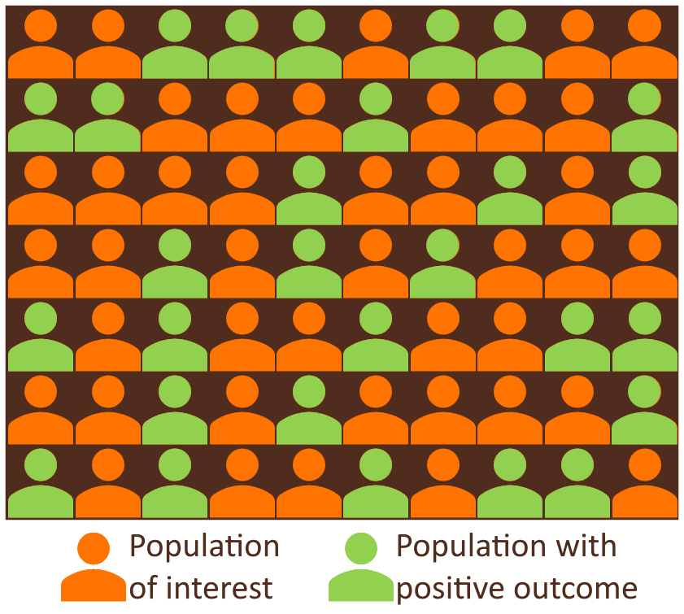</p>
<ul>
<li>Model the probability of<br>
positive outcome based<br>
on explanatory variables<br>
              <span class="math inline">\(\downarrow\)</span><br></li>
<li>Use model to predict<br>
those most likely to have<br>
outcome in future</li>
</ul>
<p>Idea with gross scoring is this:</p>
<ul>
<li>Predict target outcome for every individual based on IVs</li>
<li>Use the results to guide strategy based on how the IVs affect the outcome
<ul>
<li>I.e., Use some treatment, like a coupon, to target those people with specific IV characteristics</li>
</ul></li>
</ul>
<p>Think about our gain chart from before:</p>
<ul>
<li>Model predicts those most likely to churn</li>
<li>Want to use resources effectively, so only target top 35% most likely to churn with some offer
<ul>
<li>By doing so, we reach almost 70% of the predicted churners</li>
</ul></li>
</ul>
<p>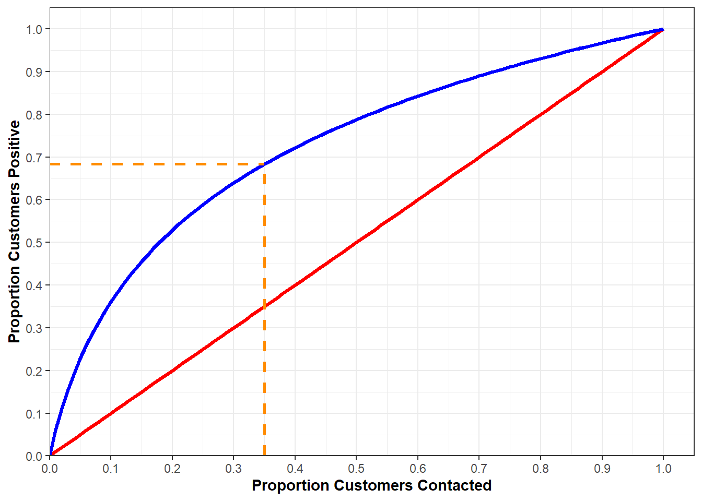</p>
<p>The Problem:</p>
<ul>
<li>Ignores the effect of the treatment
<ul>
<li>Assumes treatment effect is same across everyone</li>
</ul></li>
<li>Modelling used IVs to see what was driving outcome, but…
<ul>
<li>Treatment wasn’t likely included…
<ul>
<li>And if it was, probably not randomly</li>
</ul></li>
</ul></li>
<li>End up applying treatment to everyone in the “top x%” group, even if the treatment:
<ul>
<li>Is unlikely to work on them (i.e., <strong>Lost Causes</strong>)</li>
<li>Is not needed to actually get the favorable oucome (i.e., <strong>Sure Things</strong>)</li>
<li>Might actually backfire (i.e., <strong>Sleeping Dogs</strong>)</li>
<li>Is not used where it would have worked (i.e., <strong>Persuadables</strong>)</li>
</ul></li>
<li>All of this Can lead to wrong allocation of scarce resources</li>
</ul>
<p>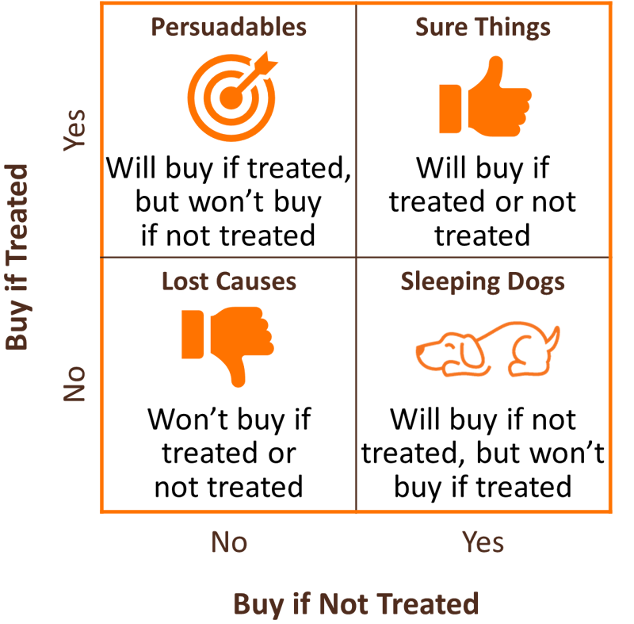</p>
</div>
<div id="net-scoring-using-ab-testing" class="section level2 hasAnchor" number="7.4">
<h2><span class="header-section-number">7.4</span> Net Scoring using A/B Testing<a href="ab-testing-and-uplift-modeling.html#net-scoring-using-ab-testing" class="anchor-section" aria-label="Anchor link to header"></a></h2>
<p>Net scoring with A/B testing does things differently</p>
<ul>
<li>Essentially a two-sample experiment</li>
<li>Purpose is to measure impact of marketing mix change</li>
</ul>
<p>How it’s done…</p>
<ul>
<li>Still have population of interest</li>
<li>Could run experiment on everyone, but if marketing mix change is not positive, we get a very negative outcome</li>
<li>Instead …
<ul>
<li>Take random sample of population of interest</li>
<li>Randomly split that sample into two groups
<ul>
<li>Control group (doesn’t get a treatment)</li>
<li>Test group (does get a treatment)</li>
</ul></li>
<li>Random assignment to each group helps ensure users in each group are similar</li>
</ul></li>
</ul>
<p>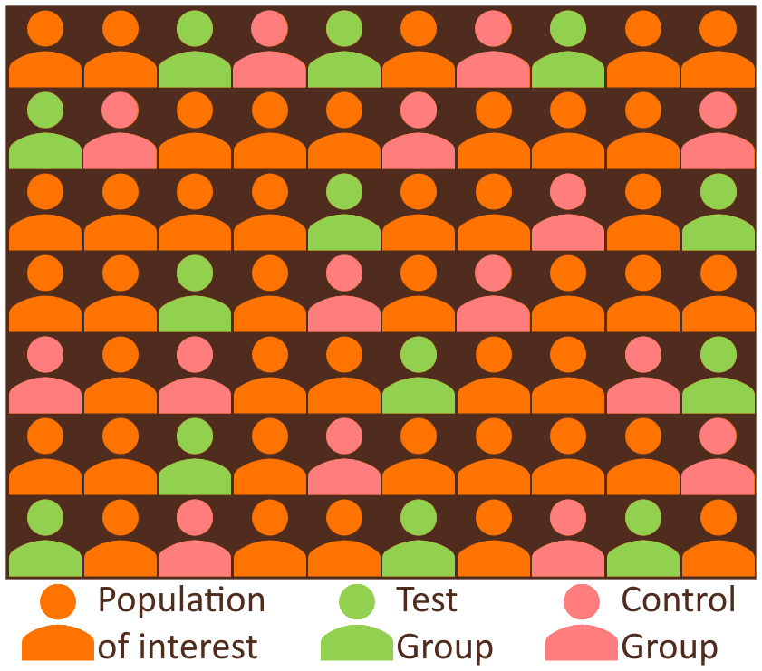</p>
<div id="what-is-ab-testing" class="section level3 hasAnchor" number="7.4.1">
<h3><span class="header-section-number">7.4.1</span> What is A/B Testing?<a href="ab-testing-and-uplift-modeling.html#what-is-ab-testing" class="anchor-section" aria-label="Anchor link to header"></a></h3>
<p>After splitting random sample into test and and control groups…</p>
<ul>
<li>At <span class="math inline">\(T_1\)</span>, test group gets treatment (e.g., coupon) and control group does not</li>
<li>At <span class="math inline">\(T_2\)</span>, outcome is measured for both groups</li>
<li><span class="math inline">\(Test\ Group \rightarrow Treatment \rightarrow Metric_{Test}\)</span><br>
<span class="math inline">\(Control\ Group \rightarrow No\ Treatment \rightarrow Metric_{Control}\)</span></li>
<li><span class="math inline">\(Treatment\ Effect=Metric_{Test}-Metric_{Control}\)</span>
<ul>
<li>Treatment effect often called “lift”, similar to “gain” from before</li>
</ul></li>
</ul>
<p>Treatment effect may not be the same for all population characteristics, so…<br>
Figure out who to apply treatment to and who not to apply treatment to</p>
</div>
<div id="test-group-vs.-control-group" class="section level3 hasAnchor" number="7.4.2">
<h3><span class="header-section-number">7.4.2</span> Test Group vs. Control Group<a href="ab-testing-and-uplift-modeling.html#test-group-vs.-control-group" class="anchor-section" aria-label="Anchor link to header"></a></h3>
<p>Randomization is <strong><em>extremely</em></strong> important when selecting test and control groups, therefore often do a randomization check based on other population characteristics (e.g., demographics, past usage, customer type, etc.)</p>
<table>
<colgroup>
<col width="25%" />
<col width="17%" />
<col width="23%" />
<col width="33%" />
</colgroup>
<thead>
<tr class="header">
<th align="center">Characteristic</th>
<th align="center">Test Group</th>
<th align="center">Control Group</th>
<th align="center">Randomization Check</th>
</tr>
</thead>
<tbody>
<tr class="odd">
<td align="center">Income</td>
<td align="center"><span class="math inline">\(\mu_{Income}=\$47,594\)</span></td>
<td align="center"><span class="math inline">\(\mu_{Income}=\$48,978\)</span></td>
<td align="center">No significant difference<br>between <strong>Test</strong> and <strong>Control</strong></td>
</tr>
<tr class="even">
<td align="center">Own/Rent</td>
<td align="center"><span class="math inline">\(\pi_{Own}=0.73\)</span></td>
<td align="center"><span class="math inline">\(\pi_{Own}=0.51\)</span></td>
<td align="center"><strong>Test</strong> significantly more likely<br>to own than <strong>Control</strong></td>
</tr>
<tr class="odd">
<td align="center">Purchases</td>
<td align="center"><span class="math inline">\(\mu_{Past60}=\$75.23\)</span></td>
<td align="center"><span class="math inline">\(\mu_{Past60}=\$98.75\)</span></td>
<td align="center"><strong>Test</strong> purchases significantly less<br>in last 60 days than <strong>Control</strong></td>
</tr>
<tr class="even">
<td align="center">Tenure</td>
<td align="center"><span class="math inline">\(\mu_{Tenure}=65\text{ months}\)</span></td>
<td align="center"><span class="math inline">\(\mu_{Tenure}=63\text{ months}\)</span></td>
<td align="center">No significant difference<br>between <strong>Test</strong> and <strong>Control</strong></td>
</tr>
</tbody>
</table>
</div>
<div id="characteristics-of-a-good-metric" class="section level3 hasAnchor" number="7.4.3">
<h3><span class="header-section-number">7.4.3</span> Characteristics of a Good Metric<a href="ab-testing-and-uplift-modeling.html#characteristics-of-a-good-metric" class="anchor-section" aria-label="Anchor link to header"></a></h3>
<ul>
<li>Easy to Understand
<ul>
<li>If people can’t quickly interpret it…<br>It’s less likely to be accepted…<br>Harder to get buy-in on results</li>
</ul></li>
<li>Simple to Computer
<ul>
<li>Metrics with complex formulas are difficult to interpret…<br>And thus not <em>Easy to Understand</em></li>
</ul></li>
<li>Actionable
<ul>
<li>If the metric is positive (or negative)…<br>You’ll want to take action to take advantage or fix</li>
</ul></li>
<li>Reliable to Produce
<ul>
<li>Reliability means trust in the metric…<br>More likely you’ll want to take action</li>
</ul></li>
</ul>
</div>
</div>
<div id="uplift-modeling" class="section level2 hasAnchor" number="7.5">
<h2><span class="header-section-number">7.5</span> Uplift Modeling<a href="ab-testing-and-uplift-modeling.html#uplift-modeling" class="anchor-section" aria-label="Anchor link to header"></a></h2>
<div id="what-is-uplift-modeling" class="section level3 hasAnchor" number="7.5.1">
<h3><span class="header-section-number">7.5.1</span> What is Uplift Modeling?<a href="ab-testing-and-uplift-modeling.html#what-is-uplift-modeling" class="anchor-section" aria-label="Anchor link to header"></a></h3>
<ol style="list-style-type: decimal">
<li>Uplift modeling is a net scoring method</li>
<li>Forecasts effect of a treatment on an observation</li>
<li>Example at a group level
<span class="math display">\[
\text{Let: }
\begin{aligned}
g&amp;=
\begin{cases}
T \text{ or test group} \\
C \text{ for control group}
\end{cases} \\\\
O^g_i&amp;=
\begin{cases}
1\text{ if outcome is positive for individual }i\text{ in group }g \\
0\text{ if outcome is negative for individual }i\text{ in group }g
\end{cases} \\\\
N^g&amp;=\text{Total number of observations in group }g \\\\
CR^g&amp;=\text{Conversion rate for group }g \\\\
\end{aligned}
\]</span>
<span class="math display">\[
\text{Then: }CR^T=\frac{\sum_{i=1}^{N^T}{O^T_i}}{N^T}
\]</span>
<span class="math display">\[
\text{and: }CR^C=\frac{\sum_{i=1}^{N^C}{O^C_i}}{N^C}
\]</span>
<span class="math display">\[
\text{Uplift}=CR^T-CR^C
\]</span></li>
</ol>
</div>
<div id="types-of-uplift-models" class="section level3 hasAnchor" number="7.5.2">
<h3><span class="header-section-number">7.5.2</span> Types of Uplift Models<a href="ab-testing-and-uplift-modeling.html#types-of-uplift-models" class="anchor-section" aria-label="Anchor link to header"></a></h3>
<ul>
<li>Direct Modeling uses tree-based approaches to model difference in probabilities between two treatment groups<br>
<span style="color: red;">BEYOND THE SCOPE OF THIS CLASS</span></li>
<li>Indirect Modeling uses response models to modelexpected response for different treatments
<ul>
<li>One-Model Approach</li>
<li>Two-Model Approach
<ul>
<li>You already have the skill to do one- and two-model approaches!</li>
</ul></li>
<li>Other Approaches</li>
</ul></li>
</ul>
</div>
<div id="uplift-modeling-1" class="section level3 hasAnchor" number="7.5.3">
<h3><span class="header-section-number">7.5.3</span> Uplift Modeling<a href="ab-testing-and-uplift-modeling.html#uplift-modeling-1" class="anchor-section" aria-label="Anchor link to header"></a></h3>
<div id="one-model-approach" class="section level4 hasAnchor" number="7.5.3.1">
<h4><span class="header-section-number">7.5.3.1</span> One-Model Approach<a href="ab-testing-and-uplift-modeling.html#one-model-approach" class="anchor-section" aria-label="Anchor link to header"></a></h4>
<ol style="list-style-type: decimal">
<li><p>Combine control group and test groups into single dataset<br>
<span class="math display">\[
\text{Let: }T_i=
\begin{cases}
1 \text{ if individual }i \text{receives treatment} \\
0 \text{ if individual }i \text{does not receive treatment}
\end{cases}
\]</span></p></li>
<li><p>Estimate Model S for all observations<br>
<span class="math display">\[
\text{Model S: }Y_i=\alpha+\mathbf{BX}_i+\theta T_i+\varepsilon_i
\]</span></p></li>
<li><p>Set <span class="math inline">\(T=1\)</span>: Predict <span class="math inline">\(\hat{Y}_{i,T=1}\)</span> based on Model S<br>
Set <span class="math inline">\(T=0\)</span>: Predict <span class="math inline">\(\hat{Y}_{i,T=0}\)</span> based on Model S<br></p></li>
<li><p>Calculate Uplift for each <span class="math inline">\(i\)</span>: <span class="math inline">\({Uplift}_i=\hat{Y}_{i,T=1}-\hat{Y}_{i,T=0}\)</span></p></li>
</ol>
</div>
<div id="two-model-approach" class="section level4 hasAnchor" number="7.5.3.2">
<h4><span class="header-section-number">7.5.3.2</span> Two-Model Approach<a href="ab-testing-and-uplift-modeling.html#two-model-approach" class="anchor-section" aria-label="Anchor link to header"></a></h4>
<p>In this class, we will follow the two-model approach</p>
<ol style="list-style-type: decimal">
<li>On test group, estimate Model T<sub>1</sub>: <span class="math inline">\(Y_i=\alpha+\mathbf{BX}_i+\varepsilon_i\)</span><br>
On control group, estimate Model T<sub>0</sub>: <span class="math inline">\(Y_i=\alpha+\mathbf{BX}_i+\varepsilon_i\)</span></li>
<li>Combine control group and test group into single dataset</li>
<li>Predict <span class="math inline">\(\hat{Y}_{i,T=1}\)</span> based on Model T<sub>1</sub><br>
Predict <span class="math inline">\(\hat{Y}_{i,T=0}\)</span> based on Model T<sub>0</sub></li>
<li>Calculate Uplift for each <span class="math inline">\(i\)</span>: <span class="math inline">\({Uplift}_i=\hat{Y}_{i,T=1}-\hat{Y}_{i,T=0}\)</span></li>
</ol>
</div>
</div>
</div>
<div id="conducting-uplift-modeling" class="section level2 hasAnchor" number="7.6">
<h2><span class="header-section-number">7.6</span> Conducting Uplift Modeling<a href="ab-testing-and-uplift-modeling.html#conducting-uplift-modeling" class="anchor-section" aria-label="Anchor link to header"></a></h2>
<p>Steps:</p>
<ul>
<li>Examine Data</li>
<li>Randomization Check</li>
<li>Average Treatment Effect</li>
<li>Perform Uplift Modeling</li>
<li>Examine Alternative Models/Validate Model</li>
</ul>
<div id="examine-data" class="section level3 hasAnchor" number="7.6.1">
<h3><span class="header-section-number">7.6.1</span> Examine Data<a href="ab-testing-and-uplift-modeling.html#examine-data" class="anchor-section" aria-label="Anchor link to header"></a></h3>
<ul>
<li>Summary Statistics
<ul>
<li>Overall</li>
<li>By treatment group</li>
<li>Means/standard deviations for continuous variables</li>
<li>Frequencies/crosstabs for factor variables</li>
</ul></li>
</ul>
</div>
<div id="randomization-check" class="section level3 hasAnchor" number="7.6.2">
<h3><span class="header-section-number">7.6.2</span> Randomization Check<a href="ab-testing-and-uplift-modeling.html#randomization-check" class="anchor-section" aria-label="Anchor link to header"></a></h3>
<ul>
<li>Covariate balance check
<ul>
<li>Are treatment and control groups similar based on observed covariates and characteristics</li>
<li>Looking for scaled mean differences less than 0.2</li>
<li>Looking for insignificant <span class="math inline">\(t\)</span>-tests</li>
</ul></li>
</ul>
</div>
<div id="average-treatment-effect" class="section level3 hasAnchor" number="7.6.3">
<h3><span class="header-section-number">7.6.3</span> Average Treatment Effect<a href="ab-testing-and-uplift-modeling.html#average-treatment-effect" class="anchor-section" aria-label="Anchor link to header"></a></h3>
<ul>
<li>Examine of overall impact of treatment
<ul>
<li>Simple comparisons
<ul>
<li>E.g., independent sample <span class="math inline">\(t\)</span>-tests</li>
</ul></li>
<li>Comparisons controlling for observed heterogeneity
<ul>
<li>Regression analysis (linear and/or logistic)
<ul>
<li>DV = Outcome</li>
<li>IVs = Observed characteristics/covariates</li>
</ul></li>
</ul></li>
</ul></li>
</ul>
</div>
<div id="perform-uplift-modeling" class="section level3 hasAnchor" number="7.6.4">
<h3><span class="header-section-number">7.6.4</span> Perform Uplift Modeling<a href="ab-testing-and-uplift-modeling.html#perform-uplift-modeling" class="anchor-section" aria-label="Anchor link to header"></a></h3>
<ul>
<li>First: Examine Uplift Modeling Results
<ul>
<li>Uplift Plot by Group
<ul>
<li>Order results by lift and split into groups (e.g., deciles)</li>
<li>Plot mean uplift by group</li>
<li>A good model shows decreasing uplift by group</li>
<li>Can help with determining many to target</li>
<li>Can test significance using Kendall’s <span class="math inline">\(\tau\)</span>
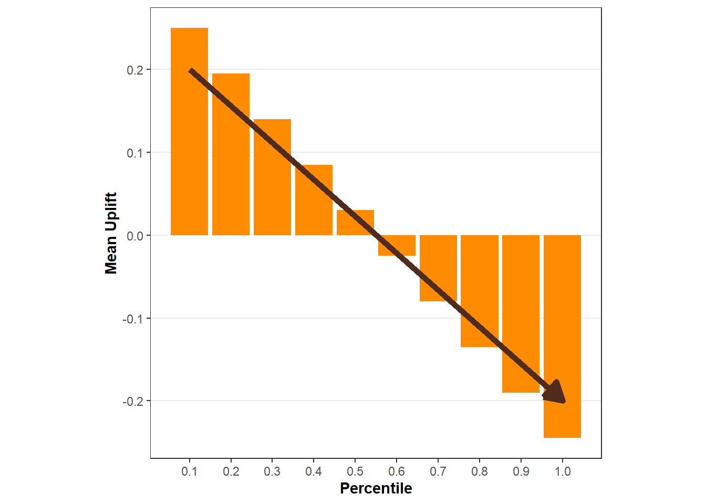</li>
</ul></li>
<li>Cumulative Gain by Group
<ul>
<li>Order and split as before</li>
<li>Plot cumulative gain by group
<ul>
<li>Measure of uplift by number of individuals in groups</li>
</ul></li>
<li>Can see global effect</li>
<li>Can see where gain is maximized
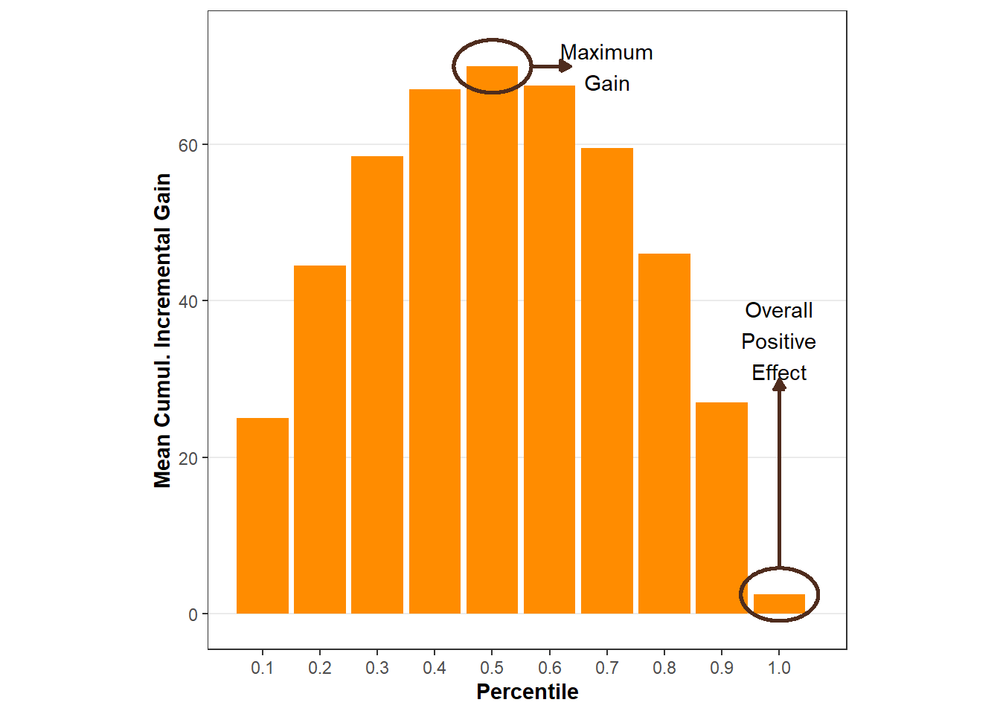</li>
</ul></li>
<li>Qini Curve/Coefficient
<ul>
<li>Order by uplift</li>
<li>Plot cumulative gain by individual</li>
<li>Can see global effect</li>
<li>Can see where gain is maximized</li>
<li>Can get Qini coefficient for comparing models
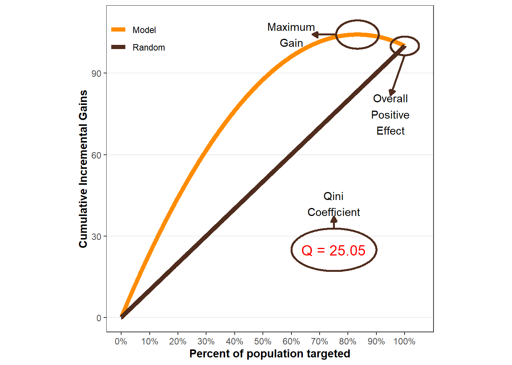</li>
</ul></li>
</ul></li>
<li>Second: Examine Lift by Covariates
<ul>
<li>See which levels of variables have positive or negative effects on lift</li>
<li>Lift plots are a useful way to examine this
<ul>
<li>Can visualize if differences exist between levels of covariates
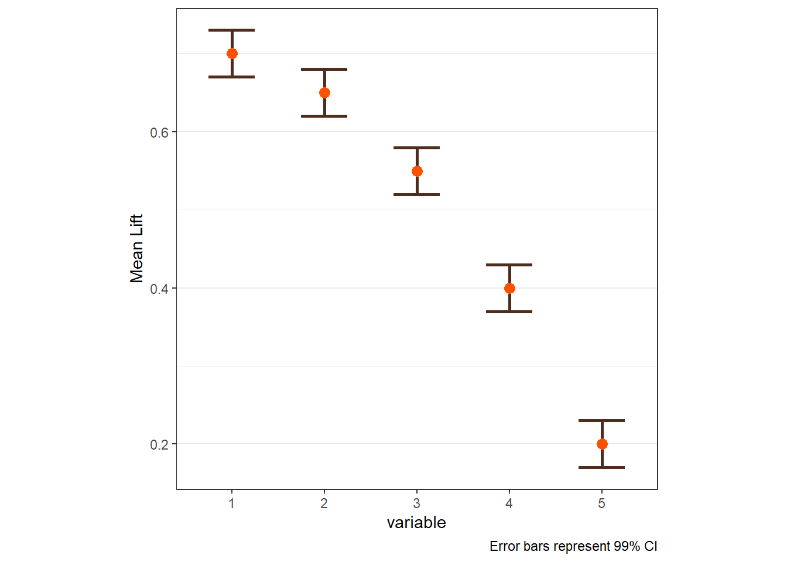</li>
</ul></li>
<li>Examine ranking of covariates with WMAE and CATE
<ul>
<li>Helps determine which variables are most associated with differences in predicted lift across customer groups
<ul>
<li>Factor variables use each level as separate “customer groups“</li>
<li>Continuous variables split customers into “bins“</li>
</ul></li>
<li>Weighted Mean Absolute Error (WMAE)
<ul>
<li>Measures how much uplift differs across a variable’s groups, on average, accounting for group size</li>
</ul></li>
<li>Maximum Conditional Average Treatment Effect (CATE)
<ul>
<li>Measures treatment effect for specific subgroup instead of full sample, but can be driven by small subgroups</li>
</ul></li>
<li>For both WMAE and CATE, higher values indicate that predicted lift differs more across the groups of that variable, but…</li>
<li><strong>WMAE is a better measure for overall importance</strong></li>
</ul></li>
</ul></li>
</ul>
</div>
<div id="examine-alternative-models" class="section level3 hasAnchor" number="7.6.5">
<h3><span class="header-section-number">7.6.5</span> Examine Alternative Models<a href="ab-testing-and-uplift-modeling.html#examine-alternative-models" class="anchor-section" aria-label="Anchor link to header"></a></h3>
<ul>
<li>Examine different combinations of covariates</li>
<li>Check interactions between covariates</li>
<li>Compare alternative models with base model</li>
</ul>
</div>
<div id="validate-model-with-new-data" class="section level3 hasAnchor" number="7.6.6">
<h3><span class="header-section-number">7.6.6</span> Validate Model with New Data<a href="ab-testing-and-uplift-modeling.html#validate-model-with-new-data" class="anchor-section" aria-label="Anchor link to header"></a></h3>
<ul>
<li>Optional, as data is not always available</li>
<li>Similar concept to training/test data used before</li>
<li>Holdout data can be from same sample
<ul>
<li>Split sample before running initial model</li>
</ul></li>
<li>New data can be from “next time period”
<ul>
<li>For example: Estimate model with January data<br>Validate model with February data</li>
</ul></li>
<li>Validate by examining lift plots, uplift by group, cumulative gain by group, and Qini curves</li>
</ul>
</div>
</div>
<div id="example-ab-testing-and-uplift-modeling" class="section level2 hasAnchor" number="7.7">
<h2><span class="header-section-number">7.7</span> Example: A/B Testing and Uplift Modeling<a href="ab-testing-and-uplift-modeling.html#example-ab-testing-and-uplift-modeling" class="anchor-section" aria-label="Anchor link to header"></a></h2>
<div id="data" class="section level3 hasAnchor" number="7.7.1">
<h3><span class="header-section-number">7.7.1</span> Data<a href="ab-testing-and-uplift-modeling.html#data" class="anchor-section" aria-label="Anchor link to header"></a></h3>
<ul>
<li>A/B Test for Email Marketing Campaign for Retailer
<ul>
<li>5000 observations each in Test/Control groups</li>
<li>DV (binary): Website visit, <span class="math inline">\(visit\)</span> (1 = yes, 0 = no)<br>
DV (cont): Dollars spent, <span class="math inline">\(spend\)</span> (actual dollars)</li>
<li>Treatment (binary): promotion, <span class="math inline">\(promotion\)</span> (1 = yes, 0 = no)</li>
<li>IVs:
<ul>
<li><span class="math inline">\(recency\)</span>: months since last purchase</li>
<li><span class="math inline">\(history\)</span>: dollars spent in past year</li>
<li><span class="math inline">\(womens\)</span>: purchased women’s merch. in past year (1 = yes, 0 = no)</li>
<li><span class="math inline">\(zip\)</span>: location classifier (Rural/Suburban/Urban)</li>
<li><span class="math inline">\(newbie\)</span>: new customer in past year (1 = yes, 0 = no)</li>
<li><span class="math inline">\(channel\)</span>: channels purchased from in past year (Multi/Phone/Web)</li>
</ul></li>
</ul></li>
</ul>
</div>
<div id="summary-statistics" class="section level3 hasAnchor" number="7.7.2">
<h3><span class="header-section-number">7.7.2</span> Summary Statistics<a href="ab-testing-and-uplift-modeling.html#summary-statistics" class="anchor-section" aria-label="Anchor link to header"></a></h3>
<ul>
<li>Nothing unusual here</li>
<li>13% of sample visited site in next two weeks, but most didn’t purchase</li>
<li>All 10,000 had purchased something in past year</li>
</ul>
<details class=chunk-details><summary class=chunk-summary><span class=chunk-summary-text>Code</span></summary>
<div class="sourceCode" id="cb92"><pre class="sourceCode r"><code class="sourceCode r"><span id="cb92-1"><a href="ab-testing-and-uplift-modeling.html#cb92-1" tabindex="-1"></a><span class="fu">sumtable</span>(email.camp.w, <span class="at">vars=</span><span class="fu">c</span>(<span class="st">&quot;visit&quot;</span>, <span class="st">&quot;spend&quot;</span>, <span class="st">&quot;recency&quot;</span>, <span class="st">&quot;history&quot;</span>, </span>
<span id="cb92-2"><a href="ab-testing-and-uplift-modeling.html#cb92-2" tabindex="-1"></a>                              <span class="st">&quot;womens&quot;</span>, <span class="st">&quot;newbie&quot;</span>, <span class="st">&quot;zip&quot;</span>, <span class="st">&quot;channel&quot;</span>))</span></code></pre></div>
</details>
<table class="table" style="margin-left: auto; margin-right: auto;">
<caption>
<span id="tab:t7summstat">Table 7.1: </span>Summary Statistics
</caption>
<thead>
<tr>
<th style="text-align:left;">
Variable
</th>
<th style="text-align:left;">
N
</th>
<th style="text-align:left;">
Mean
</th>
<th style="text-align:left;">
Std. Dev.
</th>
<th style="text-align:left;">
Min
</th>
<th style="text-align:left;">
Pctl. 25
</th>
<th style="text-align:left;">
Pctl. 75
</th>
<th style="text-align:left;">
Max
</th>
</tr>
</thead>
<tbody>
<tr>
<td style="text-align:left;">
visit
</td>
<td style="text-align:left;">
10000
</td>
<td style="text-align:left;">
0.13
</td>
<td style="text-align:left;">
0.34
</td>
<td style="text-align:left;">
0
</td>
<td style="text-align:left;">
0
</td>
<td style="text-align:left;">
0
</td>
<td style="text-align:left;">
1
</td>
</tr>
<tr>
<td style="text-align:left;">
spend
</td>
<td style="text-align:left;">
10000
</td>
<td style="text-align:left;">
0.87
</td>
<td style="text-align:left;">
14
</td>
<td style="text-align:left;">
0
</td>
<td style="text-align:left;">
0
</td>
<td style="text-align:left;">
0
</td>
<td style="text-align:left;">
499
</td>
</tr>
<tr>
<td style="text-align:left;">
recency
</td>
<td style="text-align:left;">
10000
</td>
<td style="text-align:left;">
5.8
</td>
<td style="text-align:left;">
3.5
</td>
<td style="text-align:left;">
1
</td>
<td style="text-align:left;">
2
</td>
<td style="text-align:left;">
9
</td>
<td style="text-align:left;">
12
</td>
</tr>
<tr>
<td style="text-align:left;">
history
</td>
<td style="text-align:left;">
10000
</td>
<td style="text-align:left;">
244
</td>
<td style="text-align:left;">
253
</td>
<td style="text-align:left;">
30
</td>
<td style="text-align:left;">
66
</td>
<td style="text-align:left;">
331
</td>
<td style="text-align:left;">
3346
</td>
</tr>
<tr>
<td style="text-align:left;">
womens
</td>
<td style="text-align:left;">
10000
</td>
<td style="text-align:left;">
0.54
</td>
<td style="text-align:left;">
0.5
</td>
<td style="text-align:left;">
0
</td>
<td style="text-align:left;">
0
</td>
<td style="text-align:left;">
1
</td>
<td style="text-align:left;">
1
</td>
</tr>
<tr>
<td style="text-align:left;">
newbie
</td>
<td style="text-align:left;">
10000
</td>
<td style="text-align:left;">
0.49
</td>
<td style="text-align:left;">
0.5
</td>
<td style="text-align:left;">
0
</td>
<td style="text-align:left;">
0
</td>
<td style="text-align:left;">
1
</td>
<td style="text-align:left;">
1
</td>
</tr>
<tr>
<td style="text-align:left;">
zip
</td>
<td style="text-align:left;">
10000
</td>
<td style="text-align:left;">
</td>
<td style="text-align:left;">
</td>
<td style="text-align:left;">
</td>
<td style="text-align:left;">
</td>
<td style="text-align:left;">
</td>
<td style="text-align:left;">
</td>
</tr>
<tr>
<td style="text-align:left;">
… Rural
</td>
<td style="text-align:left;">
1459
</td>
<td style="text-align:left;">
15%
</td>
<td style="text-align:left;">
</td>
<td style="text-align:left;">
</td>
<td style="text-align:left;">
</td>
<td style="text-align:left;">
</td>
<td style="text-align:left;">
</td>
</tr>
<tr>
<td style="text-align:left;">
… Surburban
</td>
<td style="text-align:left;">
4521
</td>
<td style="text-align:left;">
45%
</td>
<td style="text-align:left;">
</td>
<td style="text-align:left;">
</td>
<td style="text-align:left;">
</td>
<td style="text-align:left;">
</td>
<td style="text-align:left;">
</td>
</tr>
<tr>
<td style="text-align:left;">
… Urban
</td>
<td style="text-align:left;">
4020
</td>
<td style="text-align:left;">
40%
</td>
<td style="text-align:left;">
</td>
<td style="text-align:left;">
</td>
<td style="text-align:left;">
</td>
<td style="text-align:left;">
</td>
<td style="text-align:left;">
</td>
</tr>
<tr>
<td style="text-align:left;">
channel
</td>
<td style="text-align:left;">
10000
</td>
<td style="text-align:left;">
</td>
<td style="text-align:left;">
</td>
<td style="text-align:left;">
</td>
<td style="text-align:left;">
</td>
<td style="text-align:left;">
</td>
<td style="text-align:left;">
</td>
</tr>
<tr>
<td style="text-align:left;">
… Multichannel
</td>
<td style="text-align:left;">
1206
</td>
<td style="text-align:left;">
12%
</td>
<td style="text-align:left;">
</td>
<td style="text-align:left;">
</td>
<td style="text-align:left;">
</td>
<td style="text-align:left;">
</td>
<td style="text-align:left;">
</td>
</tr>
<tr>
<td style="text-align:left;">
… Phone
</td>
<td style="text-align:left;">
4377
</td>
<td style="text-align:left;">
44%
</td>
<td style="text-align:left;">
</td>
<td style="text-align:left;">
</td>
<td style="text-align:left;">
</td>
<td style="text-align:left;">
</td>
<td style="text-align:left;">
</td>
</tr>
<tr>
<td style="text-align:left;">
… Web
</td>
<td style="text-align:left;">
4417
</td>
<td style="text-align:left;">
44%
</td>
<td style="text-align:left;">
</td>
<td style="text-align:left;">
</td>
<td style="text-align:left;">
</td>
<td style="text-align:left;">
</td>
<td style="text-align:left;">
</td>
</tr>
</tbody>
</table>
</div>
<div id="randomization-check-1" class="section level3 hasAnchor" number="7.7.3">
<h3><span class="header-section-number">7.7.3</span> Randomization Check<a href="ab-testing-and-uplift-modeling.html#randomization-check-1" class="anchor-section" aria-label="Anchor link to header"></a></h3>
<ul>
<li>A/B Test appears to be properly randomized
<ul>
<li>All Scaled Mean Differences less than 0.2</li>
<li>No p-values less than 0.1</li>
</ul></li>
</ul>
<details class=chunk-details><summary class=chunk-summary><span class=chunk-summary-text>Code</span></summary>
<div class="sourceCode" id="cb93"><pre class="sourceCode r"><code class="sourceCode r"><span id="cb93-1"><a href="ab-testing-and-uplift-modeling.html#cb93-1" tabindex="-1"></a><span class="fu">rand_check</span>(<span class="at">data =</span> email.camp.w, <span class="at">treatment =</span> <span class="st">&quot;promotion&quot;</span>, </span>
<span id="cb93-2"><a href="ab-testing-and-uplift-modeling.html#cb93-2" tabindex="-1"></a>           <span class="at">covariates =</span> <span class="fu">c</span>(<span class="st">&quot;recency&quot;</span>, <span class="st">&quot;history&quot;</span>, <span class="st">&quot;womens&quot;</span>, <span class="st">&quot;newbie&quot;</span>, </span>
<span id="cb93-3"><a href="ab-testing-and-uplift-modeling.html#cb93-3" tabindex="-1"></a>                          <span class="st">&quot;zip&quot;</span>, <span class="st">&quot;channel&quot;</span>))</span></code></pre></div>
</details>
<div class="tabwid"><style>.cl-2da5f180{}.cl-2d9c4f72{font-family:'Arial';font-size:11pt;font-weight:bold;font-style:normal;text-decoration:none;color:rgba(0, 0, 0, 1.00);background-color:transparent;}.cl-2d9c4f7c{font-family:'Arial';font-size:11pt;font-weight:normal;font-style:normal;text-decoration:none;color:rgba(0, 0, 0, 1.00);background-color:transparent;}.cl-2da0557c{margin:0;text-align:center;border-bottom: 0 solid rgba(0, 0, 0, 1.00);border-top: 0 solid rgba(0, 0, 0, 1.00);border-left: 0 solid rgba(0, 0, 0, 1.00);border-right: 0 solid rgba(0, 0, 0, 1.00);padding-bottom:5pt;padding-top:5pt;padding-left:5pt;padding-right:5pt;line-height: 1;background-color:transparent;}.cl-2da05586{margin:0;text-align:left;border-bottom: 0 solid rgba(0, 0, 0, 1.00);border-top: 0 solid rgba(0, 0, 0, 1.00);border-left: 0 solid rgba(0, 0, 0, 1.00);border-right: 0 solid rgba(0, 0, 0, 1.00);padding-bottom:1pt;padding-top:1pt;padding-left:5pt;padding-right:5pt;line-height: 1;background-color:transparent;}.cl-2da05590{margin:0;text-align:right;border-bottom: 0 solid rgba(0, 0, 0, 1.00);border-top: 0 solid rgba(0, 0, 0, 1.00);border-left: 0 solid rgba(0, 0, 0, 1.00);border-right: 0 solid rgba(0, 0, 0, 1.00);padding-bottom:1pt;padding-top:1pt;padding-left:5pt;padding-right:5pt;line-height: 1;background-color:transparent;}.cl-2da09172{width:0.75in;background-color:transparent;vertical-align: bottom;border-bottom: 1.5pt solid rgba(102, 102, 102, 1.00);border-top: 1.5pt solid rgba(102, 102, 102, 1.00);border-left: 0 solid rgba(0, 0, 0, 1.00);border-right: 0 solid rgba(0, 0, 0, 1.00);margin-bottom:0;margin-top:0;margin-left:0;margin-right:0;}.cl-2da0917c{width:0.75in;background-color:transparent;vertical-align: middle;border-bottom: 0 solid rgba(0, 0, 0, 1.00);border-top: 0 solid rgba(0, 0, 0, 1.00);border-left: 0 solid rgba(0, 0, 0, 1.00);border-right: 0 solid rgba(0, 0, 0, 1.00);margin-bottom:0;margin-top:0;margin-left:0;margin-right:0;}.cl-2da0917d{width:0.75in;background-color:transparent;vertical-align: middle;border-bottom: 0 solid rgba(0, 0, 0, 1.00);border-top: 0 solid rgba(0, 0, 0, 1.00);border-left: 0 solid rgba(0, 0, 0, 1.00);border-right: 0 solid rgba(0, 0, 0, 1.00);margin-bottom:0;margin-top:0;margin-left:0;margin-right:0;}.cl-2da09186{width:0.75in;background-color:transparent;vertical-align: middle;border-bottom: 1.5pt solid rgba(102, 102, 102, 1.00);border-top: 0 solid rgba(0, 0, 0, 1.00);border-left: 0 solid rgba(0, 0, 0, 1.00);border-right: 0 solid rgba(0, 0, 0, 1.00);margin-bottom:0;margin-top:0;margin-left:0;margin-right:0;}.cl-2da09187{width:0.75in;background-color:transparent;vertical-align: middle;border-bottom: 1.5pt solid rgba(102, 102, 102, 1.00);border-top: 0 solid rgba(0, 0, 0, 1.00);border-left: 0 solid rgba(0, 0, 0, 1.00);border-right: 0 solid rgba(0, 0, 0, 1.00);margin-bottom:0;margin-top:0;margin-left:0;margin-right:0;}</style><table data-quarto-disable-processing='true' class='cl-2da5f180'><thead><tr style="overflow-wrap:break-word;"><th  rowspan="2"class="cl-2da09172"><p class="cl-2da0557c"><span class="cl-2d9c4f72">Variable</span></p></th><th  colspan="2"class="cl-2da09172"><p class="cl-2da0557c"><span class="cl-2d9c4f72">Mean</span></p></th><th  rowspan="2"class="cl-2da09172"><p class="cl-2da0557c"><span class="cl-2d9c4f72">SD</span></p></th><th  rowspan="2"class="cl-2da09172"><p class="cl-2da0557c"><span class="cl-2d9c4f72">Scaled Mean Difference</span></p></th><th  rowspan="2"class="cl-2da09172"><p class="cl-2da0557c"><span class="cl-2d9c4f72">p-value</span></p></th></tr><tr style="overflow-wrap:break-word;"><th class="cl-2da09172"><p class="cl-2da0557c"><span class="cl-2d9c4f72">Treatment</span></p></th><th class="cl-2da09172"><p class="cl-2da0557c"><span class="cl-2d9c4f72">Control</span></p></th></tr></thead><tbody><tr style="overflow-wrap:break-word;"><td class="cl-2da0917c"><p class="cl-2da05586"><span class="cl-2d9c4f7c">recency</span></p></td><td class="cl-2da0917d"><p class="cl-2da05590"><span class="cl-2d9c4f7c">5.810</span></p></td><td class="cl-2da0917d"><p class="cl-2da05590"><span class="cl-2d9c4f7c">5.725</span></p></td><td class="cl-2da0917d"><p class="cl-2da05590"><span class="cl-2d9c4f7c">3.504</span></p></td><td class="cl-2da0917d"><p class="cl-2da05590"><span class="cl-2d9c4f7c">0.024</span></p></td><td class="cl-2da0917d"><p class="cl-2da05590"><span class="cl-2d9c4f7c">0.227</span></p></td></tr><tr style="overflow-wrap:break-word;"><td class="cl-2da0917c"><p class="cl-2da05586"><span class="cl-2d9c4f7c">history</span></p></td><td class="cl-2da0917d"><p class="cl-2da05590"><span class="cl-2d9c4f7c">245.995</span></p></td><td class="cl-2da0917d"><p class="cl-2da05590"><span class="cl-2d9c4f7c">242.539</span></p></td><td class="cl-2da0917d"><p class="cl-2da05590"><span class="cl-2d9c4f7c">253.384</span></p></td><td class="cl-2da0917d"><p class="cl-2da05590"><span class="cl-2d9c4f7c">0.014</span></p></td><td class="cl-2da0917d"><p class="cl-2da05590"><span class="cl-2d9c4f7c">0.495</span></p></td></tr><tr style="overflow-wrap:break-word;"><td class="cl-2da0917c"><p class="cl-2da05586"><span class="cl-2d9c4f7c">womens</span></p></td><td class="cl-2da0917d"><p class="cl-2da05590"><span class="cl-2d9c4f7c">0.545</span></p></td><td class="cl-2da0917d"><p class="cl-2da05590"><span class="cl-2d9c4f7c">0.539</span></p></td><td class="cl-2da0917d"><p class="cl-2da05590"><span class="cl-2d9c4f7c">0.498</span></p></td><td class="cl-2da0917d"><p class="cl-2da05590"><span class="cl-2d9c4f7c">0.011</span></p></td><td class="cl-2da0917d"><p class="cl-2da05590"><span class="cl-2d9c4f7c">0.574</span></p></td></tr><tr style="overflow-wrap:break-word;"><td class="cl-2da0917c"><p class="cl-2da05586"><span class="cl-2d9c4f7c">newbie</span></p></td><td class="cl-2da0917d"><p class="cl-2da05590"><span class="cl-2d9c4f7c">0.497</span></p></td><td class="cl-2da0917d"><p class="cl-2da05590"><span class="cl-2d9c4f7c">0.493</span></p></td><td class="cl-2da0917d"><p class="cl-2da05590"><span class="cl-2d9c4f7c">0.500</span></p></td><td class="cl-2da0917d"><p class="cl-2da05590"><span class="cl-2d9c4f7c">0.007</span></p></td><td class="cl-2da0917d"><p class="cl-2da05590"><span class="cl-2d9c4f7c">0.719</span></p></td></tr><tr style="overflow-wrap:break-word;"><td class="cl-2da0917c"><p class="cl-2da05586"><span class="cl-2d9c4f7c">zip:Rural</span></p></td><td class="cl-2da0917d"><p class="cl-2da05590"><span class="cl-2d9c4f7c">0.143</span></p></td><td class="cl-2da0917d"><p class="cl-2da05590"><span class="cl-2d9c4f7c">0.148</span></p></td><td class="cl-2da0917d"><p class="cl-2da05590"><span class="cl-2d9c4f7c">0.353</span></p></td><td class="cl-2da0917d"><p class="cl-2da05590"><span class="cl-2d9c4f7c">-0.014</span></p></td><td class="cl-2da0917d"><p class="cl-2da05590"><span class="cl-2d9c4f7c">0.395</span></p></td></tr><tr style="overflow-wrap:break-word;"><td class="cl-2da0917c"><p class="cl-2da05586"><span class="cl-2d9c4f7c">zip:Surburban</span></p></td><td class="cl-2da0917d"><p class="cl-2da05590"><span class="cl-2d9c4f7c">0.459</span></p></td><td class="cl-2da0917d"><p class="cl-2da05590"><span class="cl-2d9c4f7c">0.445</span></p></td><td class="cl-2da0917d"><p class="cl-2da05590"><span class="cl-2d9c4f7c">0.498</span></p></td><td class="cl-2da0917d"><p class="cl-2da05590"><span class="cl-2d9c4f7c">0.027</span></p></td><td class="cl-2da0917d"><p class="cl-2da05590"><span class="cl-2d9c4f7c"></span></p></td></tr><tr style="overflow-wrap:break-word;"><td class="cl-2da0917c"><p class="cl-2da05586"><span class="cl-2d9c4f7c">zip:Urban</span></p></td><td class="cl-2da0917d"><p class="cl-2da05590"><span class="cl-2d9c4f7c">0.398</span></p></td><td class="cl-2da0917d"><p class="cl-2da05590"><span class="cl-2d9c4f7c">0.406</span></p></td><td class="cl-2da0917d"><p class="cl-2da05590"><span class="cl-2d9c4f7c">0.490</span></p></td><td class="cl-2da0917d"><p class="cl-2da05590"><span class="cl-2d9c4f7c">-0.017</span></p></td><td class="cl-2da0917d"><p class="cl-2da05590"><span class="cl-2d9c4f7c"></span></p></td></tr><tr style="overflow-wrap:break-word;"><td class="cl-2da0917c"><p class="cl-2da05586"><span class="cl-2d9c4f7c">channel:Multichannel</span></p></td><td class="cl-2da0917d"><p class="cl-2da05590"><span class="cl-2d9c4f7c">0.122</span></p></td><td class="cl-2da0917d"><p class="cl-2da05590"><span class="cl-2d9c4f7c">0.120</span></p></td><td class="cl-2da0917d"><p class="cl-2da05590"><span class="cl-2d9c4f7c">0.326</span></p></td><td class="cl-2da0917d"><p class="cl-2da05590"><span class="cl-2d9c4f7c">0.006</span></p></td><td class="cl-2da0917d"><p class="cl-2da05590"><span class="cl-2d9c4f7c">0.940</span></p></td></tr><tr style="overflow-wrap:break-word;"><td class="cl-2da0917c"><p class="cl-2da05586"><span class="cl-2d9c4f7c">channel:Phone</span></p></td><td class="cl-2da0917d"><p class="cl-2da05590"><span class="cl-2d9c4f7c">0.436</span></p></td><td class="cl-2da0917d"><p class="cl-2da05590"><span class="cl-2d9c4f7c">0.439</span></p></td><td class="cl-2da0917d"><p class="cl-2da05590"><span class="cl-2d9c4f7c">0.496</span></p></td><td class="cl-2da0917d"><p class="cl-2da05590"><span class="cl-2d9c4f7c">-0.005</span></p></td><td class="cl-2da0917d"><p class="cl-2da05590"><span class="cl-2d9c4f7c"></span></p></td></tr><tr style="overflow-wrap:break-word;"><td class="cl-2da09186"><p class="cl-2da05586"><span class="cl-2d9c4f7c">channel:Web</span></p></td><td class="cl-2da09187"><p class="cl-2da05590"><span class="cl-2d9c4f7c">0.442</span></p></td><td class="cl-2da09187"><p class="cl-2da05590"><span class="cl-2d9c4f7c">0.441</span></p></td><td class="cl-2da09187"><p class="cl-2da05590"><span class="cl-2d9c4f7c">0.497</span></p></td><td class="cl-2da09187"><p class="cl-2da05590"><span class="cl-2d9c4f7c">0.001</span></p></td><td class="cl-2da09187"><p class="cl-2da05590"><span class="cl-2d9c4f7c"></span></p></td></tr></tbody></table></div>
</div>
<div id="average-treatment-effect-1" class="section level3 hasAnchor" number="7.7.4">
<h3><span class="header-section-number">7.7.4</span> Average Treatment Effect<a href="ab-testing-and-uplift-modeling.html#average-treatment-effect-1" class="anchor-section" aria-label="Anchor link to header"></a></h3>
<div id="simple-comparisons" class="section level4 hasAnchor" number="7.7.4.1">
<h4><span class="header-section-number">7.7.4.1</span> Simple Comparisons<a href="ab-testing-and-uplift-modeling.html#simple-comparisons" class="anchor-section" aria-label="Anchor link to header"></a></h4>
<ul>
<li>ATE for visit looks like about 5% higher visit rate based on promotion</li>
<li>ATE for spend looks like about $0.40 per customer based on promotion</li>
<li>But, are these differences significant?</li>
</ul>
<details class=chunk-details><summary class=chunk-summary><span class=chunk-summary-text>Code</span></summary>
<div class="sourceCode" id="cb94"><pre class="sourceCode r"><code class="sourceCode r"><span id="cb94-1"><a href="ab-testing-and-uplift-modeling.html#cb94-1" tabindex="-1"></a><span class="co"># Table for both Visit and Spend</span></span>
<span id="cb94-2"><a href="ab-testing-and-uplift-modeling.html#cb94-2" tabindex="-1"></a>email.camp.w <span class="sc">%&gt;%</span> </span>
<span id="cb94-3"><a href="ab-testing-and-uplift-modeling.html#cb94-3" tabindex="-1"></a>    <span class="fu">group_by</span>(promotion) <span class="sc">%&gt;%</span></span>
<span id="cb94-4"><a href="ab-testing-and-uplift-modeling.html#cb94-4" tabindex="-1"></a>    <span class="fu">summarise</span>(<span class="at">n =</span> <span class="fu">n</span>(),</span>
<span id="cb94-5"><a href="ab-testing-and-uplift-modeling.html#cb94-5" tabindex="-1"></a>              <span class="at">ave.visit =</span> <span class="fu">mean</span>(visit),</span>
<span id="cb94-6"><a href="ab-testing-and-uplift-modeling.html#cb94-6" tabindex="-1"></a>              <span class="at">ave.spend =</span> <span class="fu">mean</span>(spend)) </span>
<span id="cb94-7"><a href="ab-testing-and-uplift-modeling.html#cb94-7" tabindex="-1"></a><span class="co"># Graph for Visit</span></span>
<span id="cb94-8"><a href="ab-testing-and-uplift-modeling.html#cb94-8" tabindex="-1"></a>email.camp.w <span class="sc">%&gt;%</span> </span>
<span id="cb94-9"><a href="ab-testing-and-uplift-modeling.html#cb94-9" tabindex="-1"></a>    <span class="fu">group_by</span>(promotion) <span class="sc">%&gt;%</span></span>
<span id="cb94-10"><a href="ab-testing-and-uplift-modeling.html#cb94-10" tabindex="-1"></a>    <span class="fu">summarize</span>(<span class="at">ave.visit=</span><span class="fu">mean</span>(visit)) <span class="sc">%&gt;%</span> </span>
<span id="cb94-11"><a href="ab-testing-and-uplift-modeling.html#cb94-11" tabindex="-1"></a>    <span class="fu">ggplot</span>(<span class="fu">aes</span>(<span class="at">x=</span><span class="fu">factor</span>(promotion), <span class="at">y=</span>ave.visit)) <span class="sc">+</span> </span>
<span id="cb94-12"><a href="ab-testing-and-uplift-modeling.html#cb94-12" tabindex="-1"></a>    <span class="fu">geom_col</span>() <span class="sc">+</span></span>
<span id="cb94-13"><a href="ab-testing-and-uplift-modeling.html#cb94-13" tabindex="-1"></a>    <span class="fu">labs</span>(<span class="at">x=</span><span class="st">&quot;Promotion&quot;</span>, <span class="at">y=</span><span class="st">&quot;Average Visit Rate&quot;</span>) <span class="sc">+</span></span>
<span id="cb94-14"><a href="ab-testing-and-uplift-modeling.html#cb94-14" tabindex="-1"></a>    <span class="fu">scale_x_discrete</span>(<span class="at">labels=</span><span class="fu">c</span>(<span class="st">&quot;0&quot;</span><span class="ot">=</span><span class="st">&quot;No&quot;</span>, <span class="st">&quot;1&quot;</span> <span class="ot">=</span> <span class="st">&quot;Yes&quot;</span>)) <span class="sc">+</span></span>
<span id="cb94-15"><a href="ab-testing-and-uplift-modeling.html#cb94-15" tabindex="-1"></a>    <span class="fu">geom_text</span>(<span class="fu">aes</span>(<span class="at">label=</span>ave.visit),<span class="at">vjust=</span><span class="sc">-</span>.<span class="dv">5</span>) </span>
<span id="cb94-16"><a href="ab-testing-and-uplift-modeling.html#cb94-16" tabindex="-1"></a><span class="co"># Graph for Spend</span></span>
<span id="cb94-17"><a href="ab-testing-and-uplift-modeling.html#cb94-17" tabindex="-1"></a>email.camp.w <span class="sc">%&gt;%</span> </span>
<span id="cb94-18"><a href="ab-testing-and-uplift-modeling.html#cb94-18" tabindex="-1"></a>    <span class="fu">group_by</span>(promotion) <span class="sc">%&gt;%</span></span>
<span id="cb94-19"><a href="ab-testing-and-uplift-modeling.html#cb94-19" tabindex="-1"></a>    <span class="fu">summarize</span>(<span class="at">ave.spend=</span><span class="fu">mean</span>(spend)) <span class="sc">%&gt;%</span> </span>
<span id="cb94-20"><a href="ab-testing-and-uplift-modeling.html#cb94-20" tabindex="-1"></a>    <span class="fu">ggplot</span>(<span class="fu">aes</span>(<span class="at">x=</span><span class="fu">factor</span>(promotion), <span class="at">y=</span>ave.spend)) <span class="sc">+</span> </span>
<span id="cb94-21"><a href="ab-testing-and-uplift-modeling.html#cb94-21" tabindex="-1"></a>    <span class="fu">geom_col</span>() <span class="sc">+</span></span>
<span id="cb94-22"><a href="ab-testing-and-uplift-modeling.html#cb94-22" tabindex="-1"></a>    <span class="co">#scale_y_continuous(limits=c(0,1.5)) +</span></span>
<span id="cb94-23"><a href="ab-testing-and-uplift-modeling.html#cb94-23" tabindex="-1"></a>    <span class="fu">labs</span>(<span class="at">x=</span><span class="st">&quot;Promotion&quot;</span>, <span class="at">y=</span><span class="st">&quot;Average Spend&quot;</span>) <span class="sc">+</span></span>
<span id="cb94-24"><a href="ab-testing-and-uplift-modeling.html#cb94-24" tabindex="-1"></a>    <span class="fu">scale_x_discrete</span>(<span class="at">labels=</span><span class="fu">c</span>(<span class="st">&quot;0&quot;</span><span class="ot">=</span><span class="st">&quot;No&quot;</span>, <span class="st">&quot;1&quot;</span> <span class="ot">=</span> <span class="st">&quot;Yes&quot;</span>)) <span class="sc">+</span></span>
<span id="cb94-25"><a href="ab-testing-and-uplift-modeling.html#cb94-25" tabindex="-1"></a>    <span class="fu">geom_text</span>(<span class="fu">aes</span>(<span class="at">label=</span><span class="fu">round</span>(ave.spend,<span class="dv">2</span>)), <span class="at">vjust=</span><span class="sc">-</span>.<span class="dv">5</span>)</span></code></pre></div>
</details>
<div class="tabwid"><style>.cl-a22e858e{}.cl-a22848ea{font-family:'Arial';font-size:11pt;font-weight:normal;font-style:normal;text-decoration:none;color:rgba(0, 0, 0, 1.00);background-color:transparent;}.cl-a22b063e{margin:0;text-align:center;border-bottom: 0 solid rgba(0, 0, 0, 1.00);border-top: 0 solid rgba(0, 0, 0, 1.00);border-left: 0 solid rgba(0, 0, 0, 1.00);border-right: 0 solid rgba(0, 0, 0, 1.00);padding-bottom:5pt;padding-top:5pt;padding-left:5pt;padding-right:5pt;line-height: 1;background-color:transparent;}.cl-a22b22e0{width:0.75in;background-color:transparent;vertical-align: middle;border-bottom: 1.5pt solid rgba(102, 102, 102, 1.00);border-top: 1.5pt solid rgba(102, 102, 102, 1.00);border-left: 0 solid rgba(0, 0, 0, 1.00);border-right: 0 solid rgba(0, 0, 0, 1.00);margin-bottom:0;margin-top:0;margin-left:0;margin-right:0;}.cl-a22b22ea{width:0.75in;background-color:transparent;vertical-align: middle;border-bottom: 0 solid rgba(0, 0, 0, 1.00);border-top: 0 solid rgba(0, 0, 0, 1.00);border-left: 0 solid rgba(0, 0, 0, 1.00);border-right: 0 solid rgba(0, 0, 0, 1.00);margin-bottom:0;margin-top:0;margin-left:0;margin-right:0;}.cl-a22b22f4{width:0.75in;background-color:transparent;vertical-align: middle;border-bottom: 1.5pt solid rgba(102, 102, 102, 1.00);border-top: 0 solid rgba(0, 0, 0, 1.00);border-left: 0 solid rgba(0, 0, 0, 1.00);border-right: 0 solid rgba(0, 0, 0, 1.00);margin-bottom:0;margin-top:0;margin-left:0;margin-right:0;}</style><table data-quarto-disable-processing='true' class='cl-a22e858e'><thead><tr style="overflow-wrap:break-word;"><th class="cl-a22b22e0"><p class="cl-a22b063e"><span class="cl-a22848ea">Promotion</span></p></th><th class="cl-a22b22e0"><p class="cl-a22b063e"><span class="cl-a22848ea">Number of</span><br><span class="cl-a22848ea">Customers</span></p></th><th class="cl-a22b22e0"><p class="cl-a22b063e"><span class="cl-a22848ea">Average</span><br><span class="cl-a22848ea">Visit Rate</span></p></th><th class="cl-a22b22e0"><p class="cl-a22b063e"><span class="cl-a22848ea">Average</span><br><span class="cl-a22848ea">Spend</span></p></th></tr></thead><tbody><tr style="overflow-wrap:break-word;"><td class="cl-a22b22ea"><p class="cl-a22b063e"><span class="cl-a22848ea">0</span></p></td><td class="cl-a22b22ea"><p class="cl-a22b063e"><span class="cl-a22848ea">5,000</span></p></td><td class="cl-a22b22ea"><p class="cl-a22b063e"><span class="cl-a22848ea">10.60%</span></p></td><td class="cl-a22b22ea"><p class="cl-a22b063e"><span class="cl-a22848ea">$0.65</span></p></td></tr><tr style="overflow-wrap:break-word;"><td class="cl-a22b22f4"><p class="cl-a22b063e"><span class="cl-a22848ea">1</span></p></td><td class="cl-a22b22f4"><p class="cl-a22b063e"><span class="cl-a22848ea">5,000</span></p></td><td class="cl-a22b22f4"><p class="cl-a22b063e"><span class="cl-a22848ea">15.54%</span></p></td><td class="cl-a22b22f4"><p class="cl-a22b063e"><span class="cl-a22848ea">$1.09</span></p></td></tr></tbody></table></div>
<p>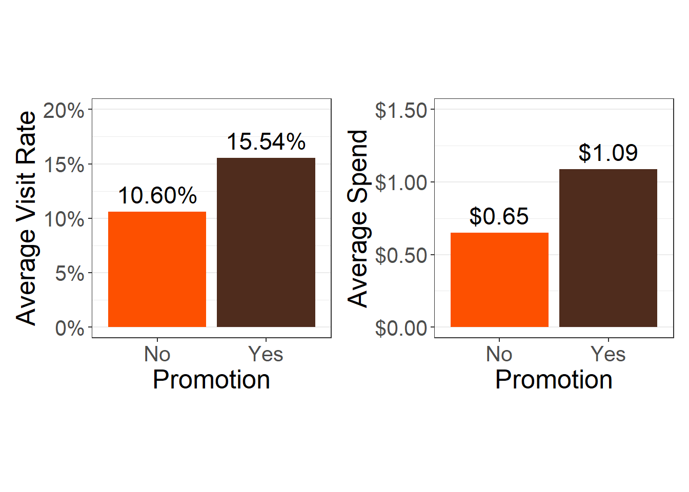</p>
</div>
<div id="controlling-for-heterogeneity" class="section level4 hasAnchor" number="7.7.4.2">
<h4><span class="header-section-number">7.7.4.2</span> Controlling for Heterogeneity<a href="ab-testing-and-uplift-modeling.html#controlling-for-heterogeneity" class="anchor-section" aria-label="Anchor link to header"></a></h4>
<p>Examine ATE with regression models</p>
<ul>
<li>For each outcome, model with and without controls
<ul>
<li>Models without control
<ul>
<li><span class="math inline">\(visit\)</span>
<ul>
<li>When not on promotion, y-intercept is <span class="math inline">\(0.106\)</span> (<span class="math inline">\(10.6\%\)</span> visited)</li>
<li>When on promotion, <span class="math inline">\(0.106+0.049=0.155\)</span> (<span class="math inline">\(15.5\%\)</span> visited)</li>
</ul></li>
<li><span class="math inline">\(spend\)</span>
<ul>
<li>When not on promotion, y-intercept is <span class="math inline">\(0.651\)</span> (<span class="math inline">\(\$0.65\)</span> spent)</li>
<li>When on promotion, <span class="math inline">\(0.651+0.436=1.087\)</span> (<span class="math inline">\(\$1.09\)</span> spent)</li>
</ul></li>
</ul></li>
<li>Models with controls for heterogeneity
<ul>
<li>For both <span class="math inline">\(visit\)</span> and <span class="math inline">\(spend\)</span>, the effect of promotion did not change much when controlling for heterogeneity</li>
</ul></li>
<li>NOTE: Even though <span class="math inline">\(visit\)</span> is a Yes/No variable, the average treatment effect was performed using linear regression.</li>
</ul></li>
</ul>
<p><strong>Although the treatment variable may or may not be significant, it should not affect whether or not uplift modeling should continue. Either way, uplift modeling can still identify those <em>most likely</em> to be affected (either positivey or negatively)</strong></p>
<details class=chunk-details><summary class=chunk-summary><span class=chunk-summary-text>Code</span></summary>
<div class="sourceCode" id="cb95"><pre class="sourceCode r"><code class="sourceCode r"><span id="cb95-1"><a href="ab-testing-and-uplift-modeling.html#cb95-1" tabindex="-1"></a><span class="co"># Create lm models</span></span>
<span id="cb95-2"><a href="ab-testing-and-uplift-modeling.html#cb95-2" tabindex="-1"></a>visit <span class="ot">&lt;-</span> <span class="fu">lm</span>(visit <span class="sc">~</span> promotion <span class="sc">+</span> recency <span class="sc">+</span> history <span class="sc">+</span> womens <span class="sc">+</span> newbie <span class="sc">+</span> zip <span class="sc">+</span> </span>
<span id="cb95-3"><a href="ab-testing-and-uplift-modeling.html#cb95-3" tabindex="-1"></a>                channel, <span class="at">data=</span>email.camp.w)</span>
<span id="cb95-4"><a href="ab-testing-and-uplift-modeling.html#cb95-4" tabindex="-1"></a>spend <span class="ot">&lt;-</span> <span class="fu">lm</span>(spend <span class="sc">~</span> promotion <span class="sc">+</span> recency <span class="sc">+</span> history <span class="sc">+</span> womens <span class="sc">+</span> newbie <span class="sc">+</span> zip <span class="sc">+</span> </span>
<span id="cb95-5"><a href="ab-testing-and-uplift-modeling.html#cb95-5" tabindex="-1"></a>                channel, <span class="at">data=</span>email.camp.w)</span>
<span id="cb95-6"><a href="ab-testing-and-uplift-modeling.html#cb95-6" tabindex="-1"></a><span class="fu">easy_ab_ate</span>(<span class="at">model =</span> visit, <span class="at">treatment =</span> <span class="st">&quot;promotion&quot;</span>)</span></code></pre></div>
</details>
<div class="tabwid"><style>.cl-af4277b2{}.cl-af3c3956{font-family:'Arial';font-size:14pt;font-weight:bold;font-style:normal;text-decoration:none;color:rgba(0, 0, 0, 1.00);background-color:transparent;}.cl-af3c3960{font-family:'Arial';font-size:11pt;font-weight:bold;font-style:normal;text-decoration:none;color:rgba(0, 0, 0, 1.00);background-color:transparent;}.cl-af3c396a{font-family:'Arial';font-size:12pt;font-weight:normal;font-style:normal;text-decoration:none;color:rgba(0, 0, 0, 1.00);background-color:transparent;}.cl-af3ec482{margin:0;text-align:left;border-bottom: 0 solid rgba(0, 0, 0, 1.00);border-top: 0 solid rgba(0, 0, 0, 1.00);border-left: 0 solid rgba(0, 0, 0, 1.00);border-right: 0 solid rgba(0, 0, 0, 1.00);padding-bottom:2pt;padding-top:2pt;padding-left:5pt;padding-right:5pt;line-height: 1;background-color:transparent;}.cl-af3ec48c{margin:0;text-align:center;border-bottom: 0 solid rgba(0, 0, 0, 1.00);border-top: 0 solid rgba(0, 0, 0, 1.00);border-left: 0 solid rgba(0, 0, 0, 1.00);border-right: 0 solid rgba(0, 0, 0, 1.00);padding-bottom:2pt;padding-top:2pt;padding-left:5pt;padding-right:5pt;line-height: 1;background-color:transparent;}.cl-af3ec48d{margin:0;text-align:left;border-bottom: 0 solid rgba(0, 0, 0, 1.00);border-top: 0 solid rgba(0, 0, 0, 1.00);border-left: 0 solid rgba(0, 0, 0, 1.00);border-right: 0 solid rgba(0, 0, 0, 1.00);padding-bottom:1pt;padding-top:1pt;padding-left:5pt;padding-right:5pt;line-height: 1;background-color:transparent;}.cl-af3ec48e{margin:0;text-align:center;border-bottom: 0 solid rgba(0, 0, 0, 1.00);border-top: 0 solid rgba(0, 0, 0, 1.00);border-left: 0 solid rgba(0, 0, 0, 1.00);border-right: 0 solid rgba(0, 0, 0, 1.00);padding-bottom:1pt;padding-top:1pt;padding-left:5pt;padding-right:5pt;line-height: 1;background-color:transparent;}.cl-af3ec496{margin:0;text-align:left;border-bottom: 0 solid rgba(0, 0, 0, 1.00);border-top: 0 solid rgba(0, 0, 0, 1.00);border-left: 0 solid rgba(0, 0, 0, 1.00);border-right: 0 solid rgba(0, 0, 0, 1.00);padding-bottom:1pt;padding-top:1pt;padding-left:15pt;padding-right:5pt;line-height: 1;background-color:transparent;}.cl-af3ee32c{width:1.328in;background-color:transparent;vertical-align: middle;border-bottom: 1pt solid rgba(0, 0, 0, 1.00);border-top: 1pt solid rgba(0, 0, 0, 1.00);border-left: 0 solid rgba(0, 0, 0, 1.00);border-right: 0 solid rgba(0, 0, 0, 1.00);margin-bottom:0;margin-top:0;margin-left:0;margin-right:0;}.cl-af3ee336{width:0.757in;background-color:transparent;vertical-align: middle;border-bottom: 1pt solid rgba(0, 0, 0, 1.00);border-top: 1pt solid rgba(0, 0, 0, 1.00);border-left: 0 solid rgba(0, 0, 0, 1.00);border-right: 0 solid rgba(0, 0, 0, 1.00);margin-bottom:0;margin-top:0;margin-left:0;margin-right:0;}.cl-af3ee337{width:0.82in;background-color:transparent;vertical-align: middle;border-bottom: 1pt solid rgba(0, 0, 0, 1.00);border-top: 1pt solid rgba(0, 0, 0, 1.00);border-left: 0 solid rgba(0, 0, 0, 1.00);border-right: 0 solid rgba(0, 0, 0, 1.00);margin-bottom:0;margin-top:0;margin-left:0;margin-right:0;}.cl-af3ee340{width:1.328in;background-color:transparent;vertical-align: middle;border-bottom: 1pt solid rgba(0, 0, 0, 1.00);border-top: 1pt solid rgba(0, 0, 0, 1.00);border-left: 0 solid rgba(0, 0, 0, 1.00);border-right: 0 solid rgba(0, 0, 0, 1.00);margin-bottom:0;margin-top:0;margin-left:0;margin-right:0;}.cl-af3ee341{width:0.757in;background-color:transparent;vertical-align: middle;border-bottom: 1pt solid rgba(0, 0, 0, 1.00);border-top: 1pt solid rgba(0, 0, 0, 1.00);border-left: 0 solid rgba(0, 0, 0, 1.00);border-right: 0 solid rgba(0, 0, 0, 1.00);margin-bottom:0;margin-top:0;margin-left:0;margin-right:0;}.cl-af3ee342{width:0.82in;background-color:transparent;vertical-align: middle;border-bottom: 1pt solid rgba(0, 0, 0, 1.00);border-top: 1pt solid rgba(0, 0, 0, 1.00);border-left: 0 solid rgba(0, 0, 0, 1.00);border-right: 0 solid rgba(0, 0, 0, 1.00);margin-bottom:0;margin-top:0;margin-left:0;margin-right:0;}.cl-af3ee343{width:1.328in;height:0.157in;background-color:transparent;vertical-align: top;border-bottom: 0 solid rgba(0, 0, 0, 1.00);border-top: 0 solid rgba(0, 0, 0, 1.00);border-left: 0 solid rgba(0, 0, 0, 1.00);border-right: 0 solid rgba(0, 0, 0, 1.00);margin-bottom:0;margin-top:0;margin-left:0;margin-right:0;}.cl-af3ee34a{width:0.757in;height:0.157in;background-color:transparent;vertical-align: top;border-bottom: 0 solid rgba(0, 0, 0, 1.00);border-top: 0 solid rgba(0, 0, 0, 1.00);border-left: 0 solid rgba(0, 0, 0, 1.00);border-right: 0 solid rgba(0, 0, 0, 1.00);margin-bottom:0;margin-top:0;margin-left:0;margin-right:0;}.cl-af3ee34b{width:0.82in;height:0.157in;background-color:transparent;vertical-align: top;border-bottom: 0 solid rgba(0, 0, 0, 1.00);border-top: 0 solid rgba(0, 0, 0, 1.00);border-left: 0 solid rgba(0, 0, 0, 1.00);border-right: 0 solid rgba(0, 0, 0, 1.00);margin-bottom:0;margin-top:0;margin-left:0;margin-right:0;}.cl-af3ee354{width:1.328in;height:0.157in;background-color:transparent;vertical-align: top;border-bottom: 0 solid rgba(0, 0, 0, 1.00);border-top: 1pt solid rgba(0, 0, 0, 1.00);border-left: 0 solid rgba(0, 0, 0, 1.00);border-right: 0 solid rgba(0, 0, 0, 1.00);margin-bottom:0;margin-top:0;margin-left:0;margin-right:0;}.cl-af3ee355{width:0.757in;height:0.157in;background-color:transparent;vertical-align: top;border-bottom: 0 solid rgba(0, 0, 0, 1.00);border-top: 1pt solid rgba(0, 0, 0, 1.00);border-left: 0 solid rgba(0, 0, 0, 1.00);border-right: 0 solid rgba(0, 0, 0, 1.00);margin-bottom:0;margin-top:0;margin-left:0;margin-right:0;}.cl-af3ee35e{width:0.82in;height:0.157in;background-color:transparent;vertical-align: top;border-bottom: 0 solid rgba(0, 0, 0, 1.00);border-top: 1pt solid rgba(0, 0, 0, 1.00);border-left: 0 solid rgba(0, 0, 0, 1.00);border-right: 0 solid rgba(0, 0, 0, 1.00);margin-bottom:0;margin-top:0;margin-left:0;margin-right:0;}.cl-af3ee35f{width:1.328in;height:0.157in;background-color:transparent;vertical-align: top;border-bottom: 1pt solid rgba(0, 0, 0, 1.00);border-top: 0 solid rgba(0, 0, 0, 1.00);border-left: 0 solid rgba(0, 0, 0, 1.00);border-right: 0 solid rgba(0, 0, 0, 1.00);margin-bottom:0;margin-top:0;margin-left:0;margin-right:0;}.cl-af3ee360{width:0.757in;height:0.157in;background-color:transparent;vertical-align: top;border-bottom: 1pt solid rgba(0, 0, 0, 1.00);border-top: 0 solid rgba(0, 0, 0, 1.00);border-left: 0 solid rgba(0, 0, 0, 1.00);border-right: 0 solid rgba(0, 0, 0, 1.00);margin-bottom:0;margin-top:0;margin-left:0;margin-right:0;}.cl-af3ee368{width:0.82in;height:0.157in;background-color:transparent;vertical-align: top;border-bottom: 1pt solid rgba(0, 0, 0, 1.00);border-top: 0 solid rgba(0, 0, 0, 1.00);border-left: 0 solid rgba(0, 0, 0, 1.00);border-right: 0 solid rgba(0, 0, 0, 1.00);margin-bottom:0;margin-top:0;margin-left:0;margin-right:0;}</style><table data-quarto-disable-processing='true' class='cl-af4277b2'><thead><tr style="overflow-wrap:break-word;"><th class="cl-af3ee32c"><p class="cl-af3ec482"><span class="cl-af3c3956"> </span></p></th><th  colspan="2"class="cl-af3ee336"><p class="cl-af3ec48c"><span class="cl-af3c3956">Without</span><br><span class="cl-af3c3956">Covariates</span></p></th><th  colspan="2"class="cl-af3ee336"><p class="cl-af3ec48c"><span class="cl-af3c3956">With</span><br><span class="cl-af3c3956">Covariates</span></p></th></tr><tr style="overflow-wrap:break-word;"><th class="cl-af3ee340"><p class="cl-af3ec482"><span class="cl-af3c3960">Characteristic</span></p></th><th class="cl-af3ee341"><p class="cl-af3ec48c"><span class="cl-af3c3960">Beta</span></p></th><th class="cl-af3ee342"><p class="cl-af3ec48c"><span class="cl-af3c3960">p-value</span></p></th><th class="cl-af3ee341"><p class="cl-af3ec48c"><span class="cl-af3c3960">Beta</span></p></th><th class="cl-af3ee342"><p class="cl-af3ec48c"><span class="cl-af3c3960">p-value</span></p></th></tr></thead><tbody><tr><td class="cl-af3ee343"><p class="cl-af3ec48d"><span class="cl-af3c396a">(Intercept)</span></p></td><td class="cl-af3ee34a"><p class="cl-af3ec48e"><span class="cl-af3c396a">0.106</span></p></td><td class="cl-af3ee34b"><p class="cl-af3ec48e"><span class="cl-af3c396a">&lt;0.001</span></p></td><td class="cl-af3ee34a"><p class="cl-af3ec48e"><span class="cl-af3c396a">0.181</span></p></td><td class="cl-af3ee34b"><p class="cl-af3ec48e"><span class="cl-af3c396a">&lt;0.001</span></p></td></tr><tr><td class="cl-af3ee343"><p class="cl-af3ec48d"><span class="cl-af3c396a">promotion</span></p></td><td class="cl-af3ee34a"><p class="cl-af3ec48e"><span class="cl-af3c396a">0.049</span></p></td><td class="cl-af3ee34b"><p class="cl-af3ec48e"><span class="cl-af3c396a">&lt;0.001</span></p></td><td class="cl-af3ee34a"><p class="cl-af3ec48e"><span class="cl-af3c396a">0.050</span></p></td><td class="cl-af3ee34b"><p class="cl-af3ec48e"><span class="cl-af3c396a">&lt;0.001</span></p></td></tr><tr><td class="cl-af3ee343"><p class="cl-af3ec48d"><span class="cl-af3c396a">recency</span></p></td><td class="cl-af3ee34a"><p class="cl-af3ec48e"><span class="cl-af3c396a"></span></p></td><td class="cl-af3ee34b"><p class="cl-af3ec48e"><span class="cl-af3c396a"></span></p></td><td class="cl-af3ee34a"><p class="cl-af3ec48e"><span class="cl-af3c396a">-0.006</span></p></td><td class="cl-af3ee34b"><p class="cl-af3ec48e"><span class="cl-af3c396a">&lt;0.001</span></p></td></tr><tr><td class="cl-af3ee343"><p class="cl-af3ec48d"><span class="cl-af3c396a">history</span></p></td><td class="cl-af3ee34a"><p class="cl-af3ec48e"><span class="cl-af3c396a"></span></p></td><td class="cl-af3ee34b"><p class="cl-af3ec48e"><span class="cl-af3c396a"></span></p></td><td class="cl-af3ee34a"><p class="cl-af3ec48e"><span class="cl-af3c396a">0.000</span></p></td><td class="cl-af3ee34b"><p class="cl-af3ec48e"><span class="cl-af3c396a">&lt;0.001</span></p></td></tr><tr><td class="cl-af3ee343"><p class="cl-af3ec48d"><span class="cl-af3c396a">womens</span></p></td><td class="cl-af3ee34a"><p class="cl-af3ec48e"><span class="cl-af3c396a"></span></p></td><td class="cl-af3ee34b"><p class="cl-af3ec48e"><span class="cl-af3c396a"></span></p></td><td class="cl-af3ee34a"><p class="cl-af3ec48e"><span class="cl-af3c396a">0.045</span></p></td><td class="cl-af3ee34b"><p class="cl-af3ec48e"><span class="cl-af3c396a">&lt;0.001</span></p></td></tr><tr><td class="cl-af3ee343"><p class="cl-af3ec48d"><span class="cl-af3c396a">newbie</span></p></td><td class="cl-af3ee34a"><p class="cl-af3ec48e"><span class="cl-af3c396a"></span></p></td><td class="cl-af3ee34b"><p class="cl-af3ec48e"><span class="cl-af3c396a"></span></p></td><td class="cl-af3ee34a"><p class="cl-af3ec48e"><span class="cl-af3c396a">-0.053</span></p></td><td class="cl-af3ee34b"><p class="cl-af3ec48e"><span class="cl-af3c396a">&lt;0.001</span></p></td></tr><tr><td class="cl-af3ee343"><p class="cl-af3ec48d"><span class="cl-af3c396a">zip</span></p></td><td class="cl-af3ee34a"><p class="cl-af3ec48e"><span class="cl-af3c396a"></span></p></td><td class="cl-af3ee34b"><p class="cl-af3ec48e"><span class="cl-af3c396a"></span></p></td><td class="cl-af3ee34a"><p class="cl-af3ec48e"><span class="cl-af3c396a"></span></p></td><td class="cl-af3ee34b"><p class="cl-af3ec48e"><span class="cl-af3c396a"></span></p></td></tr><tr><td class="cl-af3ee343"><p class="cl-af3ec496"><span class="cl-af3c396a">Rural</span></p></td><td class="cl-af3ee34a"><p class="cl-af3ec48e"><span class="cl-af3c396a"></span></p></td><td class="cl-af3ee34b"><p class="cl-af3ec48e"><span class="cl-af3c396a"></span></p></td><td class="cl-af3ee34a"><p class="cl-af3ec48e"><span class="cl-af3c396a">—</span></p></td><td class="cl-af3ee34b"><p class="cl-af3ec48e"><span class="cl-af3c396a"></span></p></td></tr><tr><td class="cl-af3ee343"><p class="cl-af3ec496"><span class="cl-af3c396a">Surburban</span></p></td><td class="cl-af3ee34a"><p class="cl-af3ec48e"><span class="cl-af3c396a"></span></p></td><td class="cl-af3ee34b"><p class="cl-af3ec48e"><span class="cl-af3c396a"></span></p></td><td class="cl-af3ee34a"><p class="cl-af3ec48e"><span class="cl-af3c396a">-0.054</span></p></td><td class="cl-af3ee34b"><p class="cl-af3ec48e"><span class="cl-af3c396a">&lt;0.001</span></p></td></tr><tr><td class="cl-af3ee343"><p class="cl-af3ec496"><span class="cl-af3c396a">Urban</span></p></td><td class="cl-af3ee34a"><p class="cl-af3ec48e"><span class="cl-af3c396a"></span></p></td><td class="cl-af3ee34b"><p class="cl-af3ec48e"><span class="cl-af3c396a"></span></p></td><td class="cl-af3ee34a"><p class="cl-af3ec48e"><span class="cl-af3c396a">-0.065</span></p></td><td class="cl-af3ee34b"><p class="cl-af3ec48e"><span class="cl-af3c396a">&lt;0.001</span></p></td></tr><tr><td class="cl-af3ee343"><p class="cl-af3ec48d"><span class="cl-af3c396a">channel</span></p></td><td class="cl-af3ee34a"><p class="cl-af3ec48e"><span class="cl-af3c396a"></span></p></td><td class="cl-af3ee34b"><p class="cl-af3ec48e"><span class="cl-af3c396a"></span></p></td><td class="cl-af3ee34a"><p class="cl-af3ec48e"><span class="cl-af3c396a"></span></p></td><td class="cl-af3ee34b"><p class="cl-af3ec48e"><span class="cl-af3c396a"></span></p></td></tr><tr><td class="cl-af3ee343"><p class="cl-af3ec496"><span class="cl-af3c396a">Multichannel</span></p></td><td class="cl-af3ee34a"><p class="cl-af3ec48e"><span class="cl-af3c396a"></span></p></td><td class="cl-af3ee34b"><p class="cl-af3ec48e"><span class="cl-af3c396a"></span></p></td><td class="cl-af3ee34a"><p class="cl-af3ec48e"><span class="cl-af3c396a">—</span></p></td><td class="cl-af3ee34b"><p class="cl-af3ec48e"><span class="cl-af3c396a"></span></p></td></tr><tr><td class="cl-af3ee343"><p class="cl-af3ec496"><span class="cl-af3c396a">Phone</span></p></td><td class="cl-af3ee34a"><p class="cl-af3ec48e"><span class="cl-af3c396a"></span></p></td><td class="cl-af3ee34b"><p class="cl-af3ec48e"><span class="cl-af3c396a"></span></p></td><td class="cl-af3ee34a"><p class="cl-af3ec48e"><span class="cl-af3c396a">-0.026</span></p></td><td class="cl-af3ee34b"><p class="cl-af3ec48e"><span class="cl-af3c396a">0.024</span></p></td></tr><tr><td class="cl-af3ee343"><p class="cl-af3ec496"><span class="cl-af3c396a">Web</span></p></td><td class="cl-af3ee34a"><p class="cl-af3ec48e"><span class="cl-af3c396a"></span></p></td><td class="cl-af3ee34b"><p class="cl-af3ec48e"><span class="cl-af3c396a"></span></p></td><td class="cl-af3ee34a"><p class="cl-af3ec48e"><span class="cl-af3c396a">0.009</span></p></td><td class="cl-af3ee34b"><p class="cl-af3ec48e"><span class="cl-af3c396a">0.448</span></p></td></tr><tr><td class="cl-af3ee354"><p class="cl-af3ec48d"><span class="cl-af3c396a">p-value</span></p></td><td class="cl-af3ee355"><p class="cl-af3ec48e"><span class="cl-af3c396a">&lt;0.001</span></p></td><td class="cl-af3ee35e"><p class="cl-af3ec48e"><span class="cl-af3c396a"></span></p></td><td class="cl-af3ee355"><p class="cl-af3ec48e"><span class="cl-af3c396a">&lt;0.001</span></p></td><td class="cl-af3ee35e"><p class="cl-af3ec48e"><span class="cl-af3c396a"></span></p></td></tr><tr><td class="cl-af3ee35f"><p class="cl-af3ec48d"><span class="cl-af3c396a">R²</span></p></td><td class="cl-af3ee360"><p class="cl-af3ec48e"><span class="cl-af3c396a">0.005</span></p></td><td class="cl-af3ee368"><p class="cl-af3ec48e"><span class="cl-af3c396a"></span></p></td><td class="cl-af3ee360"><p class="cl-af3ec48e"><span class="cl-af3c396a">0.032</span></p></td><td class="cl-af3ee368"><p class="cl-af3ec48e"><span class="cl-af3c396a"></span></p></td></tr></tbody></table></div>
<details class=chunk-details><summary class=chunk-summary><span class=chunk-summary-text>Code</span></summary>
<div class="sourceCode" id="cb96"><pre class="sourceCode r"><code class="sourceCode r"><span id="cb96-1"><a href="ab-testing-and-uplift-modeling.html#cb96-1" tabindex="-1"></a><span class="fu">easy_ab_ate</span>(<span class="at">model =</span> spend, <span class="at">treatment =</span> <span class="st">&quot;promotion&quot;</span>)</span></code></pre></div>
</details>
<div class="tabwid"><style>.cl-b0258e44{}.cl-b01eefda{font-family:'Arial';font-size:14pt;font-weight:bold;font-style:normal;text-decoration:none;color:rgba(0, 0, 0, 1.00);background-color:transparent;}.cl-b01eefe4{font-family:'Arial';font-size:11pt;font-weight:bold;font-style:normal;text-decoration:none;color:rgba(0, 0, 0, 1.00);background-color:transparent;}.cl-b01eefe5{font-family:'Arial';font-size:12pt;font-weight:normal;font-style:normal;text-decoration:none;color:rgba(0, 0, 0, 1.00);background-color:transparent;}.cl-b0218a42{margin:0;text-align:left;border-bottom: 0 solid rgba(0, 0, 0, 1.00);border-top: 0 solid rgba(0, 0, 0, 1.00);border-left: 0 solid rgba(0, 0, 0, 1.00);border-right: 0 solid rgba(0, 0, 0, 1.00);padding-bottom:2pt;padding-top:2pt;padding-left:5pt;padding-right:5pt;line-height: 1;background-color:transparent;}.cl-b0218a4c{margin:0;text-align:center;border-bottom: 0 solid rgba(0, 0, 0, 1.00);border-top: 0 solid rgba(0, 0, 0, 1.00);border-left: 0 solid rgba(0, 0, 0, 1.00);border-right: 0 solid rgba(0, 0, 0, 1.00);padding-bottom:2pt;padding-top:2pt;padding-left:5pt;padding-right:5pt;line-height: 1;background-color:transparent;}.cl-b0218a56{margin:0;text-align:left;border-bottom: 0 solid rgba(0, 0, 0, 1.00);border-top: 0 solid rgba(0, 0, 0, 1.00);border-left: 0 solid rgba(0, 0, 0, 1.00);border-right: 0 solid rgba(0, 0, 0, 1.00);padding-bottom:1pt;padding-top:1pt;padding-left:5pt;padding-right:5pt;line-height: 1;background-color:transparent;}.cl-b0218a60{margin:0;text-align:center;border-bottom: 0 solid rgba(0, 0, 0, 1.00);border-top: 0 solid rgba(0, 0, 0, 1.00);border-left: 0 solid rgba(0, 0, 0, 1.00);border-right: 0 solid rgba(0, 0, 0, 1.00);padding-bottom:1pt;padding-top:1pt;padding-left:5pt;padding-right:5pt;line-height: 1;background-color:transparent;}.cl-b0218a61{margin:0;text-align:left;border-bottom: 0 solid rgba(0, 0, 0, 1.00);border-top: 0 solid rgba(0, 0, 0, 1.00);border-left: 0 solid rgba(0, 0, 0, 1.00);border-right: 0 solid rgba(0, 0, 0, 1.00);padding-bottom:1pt;padding-top:1pt;padding-left:15pt;padding-right:5pt;line-height: 1;background-color:transparent;}.cl-b021a8b0{width:1.328in;background-color:transparent;vertical-align: middle;border-bottom: 1pt solid rgba(0, 0, 0, 1.00);border-top: 1pt solid rgba(0, 0, 0, 1.00);border-left: 0 solid rgba(0, 0, 0, 1.00);border-right: 0 solid rgba(0, 0, 0, 1.00);margin-bottom:0;margin-top:0;margin-left:0;margin-right:0;}.cl-b021a8ba{width:0.668in;background-color:transparent;vertical-align: middle;border-bottom: 1pt solid rgba(0, 0, 0, 1.00);border-top: 1pt solid rgba(0, 0, 0, 1.00);border-left: 0 solid rgba(0, 0, 0, 1.00);border-right: 0 solid rgba(0, 0, 0, 1.00);margin-bottom:0;margin-top:0;margin-left:0;margin-right:0;}.cl-b021a8bb{width:0.82in;background-color:transparent;vertical-align: middle;border-bottom: 1pt solid rgba(0, 0, 0, 1.00);border-top: 1pt solid rgba(0, 0, 0, 1.00);border-left: 0 solid rgba(0, 0, 0, 1.00);border-right: 0 solid rgba(0, 0, 0, 1.00);margin-bottom:0;margin-top:0;margin-left:0;margin-right:0;}.cl-b021a8c4{width:0.718in;background-color:transparent;vertical-align: middle;border-bottom: 1pt solid rgba(0, 0, 0, 1.00);border-top: 1pt solid rgba(0, 0, 0, 1.00);border-left: 0 solid rgba(0, 0, 0, 1.00);border-right: 0 solid rgba(0, 0, 0, 1.00);margin-bottom:0;margin-top:0;margin-left:0;margin-right:0;}.cl-b021a8c5{width:1.328in;background-color:transparent;vertical-align: middle;border-bottom: 1pt solid rgba(0, 0, 0, 1.00);border-top: 1pt solid rgba(0, 0, 0, 1.00);border-left: 0 solid rgba(0, 0, 0, 1.00);border-right: 0 solid rgba(0, 0, 0, 1.00);margin-bottom:0;margin-top:0;margin-left:0;margin-right:0;}.cl-b021a8c6{width:0.668in;background-color:transparent;vertical-align: middle;border-bottom: 1pt solid rgba(0, 0, 0, 1.00);border-top: 1pt solid rgba(0, 0, 0, 1.00);border-left: 0 solid rgba(0, 0, 0, 1.00);border-right: 0 solid rgba(0, 0, 0, 1.00);margin-bottom:0;margin-top:0;margin-left:0;margin-right:0;}.cl-b021a8c7{width:0.82in;background-color:transparent;vertical-align: middle;border-bottom: 1pt solid rgba(0, 0, 0, 1.00);border-top: 1pt solid rgba(0, 0, 0, 1.00);border-left: 0 solid rgba(0, 0, 0, 1.00);border-right: 0 solid rgba(0, 0, 0, 1.00);margin-bottom:0;margin-top:0;margin-left:0;margin-right:0;}.cl-b021a8ce{width:0.718in;background-color:transparent;vertical-align: middle;border-bottom: 1pt solid rgba(0, 0, 0, 1.00);border-top: 1pt solid rgba(0, 0, 0, 1.00);border-left: 0 solid rgba(0, 0, 0, 1.00);border-right: 0 solid rgba(0, 0, 0, 1.00);margin-bottom:0;margin-top:0;margin-left:0;margin-right:0;}.cl-b021a8cf{width:1.328in;height:0.157in;background-color:transparent;vertical-align: top;border-bottom: 0 solid rgba(0, 0, 0, 1.00);border-top: 0 solid rgba(0, 0, 0, 1.00);border-left: 0 solid rgba(0, 0, 0, 1.00);border-right: 0 solid rgba(0, 0, 0, 1.00);margin-bottom:0;margin-top:0;margin-left:0;margin-right:0;}.cl-b021a8d8{width:0.668in;height:0.157in;background-color:transparent;vertical-align: top;border-bottom: 0 solid rgba(0, 0, 0, 1.00);border-top: 0 solid rgba(0, 0, 0, 1.00);border-left: 0 solid rgba(0, 0, 0, 1.00);border-right: 0 solid rgba(0, 0, 0, 1.00);margin-bottom:0;margin-top:0;margin-left:0;margin-right:0;}.cl-b021a8d9{width:0.82in;height:0.157in;background-color:transparent;vertical-align: top;border-bottom: 0 solid rgba(0, 0, 0, 1.00);border-top: 0 solid rgba(0, 0, 0, 1.00);border-left: 0 solid rgba(0, 0, 0, 1.00);border-right: 0 solid rgba(0, 0, 0, 1.00);margin-bottom:0;margin-top:0;margin-left:0;margin-right:0;}.cl-b021a8da{width:0.718in;height:0.157in;background-color:transparent;vertical-align: top;border-bottom: 0 solid rgba(0, 0, 0, 1.00);border-top: 0 solid rgba(0, 0, 0, 1.00);border-left: 0 solid rgba(0, 0, 0, 1.00);border-right: 0 solid rgba(0, 0, 0, 1.00);margin-bottom:0;margin-top:0;margin-left:0;margin-right:0;}.cl-b021a8e2{width:1.328in;height:0.157in;background-color:transparent;vertical-align: top;border-bottom: 0 solid rgba(0, 0, 0, 1.00);border-top: 1pt solid rgba(0, 0, 0, 1.00);border-left: 0 solid rgba(0, 0, 0, 1.00);border-right: 0 solid rgba(0, 0, 0, 1.00);margin-bottom:0;margin-top:0;margin-left:0;margin-right:0;}.cl-b021a8e3{width:0.668in;height:0.157in;background-color:transparent;vertical-align: top;border-bottom: 0 solid rgba(0, 0, 0, 1.00);border-top: 1pt solid rgba(0, 0, 0, 1.00);border-left: 0 solid rgba(0, 0, 0, 1.00);border-right: 0 solid rgba(0, 0, 0, 1.00);margin-bottom:0;margin-top:0;margin-left:0;margin-right:0;}.cl-b021a8ec{width:0.82in;height:0.157in;background-color:transparent;vertical-align: top;border-bottom: 0 solid rgba(0, 0, 0, 1.00);border-top: 1pt solid rgba(0, 0, 0, 1.00);border-left: 0 solid rgba(0, 0, 0, 1.00);border-right: 0 solid rgba(0, 0, 0, 1.00);margin-bottom:0;margin-top:0;margin-left:0;margin-right:0;}.cl-b021a8ed{width:0.718in;height:0.157in;background-color:transparent;vertical-align: top;border-bottom: 0 solid rgba(0, 0, 0, 1.00);border-top: 1pt solid rgba(0, 0, 0, 1.00);border-left: 0 solid rgba(0, 0, 0, 1.00);border-right: 0 solid rgba(0, 0, 0, 1.00);margin-bottom:0;margin-top:0;margin-left:0;margin-right:0;}.cl-b021a8f6{width:1.328in;height:0.157in;background-color:transparent;vertical-align: top;border-bottom: 1pt solid rgba(0, 0, 0, 1.00);border-top: 0 solid rgba(0, 0, 0, 1.00);border-left: 0 solid rgba(0, 0, 0, 1.00);border-right: 0 solid rgba(0, 0, 0, 1.00);margin-bottom:0;margin-top:0;margin-left:0;margin-right:0;}.cl-b021a8f7{width:0.668in;height:0.157in;background-color:transparent;vertical-align: top;border-bottom: 1pt solid rgba(0, 0, 0, 1.00);border-top: 0 solid rgba(0, 0, 0, 1.00);border-left: 0 solid rgba(0, 0, 0, 1.00);border-right: 0 solid rgba(0, 0, 0, 1.00);margin-bottom:0;margin-top:0;margin-left:0;margin-right:0;}.cl-b021a900{width:0.82in;height:0.157in;background-color:transparent;vertical-align: top;border-bottom: 1pt solid rgba(0, 0, 0, 1.00);border-top: 0 solid rgba(0, 0, 0, 1.00);border-left: 0 solid rgba(0, 0, 0, 1.00);border-right: 0 solid rgba(0, 0, 0, 1.00);margin-bottom:0;margin-top:0;margin-left:0;margin-right:0;}.cl-b021a901{width:0.718in;height:0.157in;background-color:transparent;vertical-align: top;border-bottom: 1pt solid rgba(0, 0, 0, 1.00);border-top: 0 solid rgba(0, 0, 0, 1.00);border-left: 0 solid rgba(0, 0, 0, 1.00);border-right: 0 solid rgba(0, 0, 0, 1.00);margin-bottom:0;margin-top:0;margin-left:0;margin-right:0;}</style><table data-quarto-disable-processing='true' class='cl-b0258e44'><thead><tr style="overflow-wrap:break-word;"><th class="cl-b021a8b0"><p class="cl-b0218a42"><span class="cl-b01eefda"> </span></p></th><th  colspan="2"class="cl-b021a8ba"><p class="cl-b0218a4c"><span class="cl-b01eefda">Without</span><br><span class="cl-b01eefda">Covariates</span></p></th><th  colspan="2"class="cl-b021a8c4"><p class="cl-b0218a4c"><span class="cl-b01eefda">With</span><br><span class="cl-b01eefda">Covariates</span></p></th></tr><tr style="overflow-wrap:break-word;"><th class="cl-b021a8c5"><p class="cl-b0218a42"><span class="cl-b01eefe4">Characteristic</span></p></th><th class="cl-b021a8c6"><p class="cl-b0218a4c"><span class="cl-b01eefe4">Beta</span></p></th><th class="cl-b021a8c7"><p class="cl-b0218a4c"><span class="cl-b01eefe4">p-value</span></p></th><th class="cl-b021a8ce"><p class="cl-b0218a4c"><span class="cl-b01eefe4">Beta</span></p></th><th class="cl-b021a8c7"><p class="cl-b0218a4c"><span class="cl-b01eefe4">p-value</span></p></th></tr></thead><tbody><tr><td class="cl-b021a8cf"><p class="cl-b0218a56"><span class="cl-b01eefe5">(Intercept)</span></p></td><td class="cl-b021a8d8"><p class="cl-b0218a60"><span class="cl-b01eefe5">0.651</span></p></td><td class="cl-b021a8d9"><p class="cl-b0218a60"><span class="cl-b01eefe5">&lt;0.001</span></p></td><td class="cl-b021a8da"><p class="cl-b0218a60"><span class="cl-b01eefe5">1.298</span></p></td><td class="cl-b021a8d9"><p class="cl-b0218a60"><span class="cl-b01eefe5">0.057</span></p></td></tr><tr><td class="cl-b021a8cf"><p class="cl-b0218a56"><span class="cl-b01eefe5">promotion</span></p></td><td class="cl-b021a8d8"><p class="cl-b0218a60"><span class="cl-b01eefe5">0.436</span></p></td><td class="cl-b021a8d9"><p class="cl-b0218a60"><span class="cl-b01eefe5">0.108</span></p></td><td class="cl-b021a8da"><p class="cl-b0218a60"><span class="cl-b01eefe5">0.452</span></p></td><td class="cl-b021a8d9"><p class="cl-b0218a60"><span class="cl-b01eefe5">0.095</span></p></td></tr><tr><td class="cl-b021a8cf"><p class="cl-b0218a56"><span class="cl-b01eefe5">recency</span></p></td><td class="cl-b021a8d8"><p class="cl-b0218a60"><span class="cl-b01eefe5"></span></p></td><td class="cl-b021a8d9"><p class="cl-b0218a60"><span class="cl-b01eefe5"></span></p></td><td class="cl-b021a8da"><p class="cl-b0218a60"><span class="cl-b01eefe5">-0.082</span></p></td><td class="cl-b021a8d9"><p class="cl-b0218a60"><span class="cl-b01eefe5">0.041</span></p></td></tr><tr><td class="cl-b021a8cf"><p class="cl-b0218a56"><span class="cl-b01eefe5">history</span></p></td><td class="cl-b021a8d8"><p class="cl-b0218a60"><span class="cl-b01eefe5"></span></p></td><td class="cl-b021a8d9"><p class="cl-b0218a60"><span class="cl-b01eefe5"></span></p></td><td class="cl-b021a8da"><p class="cl-b0218a60"><span class="cl-b01eefe5">0.001</span></p></td><td class="cl-b021a8d9"><p class="cl-b0218a60"><span class="cl-b01eefe5">0.329</span></p></td></tr><tr><td class="cl-b021a8cf"><p class="cl-b0218a56"><span class="cl-b01eefe5">womens</span></p></td><td class="cl-b021a8d8"><p class="cl-b0218a60"><span class="cl-b01eefe5"></span></p></td><td class="cl-b021a8d9"><p class="cl-b0218a60"><span class="cl-b01eefe5"></span></p></td><td class="cl-b021a8da"><p class="cl-b0218a60"><span class="cl-b01eefe5">0.047</span></p></td><td class="cl-b021a8d9"><p class="cl-b0218a60"><span class="cl-b01eefe5">0.864</span></p></td></tr><tr><td class="cl-b021a8cf"><p class="cl-b0218a56"><span class="cl-b01eefe5">newbie</span></p></td><td class="cl-b021a8d8"><p class="cl-b0218a60"><span class="cl-b01eefe5"></span></p></td><td class="cl-b021a8d9"><p class="cl-b0218a60"><span class="cl-b01eefe5"></span></p></td><td class="cl-b021a8da"><p class="cl-b0218a60"><span class="cl-b01eefe5">-0.629</span></p></td><td class="cl-b021a8d9"><p class="cl-b0218a60"><span class="cl-b01eefe5">0.024</span></p></td></tr><tr><td class="cl-b021a8cf"><p class="cl-b0218a56"><span class="cl-b01eefe5">zip</span></p></td><td class="cl-b021a8d8"><p class="cl-b0218a60"><span class="cl-b01eefe5"></span></p></td><td class="cl-b021a8d9"><p class="cl-b0218a60"><span class="cl-b01eefe5"></span></p></td><td class="cl-b021a8da"><p class="cl-b0218a60"><span class="cl-b01eefe5"></span></p></td><td class="cl-b021a8d9"><p class="cl-b0218a60"><span class="cl-b01eefe5"></span></p></td></tr><tr><td class="cl-b021a8cf"><p class="cl-b0218a61"><span class="cl-b01eefe5">Rural</span></p></td><td class="cl-b021a8d8"><p class="cl-b0218a60"><span class="cl-b01eefe5"></span></p></td><td class="cl-b021a8d9"><p class="cl-b0218a60"><span class="cl-b01eefe5"></span></p></td><td class="cl-b021a8da"><p class="cl-b0218a60"><span class="cl-b01eefe5">—</span></p></td><td class="cl-b021a8d9"><p class="cl-b0218a60"><span class="cl-b01eefe5"></span></p></td></tr><tr><td class="cl-b021a8cf"><p class="cl-b0218a61"><span class="cl-b01eefe5">Surburban</span></p></td><td class="cl-b021a8d8"><p class="cl-b0218a60"><span class="cl-b01eefe5"></span></p></td><td class="cl-b021a8d9"><p class="cl-b0218a60"><span class="cl-b01eefe5"></span></p></td><td class="cl-b021a8da"><p class="cl-b0218a60"><span class="cl-b01eefe5">-0.596</span></p></td><td class="cl-b021a8d9"><p class="cl-b0218a60"><span class="cl-b01eefe5">0.144</span></p></td></tr><tr><td class="cl-b021a8cf"><p class="cl-b0218a61"><span class="cl-b01eefe5">Urban</span></p></td><td class="cl-b021a8d8"><p class="cl-b0218a60"><span class="cl-b01eefe5"></span></p></td><td class="cl-b021a8d9"><p class="cl-b0218a60"><span class="cl-b01eefe5"></span></p></td><td class="cl-b021a8da"><p class="cl-b0218a60"><span class="cl-b01eefe5">0.100</span></p></td><td class="cl-b021a8d9"><p class="cl-b0218a60"><span class="cl-b01eefe5">0.810</span></p></td></tr><tr><td class="cl-b021a8cf"><p class="cl-b0218a56"><span class="cl-b01eefe5">channel</span></p></td><td class="cl-b021a8d8"><p class="cl-b0218a60"><span class="cl-b01eefe5"></span></p></td><td class="cl-b021a8d9"><p class="cl-b0218a60"><span class="cl-b01eefe5"></span></p></td><td class="cl-b021a8da"><p class="cl-b0218a60"><span class="cl-b01eefe5"></span></p></td><td class="cl-b021a8d9"><p class="cl-b0218a60"><span class="cl-b01eefe5"></span></p></td></tr><tr><td class="cl-b021a8cf"><p class="cl-b0218a61"><span class="cl-b01eefe5">Multichannel</span></p></td><td class="cl-b021a8d8"><p class="cl-b0218a60"><span class="cl-b01eefe5"></span></p></td><td class="cl-b021a8d9"><p class="cl-b0218a60"><span class="cl-b01eefe5"></span></p></td><td class="cl-b021a8da"><p class="cl-b0218a60"><span class="cl-b01eefe5">—</span></p></td><td class="cl-b021a8d9"><p class="cl-b0218a60"><span class="cl-b01eefe5"></span></p></td></tr><tr><td class="cl-b021a8cf"><p class="cl-b0218a61"><span class="cl-b01eefe5">Phone</span></p></td><td class="cl-b021a8d8"><p class="cl-b0218a60"><span class="cl-b01eefe5"></span></p></td><td class="cl-b021a8d9"><p class="cl-b0218a60"><span class="cl-b01eefe5"></span></p></td><td class="cl-b021a8da"><p class="cl-b0218a60"><span class="cl-b01eefe5">0.343</span></p></td><td class="cl-b021a8d9"><p class="cl-b0218a60"><span class="cl-b01eefe5">0.472</span></p></td></tr><tr><td class="cl-b021a8cf"><p class="cl-b0218a61"><span class="cl-b01eefe5">Web</span></p></td><td class="cl-b021a8d8"><p class="cl-b0218a60"><span class="cl-b01eefe5"></span></p></td><td class="cl-b021a8d9"><p class="cl-b0218a60"><span class="cl-b01eefe5"></span></p></td><td class="cl-b021a8da"><p class="cl-b0218a60"><span class="cl-b01eefe5">0.078</span></p></td><td class="cl-b021a8d9"><p class="cl-b0218a60"><span class="cl-b01eefe5">0.870</span></p></td></tr><tr><td class="cl-b021a8e2"><p class="cl-b0218a56"><span class="cl-b01eefe5">p-value</span></p></td><td class="cl-b021a8e3"><p class="cl-b0218a60"><span class="cl-b01eefe5">0.11</span></p></td><td class="cl-b021a8ec"><p class="cl-b0218a60"><span class="cl-b01eefe5"></span></p></td><td class="cl-b021a8ed"><p class="cl-b0218a60"><span class="cl-b01eefe5">0.019</span></p></td><td class="cl-b021a8ec"><p class="cl-b0218a60"><span class="cl-b01eefe5"></span></p></td></tr><tr><td class="cl-b021a8f6"><p class="cl-b0218a56"><span class="cl-b01eefe5">R²</span></p></td><td class="cl-b021a8f7"><p class="cl-b0218a60"><span class="cl-b01eefe5">0.000</span></p></td><td class="cl-b021a900"><p class="cl-b0218a60"><span class="cl-b01eefe5"></span></p></td><td class="cl-b021a901"><p class="cl-b0218a60"><span class="cl-b01eefe5">0.002</span></p></td><td class="cl-b021a900"><p class="cl-b0218a60"><span class="cl-b01eefe5"></span></p></td></tr></tbody></table></div>
</div>
</div>
<div id="perform-uplift-modeling-1" class="section level3 hasAnchor" number="7.7.5">
<h3><span class="header-section-number">7.7.5</span> Perform Uplift Modeling<a href="ab-testing-and-uplift-modeling.html#perform-uplift-modeling-1" class="anchor-section" aria-label="Anchor link to header"></a></h3>
<p>Run the uplift models for both <span class="math inline">\(visit\)</span> and <span class="math inline">\(spend\)</span></p>
<details class=chunk-details><summary class=chunk-summary><span class=chunk-summary-text>Code</span></summary>
<div class="sourceCode" id="cb97"><pre class="sourceCode r"><code class="sourceCode r"><span id="cb97-1"><a href="ab-testing-and-uplift-modeling.html#cb97-1" tabindex="-1"></a><span class="co"># -------------------------------------</span></span>
<span id="cb97-2"><a href="ab-testing-and-uplift-modeling.html#cb97-2" tabindex="-1"></a><span class="co"># Create models and Run uplift modeling</span></span>
<span id="cb97-3"><a href="ab-testing-and-uplift-modeling.html#cb97-3" tabindex="-1"></a><span class="co"># -------------------------------------</span></span>
<span id="cb97-4"><a href="ab-testing-and-uplift-modeling.html#cb97-4" tabindex="-1"></a></span>
<span id="cb97-5"><a href="ab-testing-and-uplift-modeling.html#cb97-5" tabindex="-1"></a><span class="co"># Visit model (use logistic)</span></span>
<span id="cb97-6"><a href="ab-testing-and-uplift-modeling.html#cb97-6" tabindex="-1"></a>visit <span class="ot">&lt;-</span> <span class="fu">glm</span>(visit <span class="sc">~</span> promotion <span class="sc">+</span> recency <span class="sc">+</span> history <span class="sc">+</span> womens <span class="sc">+</span> newbie <span class="sc">+</span> zip <span class="sc">+</span> </span>
<span id="cb97-7"><a href="ab-testing-and-uplift-modeling.html#cb97-7" tabindex="-1"></a>                channel, <span class="at">data=</span>email.camp.w, <span class="at">family=</span><span class="st">&quot;binomial&quot;</span>)</span>
<span id="cb97-8"><a href="ab-testing-and-uplift-modeling.html#cb97-8" tabindex="-1"></a><span class="co"># Spend model (use linear)</span></span>
<span id="cb97-9"><a href="ab-testing-and-uplift-modeling.html#cb97-9" tabindex="-1"></a>spend <span class="ot">&lt;-</span> <span class="fu">lm</span>(spend <span class="sc">~</span> promotion <span class="sc">+</span> recency <span class="sc">+</span> history <span class="sc">+</span> womens <span class="sc">+</span> newbie <span class="sc">+</span> zip <span class="sc">+</span> </span>
<span id="cb97-10"><a href="ab-testing-and-uplift-modeling.html#cb97-10" tabindex="-1"></a>                channel, <span class="at">data=</span>email.camp.w)</span>
<span id="cb97-11"><a href="ab-testing-and-uplift-modeling.html#cb97-11" tabindex="-1"></a><span class="co"># Run visit Uplift Model</span></span>
<span id="cb97-12"><a href="ab-testing-and-uplift-modeling.html#cb97-12" tabindex="-1"></a>visit_uplift <span class="ot">&lt;-</span> <span class="fu">easy_uplift</span>(<span class="at">model =</span> visit, <span class="at">treatment =</span> <span class="st">&quot;promotion&quot;</span>)</span>
<span id="cb97-13"><a href="ab-testing-and-uplift-modeling.html#cb97-13" tabindex="-1"></a><span class="co"># Run spend uplift model</span></span>
<span id="cb97-14"><a href="ab-testing-and-uplift-modeling.html#cb97-14" tabindex="-1"></a>spend_uplift <span class="ot">&lt;-</span> <span class="fu">easy_uplift</span>(<span class="at">model =</span> spend, <span class="at">treatment =</span> <span class="st">&quot;promotion&quot;</span>)</span></code></pre></div>
</details>
</div>
<div id="model-evaluation" class="section level3 hasAnchor" number="7.7.6">
<h3><span class="header-section-number">7.7.6</span> Model Evaluation<a href="ab-testing-and-uplift-modeling.html#model-evaluation" class="anchor-section" aria-label="Anchor link to header"></a></h3>
<div id="uplift-by-group" class="section level4 hasAnchor" number="7.7.6.1">
<h4><span class="header-section-number">7.7.6.1</span> Uplift by Group<a href="ab-testing-and-uplift-modeling.html#uplift-by-group" class="anchor-section" aria-label="Anchor link to header"></a></h4>
<ul>
<li><strong><em>Visit</em></strong>
<ul>
<li>Pretty good model</li>
<li>Sorts top 40% well and beside small hiccup at 50%, sorts top 70% pretty well</li>
<li>Significant rank correlation (<span class="math inline">\(\text{Kendall&#39;s }\tau=0.733\text{; }p=0.002\)</span>)</li>
</ul></li>
<li><strong><em>Spend</em></strong>
<ul>
<li>Model struggles to sort effectively…</li>
<li>But still has significant rank correlation (<span class="math inline">\(\text{Kendall&#39;s }\tau=0.556\text{; }p=0.029\)</span>)</li>
</ul></li>
</ul>
<details class=chunk-details><summary class=chunk-summary><span class=chunk-summary-text>Code</span></summary>
<div class="sourceCode" id="cb98"><pre class="sourceCode r"><code class="sourceCode r"><span id="cb98-1"><a href="ab-testing-and-uplift-modeling.html#cb98-1" tabindex="-1"></a><span class="co"># -------------------------------------</span></span>
<span id="cb98-2"><a href="ab-testing-and-uplift-modeling.html#cb98-2" tabindex="-1"></a><span class="co"># Examine Uplift by Group Plots</span></span>
<span id="cb98-3"><a href="ab-testing-and-uplift-modeling.html#cb98-3" tabindex="-1"></a><span class="co"># -------------------------------------</span></span>
<span id="cb98-4"><a href="ab-testing-and-uplift-modeling.html#cb98-4" tabindex="-1"></a>visit_uplift<span class="sc">$</span>plots<span class="sc">$</span>uplift</span>
<span id="cb98-5"><a href="ab-testing-and-uplift-modeling.html#cb98-5" tabindex="-1"></a>spend_uplift<span class="sc">$</span>plots<span class="sc">$</span>uplift</span></code></pre></div>
</details>
<p>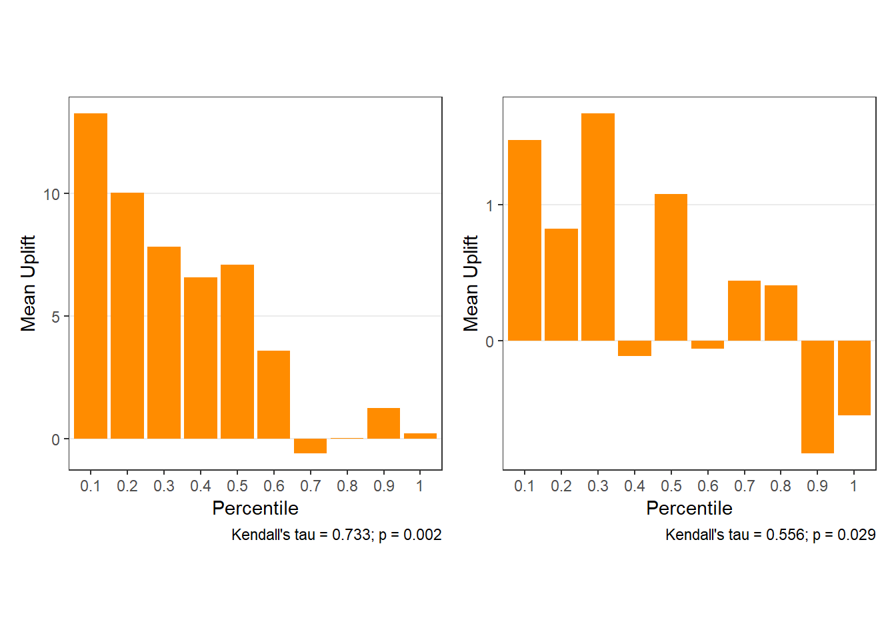</p>
<ul>
<li>Both models look better when using 5 “bins” instead of 10 (code not shown)
<ul>
<li><span class="math inline">\(visit\)</span> rank correlation stronger (although not significant) (<span class="math inline">\(\text{Kendall&#39;s }\tau=0.8\text{; }p=0.083\)</span>)</li>
<li><span class="math inline">\(spend\)</span> rank correlation perfect (<span class="math inline">\(\text{Kendall&#39;s }\tau=1\text{; }p=0.017\)</span>)</li>
</ul></li>
</ul>
<p>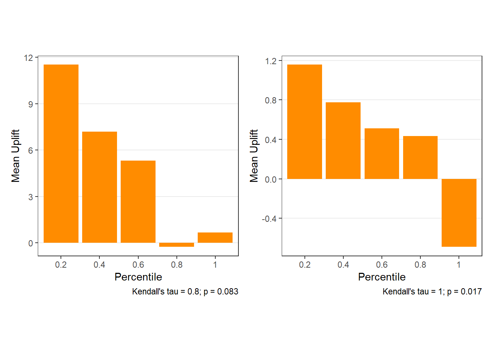</p>
</div>
<div id="cumulative-gain-by-group" class="section level4 hasAnchor" number="7.7.6.2">
<h4><span class="header-section-number">7.7.6.2</span> Cumulative Gain by Group<a href="ab-testing-and-uplift-modeling.html#cumulative-gain-by-group" class="anchor-section" aria-label="Anchor link to header"></a></h4>
<ul>
<li><strong><em>Visit</em></strong>
<ul>
<li>Maximum gain is at 100%, but…</li>
<li>Top 60% seems almost as good</li>
</ul></li>
<li><strong><em>Spend</em></strong>
<ul>
<li>Model has good gain through top 30%, then varies up to a max at 80%</li>
</ul></li>
</ul>
<details class=chunk-details><summary class=chunk-summary><span class=chunk-summary-text>Code</span></summary>
<div class="sourceCode" id="cb99"><pre class="sourceCode r"><code class="sourceCode r"><span id="cb99-1"><a href="ab-testing-and-uplift-modeling.html#cb99-1" tabindex="-1"></a><span class="co"># -------------------------------------</span></span>
<span id="cb99-2"><a href="ab-testing-and-uplift-modeling.html#cb99-2" tabindex="-1"></a><span class="co"># Examine Cumulative Uplift by Group</span></span>
<span id="cb99-3"><a href="ab-testing-and-uplift-modeling.html#cb99-3" tabindex="-1"></a><span class="co"># -------------------------------------</span></span>
<span id="cb99-4"><a href="ab-testing-and-uplift-modeling.html#cb99-4" tabindex="-1"></a>visit_uplift<span class="sc">$</span>plots<span class="sc">$</span>c.gain</span>
<span id="cb99-5"><a href="ab-testing-and-uplift-modeling.html#cb99-5" tabindex="-1"></a>spend_uplift<span class="sc">$</span>plots<span class="sc">$</span>c.gain</span></code></pre></div>
</details>
<p>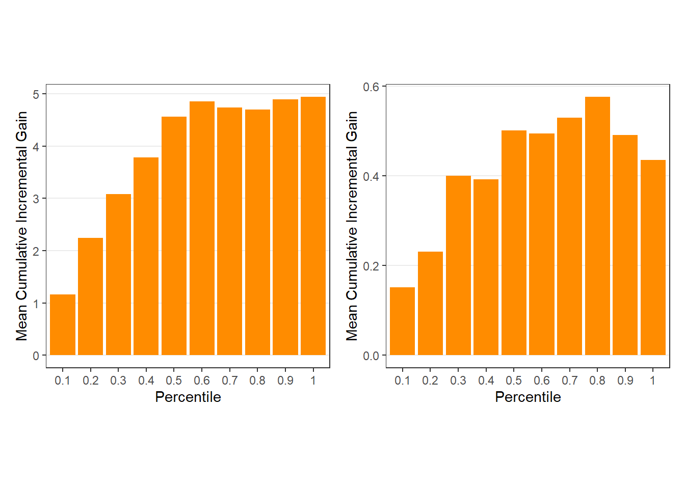</p>
<ul>
<li>Examine with 5 “bins” also
<ul>
<li>Results about the same</li>
</ul></li>
</ul>
<p>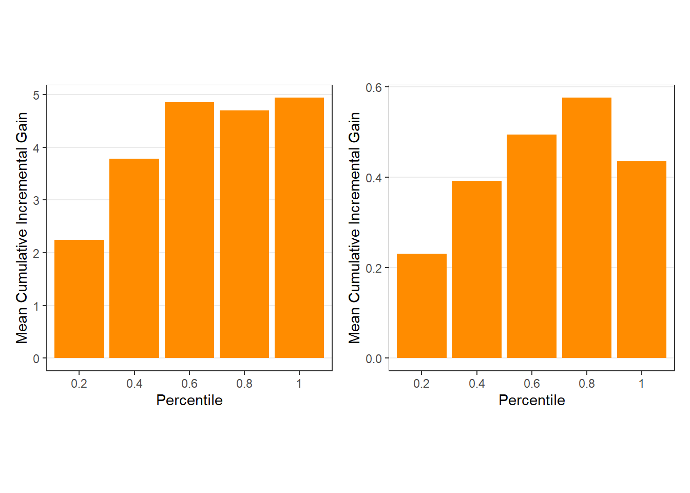</p>
</div>
<div id="qini-curve" class="section level4 hasAnchor" number="7.7.6.3">
<h4><span class="header-section-number">7.7.6.3</span> Qini Curve<a href="ab-testing-and-uplift-modeling.html#qini-curve" class="anchor-section" aria-label="Anchor link to header"></a></h4>
<ul>
<li><strong><em>Visit</em></strong>
<ul>
<li>Maximum gain is at 100%, but…</li>
<li>Top 60% seems almost as good</li>
</ul></li>
<li><strong><em>Spend</em></strong>
<ul>
<li>Model has good gain through top 30%, then varies up to a max at 80%</li>
</ul></li>
</ul>
<details class=chunk-details><summary class=chunk-summary><span class=chunk-summary-text>Code</span></summary>
<div class="sourceCode" id="cb100"><pre class="sourceCode r"><code class="sourceCode r"><span id="cb100-1"><a href="ab-testing-and-uplift-modeling.html#cb100-1" tabindex="-1"></a><span class="co"># -------------------------------------</span></span>
<span id="cb100-2"><a href="ab-testing-and-uplift-modeling.html#cb100-2" tabindex="-1"></a><span class="co"># Examine Qini Curve Plots</span></span>
<span id="cb100-3"><a href="ab-testing-and-uplift-modeling.html#cb100-3" tabindex="-1"></a><span class="co"># -------------------------------------</span></span>
<span id="cb100-4"><a href="ab-testing-and-uplift-modeling.html#cb100-4" tabindex="-1"></a>visit_uplift<span class="sc">$</span>plots<span class="sc">$</span>qini</span>
<span id="cb100-5"><a href="ab-testing-and-uplift-modeling.html#cb100-5" tabindex="-1"></a>spend_uplift<span class="sc">$</span>plots<span class="sc">$</span>qini</span></code></pre></div>
</details>
<p>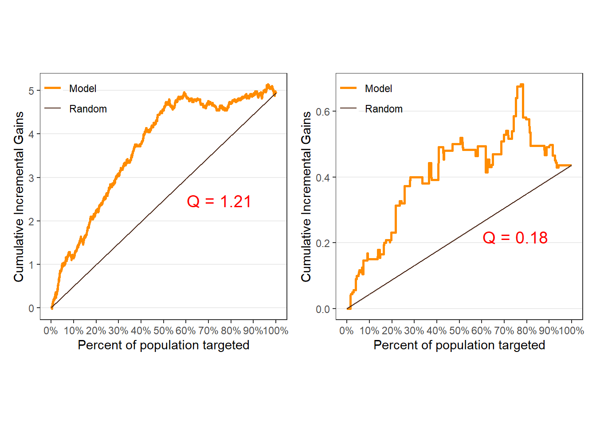</p>
</div>
</div>
<div id="treatment-effect-heterogeneity-using-lift" class="section level3 hasAnchor" number="7.7.7">
<h3><span class="header-section-number">7.7.7</span> Treatment Effect Heterogeneity using LIFT<a href="ab-testing-and-uplift-modeling.html#treatment-effect-heterogeneity-using-lift" class="anchor-section" aria-label="Anchor link to header"></a></h3>
<p>Create the necessary tables and plots to examine the treatment effect</p>
<details class=chunk-details><summary class=chunk-summary><span class=chunk-summary-text>Code</span></summary>
<div class="sourceCode" id="cb101"><pre class="sourceCode r"><code class="sourceCode r"><span id="cb101-1"><a href="ab-testing-and-uplift-modeling.html#cb101-1" tabindex="-1"></a><span class="co"># -------------------------------------</span></span>
<span id="cb101-2"><a href="ab-testing-and-uplift-modeling.html#cb101-2" tabindex="-1"></a><span class="co"># Create Lift Plots</span></span>
<span id="cb101-3"><a href="ab-testing-and-uplift-modeling.html#cb101-3" tabindex="-1"></a><span class="co"># -------------------------------------</span></span>
<span id="cb101-4"><a href="ab-testing-and-uplift-modeling.html#cb101-4" tabindex="-1"></a>visit_lift <span class="ot">&lt;-</span> <span class="fu">easy_liftplots</span>(<span class="at">x =</span> visit_uplift, <span class="at">ci=</span><span class="fl">0.99</span>)</span>
<span id="cb101-5"><a href="ab-testing-and-uplift-modeling.html#cb101-5" tabindex="-1"></a>spend_lift <span class="ot">&lt;-</span> <span class="fu">easy_liftplots</span>(<span class="at">x =</span> spend_uplift, <span class="at">ci=</span><span class="fl">0.99</span>)</span></code></pre></div>
</details>
<div id="histogram-of-predicted-lift" class="section level4 hasAnchor" number="7.7.7.1">
<h4><span class="header-section-number">7.7.7.1</span> Histogram of predicted LIFT<a href="ab-testing-and-uplift-modeling.html#histogram-of-predicted-lift" class="anchor-section" aria-label="Anchor link to header"></a></h4>
<ul>
<li>Both have pretty wide range</li>
<li><span class="math inline">\(visit\)</span> seems to have bi-modal distribution
<ul>
<li>One group right around 0</li>
<li>One group with positive lift</li>
</ul></li>
<li><span class="math inline">\(spend\)</span> is more normally distributed but skewed toward positive lift</li>
</ul>
<details class=chunk-details><summary class=chunk-summary><span class=chunk-summary-text>Code</span></summary>
<div class="sourceCode" id="cb102"><pre class="sourceCode r"><code class="sourceCode r"><span id="cb102-1"><a href="ab-testing-and-uplift-modeling.html#cb102-1" tabindex="-1"></a>visit_lift<span class="sc">$</span>hist</span>
<span id="cb102-2"><a href="ab-testing-and-uplift-modeling.html#cb102-2" tabindex="-1"></a>spend_lift<span class="sc">$</span>hist</span></code></pre></div>
</details>
<p>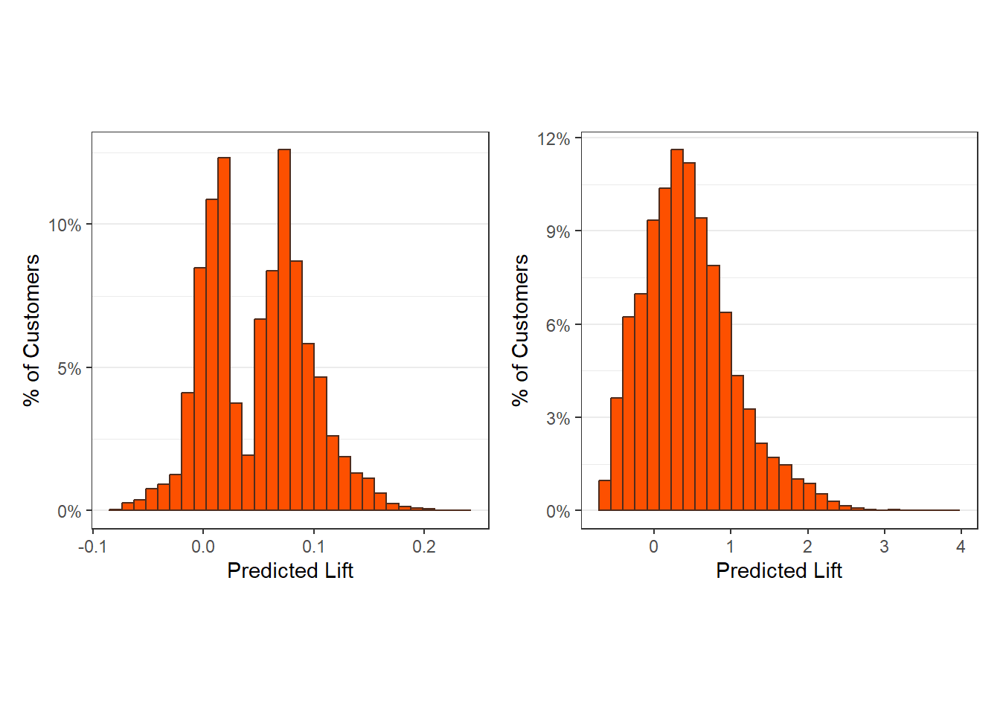</p>
</div>
<div id="lift-by-covariate" class="section level4 hasAnchor" number="7.7.7.2">
<h4><span class="header-section-number">7.7.7.2</span> Lift by Covariate<a href="ab-testing-and-uplift-modeling.html#lift-by-covariate" class="anchor-section" aria-label="Anchor link to header"></a></h4>
<ul>
<li><em>Recency</em>
<ul>
<li>Visit and Spend LIFT decrease with <span class="math inline">\(recency\)</span></li>
</ul></li>
</ul>
<details class=chunk-details><summary class=chunk-summary><span class=chunk-summary-text>Code</span></summary>
<div class="sourceCode" id="cb103"><pre class="sourceCode r"><code class="sourceCode r"><span id="cb103-1"><a href="ab-testing-and-uplift-modeling.html#cb103-1" tabindex="-1"></a>visit_lift<span class="sc">$</span>plots_main<span class="sc">$</span>recency</span>
<span id="cb103-2"><a href="ab-testing-and-uplift-modeling.html#cb103-2" tabindex="-1"></a>spend_lift<span class="sc">$</span>plots_main<span class="sc">$</span>recency</span></code></pre></div>
</details>
<p>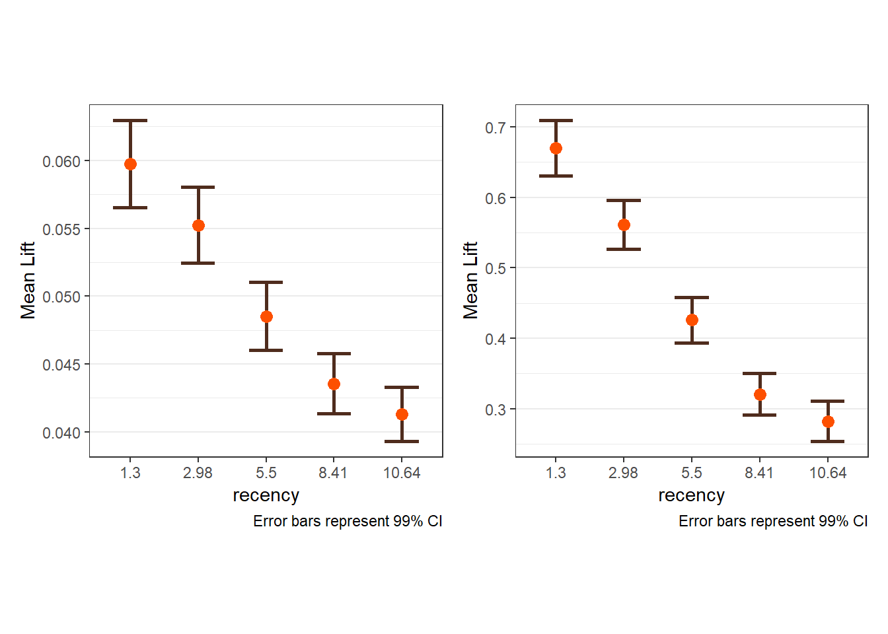</p>
<ul>
<li><em>History</em>
<ul>
<li>Visit and Spend LIFT increase with <span class="math inline">\(history\)</span>, although maybe not linearly</li>
</ul></li>
</ul>
<details class=chunk-details><summary class=chunk-summary><span class=chunk-summary-text>Code</span></summary>
<div class="sourceCode" id="cb104"><pre class="sourceCode r"><code class="sourceCode r"><span id="cb104-1"><a href="ab-testing-and-uplift-modeling.html#cb104-1" tabindex="-1"></a>visit_lift<span class="sc">$</span>plots_main<span class="sc">$</span>history</span>
<span id="cb104-2"><a href="ab-testing-and-uplift-modeling.html#cb104-2" tabindex="-1"></a>spend_lift<span class="sc">$</span>plots_main<span class="sc">$</span>history</span></code></pre></div>
</details>
<p>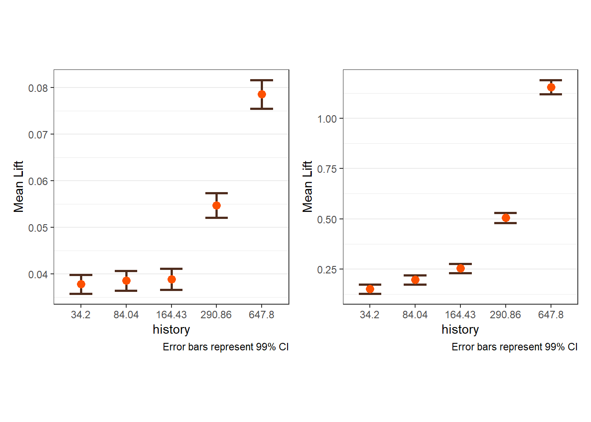</p>
<ul>
<li><em>Womens</em>
<ul>
<li>Visit and Spend LIFT is better for those that have purchased women’s merchandise in previous year (i.e., <span class="math inline">\(womens=\text{Yes}\)</span></li>
</ul></li>
</ul>
<details class=chunk-details><summary class=chunk-summary><span class=chunk-summary-text>Code</span></summary>
<div class="sourceCode" id="cb105"><pre class="sourceCode r"><code class="sourceCode r"><span id="cb105-1"><a href="ab-testing-and-uplift-modeling.html#cb105-1" tabindex="-1"></a>visit_lift<span class="sc">$</span>plots_main<span class="sc">$</span>womens</span>
<span id="cb105-2"><a href="ab-testing-and-uplift-modeling.html#cb105-2" tabindex="-1"></a>spend_lift<span class="sc">$</span>plots_main<span class="sc">$</span>womens</span></code></pre></div>
</details>
<p>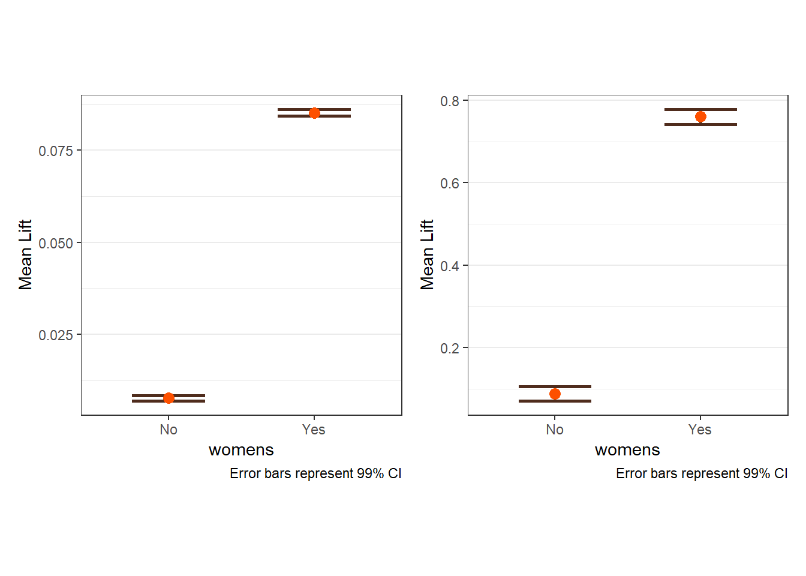</p>
<ul>
<li><em>Newbie</em>
<ul>
<li>Visit and Spend LIFT is better for “new” customers (i.e., <span class="math inline">\(newbie=\text{Yes}\)</span></li>
</ul></li>
</ul>
<details class=chunk-details><summary class=chunk-summary><span class=chunk-summary-text>Code</span></summary>
<div class="sourceCode" id="cb106"><pre class="sourceCode r"><code class="sourceCode r"><span id="cb106-1"><a href="ab-testing-and-uplift-modeling.html#cb106-1" tabindex="-1"></a>visit_lift<span class="sc">$</span>plots_main<span class="sc">$</span>newbie</span>
<span id="cb106-2"><a href="ab-testing-and-uplift-modeling.html#cb106-2" tabindex="-1"></a>spend_lift<span class="sc">$</span>plots_main<span class="sc">$</span>newbie</span></code></pre></div>
</details>
<p>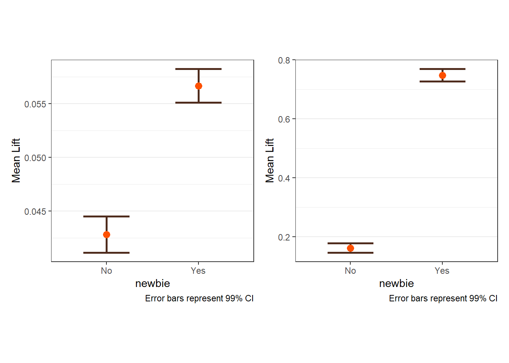</p>
<ul>
<li><em>Zip</em>
<ul>
<li>Visit LIFT increases with “urbanicity”</li>
<li>Spend LIFT is higher for urban customers</li>
</ul></li>
</ul>
<details class=chunk-details><summary class=chunk-summary><span class=chunk-summary-text>Code</span></summary>
<div class="sourceCode" id="cb107"><pre class="sourceCode r"><code class="sourceCode r"><span id="cb107-1"><a href="ab-testing-and-uplift-modeling.html#cb107-1" tabindex="-1"></a>visit_lift<span class="sc">$</span>plots_main<span class="sc">$</span>zip</span>
<span id="cb107-2"><a href="ab-testing-and-uplift-modeling.html#cb107-2" tabindex="-1"></a>spend_lift<span class="sc">$</span>plots_main<span class="sc">$</span>zip</span></code></pre></div>
</details>
<p>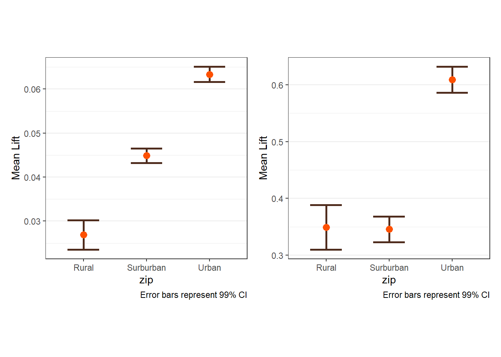</p>
<ul>
<li><em>Channel</em>
<ul>
<li>Visit and Spend LIFT is greatest for the “Multichannel” <span class="math inline">\(channel\)</span></li>
</ul></li>
</ul>
<details class=chunk-details><summary class=chunk-summary><span class=chunk-summary-text>Code</span></summary>
<div class="sourceCode" id="cb108"><pre class="sourceCode r"><code class="sourceCode r"><span id="cb108-1"><a href="ab-testing-and-uplift-modeling.html#cb108-1" tabindex="-1"></a>visit_lift<span class="sc">$</span>plots_main<span class="sc">$</span>channel</span>
<span id="cb108-2"><a href="ab-testing-and-uplift-modeling.html#cb108-2" tabindex="-1"></a>spend_lift<span class="sc">$</span>plots_main<span class="sc">$</span>channel</span></code></pre></div>
</details>
<p>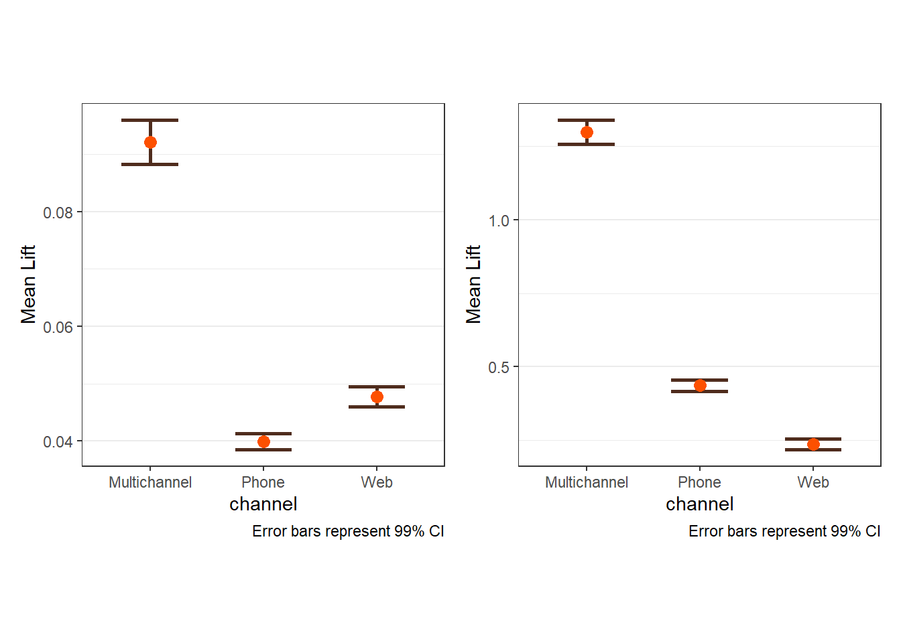</p>
</div>
<div id="covariate-importance-rankings" class="section level4 hasAnchor" number="7.7.7.3">
<h4><span class="header-section-number">7.7.7.3</span> Covariate Importance Rankings<a href="ab-testing-and-uplift-modeling.html#covariate-importance-rankings" class="anchor-section" aria-label="Anchor link to header"></a></h4>
<p><strong><em>Visit</em></strong></p>
<ul>
<li><span class="math inline">\(womens\)</span>: greatest variation in predicted lift
<ul>
<li>Highest WMAE (0.0385) and large CATE (0.0420)</li>
</ul></li>
<li><span class="math inline">\(history\)</span> and <span class="math inline">\(zip\)</span>: moderate variation in predicted lift
<ul>
<li>Moderately high WMAEs (0.0136 and 0.0110) but smaller than <span class="math inline">\(womens\)</span></li>
</ul></li>
<li><span class="math inline">\(channel\)</span>: moderate variation in predicted lift
<ul>
<li>Moderately high WMAE (0.0102) but has one especially distinct group based on CATE (0.0424)</li>
</ul></li>
<li><span class="math inline">\(newbie\)</span>: relatively little variation in predicted lift
<ul>
<li>WMAE (0.0069) and CATE (0.0070) are small, indicating that lift is fairly similar across its groups</li>
</ul></li>
<li><span class="math inline">\(recency\)</span>: relatively little variation in predicted lift
<ul>
<li>WMAE (0.0063) and CATE (0.0101) are the lowest, suggesting lift remains fairly stable across recency levels</li>
</ul></li>
</ul>
<details class=chunk-details><summary class=chunk-summary><span class=chunk-summary-text>Code</span></summary>
<div class="sourceCode" id="cb109"><pre class="sourceCode r"><code class="sourceCode r"><span id="cb109-1"><a href="ab-testing-and-uplift-modeling.html#cb109-1" tabindex="-1"></a>visit_lift<span class="sc">$</span>rank_main</span></code></pre></div>
</details>
<div class="tabwid"><style>.cl-302f3eaa{}.cl-3027bc98{font-family:'Arial';font-size:11pt;font-weight:normal;font-style:normal;text-decoration:none;color:rgba(0, 0, 0, 1.00);background-color:transparent;}.cl-302b0790{margin:0;text-align:center;border-bottom: 0 solid rgba(0, 0, 0, 1.00);border-top: 0 solid rgba(0, 0, 0, 1.00);border-left: 0 solid rgba(0, 0, 0, 1.00);border-right: 0 solid rgba(0, 0, 0, 1.00);padding-bottom:5pt;padding-top:5pt;padding-left:5pt;padding-right:5pt;line-height: 1;background-color:transparent;}.cl-302b303a{width:0.939in;background-color:transparent;vertical-align: middle;border-bottom: 1.5pt solid rgba(102, 102, 102, 1.00);border-top: 1.5pt solid rgba(102, 102, 102, 1.00);border-left: 0 solid rgba(0, 0, 0, 1.00);border-right: 0 solid rgba(0, 0, 0, 1.00);margin-bottom:0;margin-top:0;margin-left:0;margin-right:0;}.cl-302b304e{width:0.854in;background-color:transparent;vertical-align: middle;border-bottom: 1.5pt solid rgba(102, 102, 102, 1.00);border-top: 1.5pt solid rgba(102, 102, 102, 1.00);border-left: 0 solid rgba(0, 0, 0, 1.00);border-right: 0 solid rgba(0, 0, 0, 1.00);margin-bottom:0;margin-top:0;margin-left:0;margin-right:0;}.cl-302b304f{width:1.669in;background-color:transparent;vertical-align: middle;border-bottom: 1.5pt solid rgba(102, 102, 102, 1.00);border-top: 1.5pt solid rgba(102, 102, 102, 1.00);border-left: 0 solid rgba(0, 0, 0, 1.00);border-right: 0 solid rgba(0, 0, 0, 1.00);margin-bottom:0;margin-top:0;margin-left:0;margin-right:0;}.cl-302b3050{width:1.177in;background-color:transparent;vertical-align: middle;border-bottom: 1.5pt solid rgba(102, 102, 102, 1.00);border-top: 1.5pt solid rgba(102, 102, 102, 1.00);border-left: 0 solid rgba(0, 0, 0, 1.00);border-right: 0 solid rgba(0, 0, 0, 1.00);margin-bottom:0;margin-top:0;margin-left:0;margin-right:0;}.cl-302b3058{width:0.914in;background-color:transparent;vertical-align: middle;border-bottom: 1.5pt solid rgba(102, 102, 102, 1.00);border-top: 1.5pt solid rgba(102, 102, 102, 1.00);border-left: 0 solid rgba(0, 0, 0, 1.00);border-right: 0 solid rgba(0, 0, 0, 1.00);margin-bottom:0;margin-top:0;margin-left:0;margin-right:0;}.cl-302b3059{width:0.939in;background-color:transparent;vertical-align: middle;border-bottom: 0 solid rgba(0, 0, 0, 1.00);border-top: 0 solid rgba(0, 0, 0, 1.00);border-left: 0 solid rgba(0, 0, 0, 1.00);border-right: 0 solid rgba(0, 0, 0, 1.00);margin-bottom:0;margin-top:0;margin-left:0;margin-right:0;}.cl-302b305a{width:0.854in;background-color:transparent;vertical-align: middle;border-bottom: 0 solid rgba(0, 0, 0, 1.00);border-top: 0 solid rgba(0, 0, 0, 1.00);border-left: 0 solid rgba(0, 0, 0, 1.00);border-right: 0 solid rgba(0, 0, 0, 1.00);margin-bottom:0;margin-top:0;margin-left:0;margin-right:0;}.cl-302b3062{width:1.669in;background-color:transparent;vertical-align: middle;border-bottom: 0 solid rgba(0, 0, 0, 1.00);border-top: 0 solid rgba(0, 0, 0, 1.00);border-left: 0 solid rgba(0, 0, 0, 1.00);border-right: 0 solid rgba(0, 0, 0, 1.00);margin-bottom:0;margin-top:0;margin-left:0;margin-right:0;}.cl-302b3063{width:1.177in;background-color:transparent;vertical-align: middle;border-bottom: 0 solid rgba(0, 0, 0, 1.00);border-top: 0 solid rgba(0, 0, 0, 1.00);border-left: 0 solid rgba(0, 0, 0, 1.00);border-right: 0 solid rgba(0, 0, 0, 1.00);margin-bottom:0;margin-top:0;margin-left:0;margin-right:0;}.cl-302b306c{width:0.914in;background-color:transparent;vertical-align: middle;border-bottom: 0 solid rgba(0, 0, 0, 1.00);border-top: 0 solid rgba(0, 0, 0, 1.00);border-left: 0 solid rgba(0, 0, 0, 1.00);border-right: 0 solid rgba(0, 0, 0, 1.00);margin-bottom:0;margin-top:0;margin-left:0;margin-right:0;}.cl-302b306d{width:0.939in;background-color:transparent;vertical-align: middle;border-bottom: 0 solid rgba(0, 0, 0, 1.00);border-top: 0 solid rgba(0, 0, 0, 1.00);border-left: 0 solid rgba(0, 0, 0, 1.00);border-right: 0 solid rgba(0, 0, 0, 1.00);margin-bottom:0;margin-top:0;margin-left:0;margin-right:0;}.cl-302b3076{width:0.854in;background-color:transparent;vertical-align: middle;border-bottom: 0 solid rgba(0, 0, 0, 1.00);border-top: 0 solid rgba(0, 0, 0, 1.00);border-left: 0 solid rgba(0, 0, 0, 1.00);border-right: 0 solid rgba(0, 0, 0, 1.00);margin-bottom:0;margin-top:0;margin-left:0;margin-right:0;}.cl-302b3077{width:1.669in;background-color:transparent;vertical-align: middle;border-bottom: 0 solid rgba(0, 0, 0, 1.00);border-top: 0 solid rgba(0, 0, 0, 1.00);border-left: 0 solid rgba(0, 0, 0, 1.00);border-right: 0 solid rgba(0, 0, 0, 1.00);margin-bottom:0;margin-top:0;margin-left:0;margin-right:0;}.cl-302b3080{width:1.177in;background-color:transparent;vertical-align: middle;border-bottom: 0 solid rgba(0, 0, 0, 1.00);border-top: 0 solid rgba(0, 0, 0, 1.00);border-left: 0 solid rgba(0, 0, 0, 1.00);border-right: 0 solid rgba(0, 0, 0, 1.00);margin-bottom:0;margin-top:0;margin-left:0;margin-right:0;}.cl-302b3081{width:0.914in;background-color:transparent;vertical-align: middle;border-bottom: 0 solid rgba(0, 0, 0, 1.00);border-top: 0 solid rgba(0, 0, 0, 1.00);border-left: 0 solid rgba(0, 0, 0, 1.00);border-right: 0 solid rgba(0, 0, 0, 1.00);margin-bottom:0;margin-top:0;margin-left:0;margin-right:0;}.cl-302b3082{width:0.939in;background-color:transparent;vertical-align: middle;border-bottom: 0 solid rgba(0, 0, 0, 1.00);border-top: 0 solid rgba(0, 0, 0, 1.00);border-left: 0 solid rgba(0, 0, 0, 1.00);border-right: 0 solid rgba(0, 0, 0, 1.00);margin-bottom:0;margin-top:0;margin-left:0;margin-right:0;}.cl-302b308a{width:0.854in;background-color:transparent;vertical-align: middle;border-bottom: 0 solid rgba(0, 0, 0, 1.00);border-top: 0 solid rgba(0, 0, 0, 1.00);border-left: 0 solid rgba(0, 0, 0, 1.00);border-right: 0 solid rgba(0, 0, 0, 1.00);margin-bottom:0;margin-top:0;margin-left:0;margin-right:0;}.cl-302b308b{width:1.669in;background-color:transparent;vertical-align: middle;border-bottom: 0 solid rgba(0, 0, 0, 1.00);border-top: 0 solid rgba(0, 0, 0, 1.00);border-left: 0 solid rgba(0, 0, 0, 1.00);border-right: 0 solid rgba(0, 0, 0, 1.00);margin-bottom:0;margin-top:0;margin-left:0;margin-right:0;}.cl-302b308c{width:1.177in;background-color:transparent;vertical-align: middle;border-bottom: 0 solid rgba(0, 0, 0, 1.00);border-top: 0 solid rgba(0, 0, 0, 1.00);border-left: 0 solid rgba(0, 0, 0, 1.00);border-right: 0 solid rgba(0, 0, 0, 1.00);margin-bottom:0;margin-top:0;margin-left:0;margin-right:0;}.cl-302b308d{width:0.914in;background-color:transparent;vertical-align: middle;border-bottom: 0 solid rgba(0, 0, 0, 1.00);border-top: 0 solid rgba(0, 0, 0, 1.00);border-left: 0 solid rgba(0, 0, 0, 1.00);border-right: 0 solid rgba(0, 0, 0, 1.00);margin-bottom:0;margin-top:0;margin-left:0;margin-right:0;}.cl-302b3094{width:0.939in;background-color:transparent;vertical-align: middle;border-bottom: 1.5pt solid rgba(102, 102, 102, 1.00);border-top: 0 solid rgba(0, 0, 0, 1.00);border-left: 0 solid rgba(0, 0, 0, 1.00);border-right: 0 solid rgba(0, 0, 0, 1.00);margin-bottom:0;margin-top:0;margin-left:0;margin-right:0;}.cl-302b3095{width:0.854in;background-color:transparent;vertical-align: middle;border-bottom: 1.5pt solid rgba(102, 102, 102, 1.00);border-top: 0 solid rgba(0, 0, 0, 1.00);border-left: 0 solid rgba(0, 0, 0, 1.00);border-right: 0 solid rgba(0, 0, 0, 1.00);margin-bottom:0;margin-top:0;margin-left:0;margin-right:0;}.cl-302b3096{width:1.669in;background-color:transparent;vertical-align: middle;border-bottom: 1.5pt solid rgba(102, 102, 102, 1.00);border-top: 0 solid rgba(0, 0, 0, 1.00);border-left: 0 solid rgba(0, 0, 0, 1.00);border-right: 0 solid rgba(0, 0, 0, 1.00);margin-bottom:0;margin-top:0;margin-left:0;margin-right:0;}.cl-302b309e{width:1.177in;background-color:transparent;vertical-align: middle;border-bottom: 1.5pt solid rgba(102, 102, 102, 1.00);border-top: 0 solid rgba(0, 0, 0, 1.00);border-left: 0 solid rgba(0, 0, 0, 1.00);border-right: 0 solid rgba(0, 0, 0, 1.00);margin-bottom:0;margin-top:0;margin-left:0;margin-right:0;}.cl-302b309f{width:0.914in;background-color:transparent;vertical-align: middle;border-bottom: 1.5pt solid rgba(102, 102, 102, 1.00);border-top: 0 solid rgba(0, 0, 0, 1.00);border-left: 0 solid rgba(0, 0, 0, 1.00);border-right: 0 solid rgba(0, 0, 0, 1.00);margin-bottom:0;margin-top:0;margin-left:0;margin-right:0;}</style><table data-quarto-disable-processing='true' class='cl-302f3eaa'><thead><tr style="overflow-wrap:break-word;"><th class="cl-302b303a"><p class="cl-302b0790"><span class="cl-3027bc98">Covariate</span></p></th><th class="cl-302b304e"><p class="cl-302b0790"><span class="cl-3027bc98">Type</span></p></th><th class="cl-302b304f"><p class="cl-302b0790"><span class="cl-3027bc98">Importance (WMAE)</span></p></th><th class="cl-302b3050"><p class="cl-302b0790"><span class="cl-3027bc98">Max |CATE|</span></p></th><th class="cl-302b3058"><p class="cl-302b0790"><span class="cl-3027bc98"># Groups</span></p></th></tr></thead><tbody><tr style="overflow-wrap:break-word;"><td class="cl-302b3059"><p class="cl-302b0790"><span class="cl-3027bc98">womens</span></p></td><td class="cl-302b305a"><p class="cl-302b0790"><span class="cl-3027bc98">Factor</span></p></td><td class="cl-302b3062"><p class="cl-302b0790"><span class="cl-3027bc98">0.038489210</span></p></td><td class="cl-302b3063"><p class="cl-302b0790"><span class="cl-3027bc98">0.042000447</span></p></td><td class="cl-302b306c"><p class="cl-302b0790"><span class="cl-3027bc98">2</span></p></td></tr><tr style="overflow-wrap:break-word;"><td class="cl-302b306d"><p class="cl-302b0790"><span class="cl-3027bc98">history</span></p></td><td class="cl-302b3076"><p class="cl-302b0790"><span class="cl-3027bc98">Numeric</span></p></td><td class="cl-302b3077"><p class="cl-302b0790"><span class="cl-3027bc98">0.013552225</span></p></td><td class="cl-302b3080"><p class="cl-302b0790"><span class="cl-3027bc98">0.028875445</span></p></td><td class="cl-302b3081"><p class="cl-302b0790"><span class="cl-3027bc98">5</span></p></td></tr><tr style="overflow-wrap:break-word;"><td class="cl-302b3082"><p class="cl-302b0790"><span class="cl-3027bc98">zip</span></p></td><td class="cl-302b308a"><p class="cl-302b0790"><span class="cl-3027bc98">Factor</span></p></td><td class="cl-302b308b"><p class="cl-302b0790"><span class="cl-3027bc98">0.011000748</span></p></td><td class="cl-302b308c"><p class="cl-302b0790"><span class="cl-3027bc98">0.022803342</span></p></td><td class="cl-302b308d"><p class="cl-302b0790"><span class="cl-3027bc98">3</span></p></td></tr><tr style="overflow-wrap:break-word;"><td class="cl-302b3059"><p class="cl-302b0790"><span class="cl-3027bc98">channel</span></p></td><td class="cl-302b305a"><p class="cl-302b0790"><span class="cl-3027bc98">Factor</span></p></td><td class="cl-302b3062"><p class="cl-302b0790"><span class="cl-3027bc98">0.010233141</span></p></td><td class="cl-302b3063"><p class="cl-302b0790"><span class="cl-3027bc98">0.042425956</span></p></td><td class="cl-302b306c"><p class="cl-302b0790"><span class="cl-3027bc98">3</span></p></td></tr><tr style="overflow-wrap:break-word;"><td class="cl-302b3059"><p class="cl-302b0790"><span class="cl-3027bc98">newbie</span></p></td><td class="cl-302b305a"><p class="cl-302b0790"><span class="cl-3027bc98">Factor</span></p></td><td class="cl-302b3062"><p class="cl-302b0790"><span class="cl-3027bc98">0.006923927</span></p></td><td class="cl-302b3063"><p class="cl-302b0790"><span class="cl-3027bc98">0.006996693</span></p></td><td class="cl-302b306c"><p class="cl-302b0790"><span class="cl-3027bc98">2</span></p></td></tr><tr style="overflow-wrap:break-word;"><td class="cl-302b3094"><p class="cl-302b0790"><span class="cl-3027bc98">recency</span></p></td><td class="cl-302b3095"><p class="cl-302b0790"><span class="cl-3027bc98">Numeric</span></p></td><td class="cl-302b3096"><p class="cl-302b0790"><span class="cl-3027bc98">0.006252846</span></p></td><td class="cl-302b309e"><p class="cl-302b0790"><span class="cl-3027bc98">0.010072252</span></p></td><td class="cl-302b309f"><p class="cl-302b0790"><span class="cl-3027bc98">5</span></p></td></tr></tbody></table></div>
<p><strong><em>Spend</em></strong></p>
<ul>
<li><span class="math inline">\(womens\)</span>: greatest variation in predicted lift
<ul>
<li>Highest WMAE (0.3342) and moderate CATE (0.3647)</li>
</ul></li>
<li><span class="math inline">\(history\)</span>: high variation in predicted lift
<ul>
<li>High WMAE (0.3021) and high CATE (0.7028)</li>
</ul></li>
<li><span class="math inline">\(newbie\)</span>: high variation in predicted lift
<ul>
<li>High WMAE (0.2927) and moderate CATE (0.2957)</li>
</ul></li>
<li><span class="math inline">\(channel\)</span>: moderate variation in predicted lift
<ul>
<li>Moderate WMAE (0.2041) but has one especially distinct group based on CATE (0.8461)</li>
</ul></li>
<li><span class="math inline">\(recency\)</span>: relatively little variation in predicted lift
<ul>
<li>WMAE (0.1308) and CATE (0.2178) are small</li>
</ul></li>
<li><span class="math inline">\(zip\)</span>: relatively little variation in predicted lift
<ul>
<li>WMAE (0.1261) and CATE (0.1569) are the lowest, suggesting lift remains fairly stable across zip levels</li>
</ul></li>
</ul>
<details class=chunk-details><summary class=chunk-summary><span class=chunk-summary-text>Code</span></summary>
<div class="sourceCode" id="cb110"><pre class="sourceCode r"><code class="sourceCode r"><span id="cb110-1"><a href="ab-testing-and-uplift-modeling.html#cb110-1" tabindex="-1"></a>spend_lift<span class="sc">$</span>rank_main</span></code></pre></div>
</details>
<div class="tabwid"><style>.cl-304cd6cc{}.cl-3045df8e{font-family:'Arial';font-size:11pt;font-weight:normal;font-style:normal;text-decoration:none;color:rgba(0, 0, 0, 1.00);background-color:transparent;}.cl-3048c73a{margin:0;text-align:center;border-bottom: 0 solid rgba(0, 0, 0, 1.00);border-top: 0 solid rgba(0, 0, 0, 1.00);border-left: 0 solid rgba(0, 0, 0, 1.00);border-right: 0 solid rgba(0, 0, 0, 1.00);padding-bottom:5pt;padding-top:5pt;padding-left:5pt;padding-right:5pt;line-height: 1;background-color:transparent;}.cl-3048f2b4{width:0.939in;background-color:transparent;vertical-align: middle;border-bottom: 1.5pt solid rgba(102, 102, 102, 1.00);border-top: 1.5pt solid rgba(102, 102, 102, 1.00);border-left: 0 solid rgba(0, 0, 0, 1.00);border-right: 0 solid rgba(0, 0, 0, 1.00);margin-bottom:0;margin-top:0;margin-left:0;margin-right:0;}.cl-3048f2be{width:0.854in;background-color:transparent;vertical-align: middle;border-bottom: 1.5pt solid rgba(102, 102, 102, 1.00);border-top: 1.5pt solid rgba(102, 102, 102, 1.00);border-left: 0 solid rgba(0, 0, 0, 1.00);border-right: 0 solid rgba(0, 0, 0, 1.00);margin-bottom:0;margin-top:0;margin-left:0;margin-right:0;}.cl-3048f2bf{width:1.669in;background-color:transparent;vertical-align: middle;border-bottom: 1.5pt solid rgba(102, 102, 102, 1.00);border-top: 1.5pt solid rgba(102, 102, 102, 1.00);border-left: 0 solid rgba(0, 0, 0, 1.00);border-right: 0 solid rgba(0, 0, 0, 1.00);margin-bottom:0;margin-top:0;margin-left:0;margin-right:0;}.cl-3048f2c8{width:1.103in;background-color:transparent;vertical-align: middle;border-bottom: 1.5pt solid rgba(102, 102, 102, 1.00);border-top: 1.5pt solid rgba(102, 102, 102, 1.00);border-left: 0 solid rgba(0, 0, 0, 1.00);border-right: 0 solid rgba(0, 0, 0, 1.00);margin-bottom:0;margin-top:0;margin-left:0;margin-right:0;}.cl-3048f2c9{width:0.914in;background-color:transparent;vertical-align: middle;border-bottom: 1.5pt solid rgba(102, 102, 102, 1.00);border-top: 1.5pt solid rgba(102, 102, 102, 1.00);border-left: 0 solid rgba(0, 0, 0, 1.00);border-right: 0 solid rgba(0, 0, 0, 1.00);margin-bottom:0;margin-top:0;margin-left:0;margin-right:0;}.cl-3048f2d2{width:0.939in;background-color:transparent;vertical-align: middle;border-bottom: 0 solid rgba(0, 0, 0, 1.00);border-top: 0 solid rgba(0, 0, 0, 1.00);border-left: 0 solid rgba(0, 0, 0, 1.00);border-right: 0 solid rgba(0, 0, 0, 1.00);margin-bottom:0;margin-top:0;margin-left:0;margin-right:0;}.cl-3048f2d3{width:0.854in;background-color:transparent;vertical-align: middle;border-bottom: 0 solid rgba(0, 0, 0, 1.00);border-top: 0 solid rgba(0, 0, 0, 1.00);border-left: 0 solid rgba(0, 0, 0, 1.00);border-right: 0 solid rgba(0, 0, 0, 1.00);margin-bottom:0;margin-top:0;margin-left:0;margin-right:0;}.cl-3048f2dc{width:1.669in;background-color:transparent;vertical-align: middle;border-bottom: 0 solid rgba(0, 0, 0, 1.00);border-top: 0 solid rgba(0, 0, 0, 1.00);border-left: 0 solid rgba(0, 0, 0, 1.00);border-right: 0 solid rgba(0, 0, 0, 1.00);margin-bottom:0;margin-top:0;margin-left:0;margin-right:0;}.cl-3048f2dd{width:1.103in;background-color:transparent;vertical-align: middle;border-bottom: 0 solid rgba(0, 0, 0, 1.00);border-top: 0 solid rgba(0, 0, 0, 1.00);border-left: 0 solid rgba(0, 0, 0, 1.00);border-right: 0 solid rgba(0, 0, 0, 1.00);margin-bottom:0;margin-top:0;margin-left:0;margin-right:0;}.cl-3048f2e6{width:0.914in;background-color:transparent;vertical-align: middle;border-bottom: 0 solid rgba(0, 0, 0, 1.00);border-top: 0 solid rgba(0, 0, 0, 1.00);border-left: 0 solid rgba(0, 0, 0, 1.00);border-right: 0 solid rgba(0, 0, 0, 1.00);margin-bottom:0;margin-top:0;margin-left:0;margin-right:0;}.cl-3048f2e7{width:0.939in;background-color:transparent;vertical-align: middle;border-bottom: 0 solid rgba(0, 0, 0, 1.00);border-top: 0 solid rgba(0, 0, 0, 1.00);border-left: 0 solid rgba(0, 0, 0, 1.00);border-right: 0 solid rgba(0, 0, 0, 1.00);margin-bottom:0;margin-top:0;margin-left:0;margin-right:0;}.cl-3048f2e8{width:0.854in;background-color:transparent;vertical-align: middle;border-bottom: 0 solid rgba(0, 0, 0, 1.00);border-top: 0 solid rgba(0, 0, 0, 1.00);border-left: 0 solid rgba(0, 0, 0, 1.00);border-right: 0 solid rgba(0, 0, 0, 1.00);margin-bottom:0;margin-top:0;margin-left:0;margin-right:0;}.cl-3048f2f0{width:1.669in;background-color:transparent;vertical-align: middle;border-bottom: 0 solid rgba(0, 0, 0, 1.00);border-top: 0 solid rgba(0, 0, 0, 1.00);border-left: 0 solid rgba(0, 0, 0, 1.00);border-right: 0 solid rgba(0, 0, 0, 1.00);margin-bottom:0;margin-top:0;margin-left:0;margin-right:0;}.cl-3048f2f1{width:1.103in;background-color:transparent;vertical-align: middle;border-bottom: 0 solid rgba(0, 0, 0, 1.00);border-top: 0 solid rgba(0, 0, 0, 1.00);border-left: 0 solid rgba(0, 0, 0, 1.00);border-right: 0 solid rgba(0, 0, 0, 1.00);margin-bottom:0;margin-top:0;margin-left:0;margin-right:0;}.cl-3048f2fa{width:0.914in;background-color:transparent;vertical-align: middle;border-bottom: 0 solid rgba(0, 0, 0, 1.00);border-top: 0 solid rgba(0, 0, 0, 1.00);border-left: 0 solid rgba(0, 0, 0, 1.00);border-right: 0 solid rgba(0, 0, 0, 1.00);margin-bottom:0;margin-top:0;margin-left:0;margin-right:0;}.cl-3048f2fb{width:0.939in;background-color:transparent;vertical-align: middle;border-bottom: 0 solid rgba(0, 0, 0, 1.00);border-top: 0 solid rgba(0, 0, 0, 1.00);border-left: 0 solid rgba(0, 0, 0, 1.00);border-right: 0 solid rgba(0, 0, 0, 1.00);margin-bottom:0;margin-top:0;margin-left:0;margin-right:0;}.cl-3048f2fc{width:0.854in;background-color:transparent;vertical-align: middle;border-bottom: 0 solid rgba(0, 0, 0, 1.00);border-top: 0 solid rgba(0, 0, 0, 1.00);border-left: 0 solid rgba(0, 0, 0, 1.00);border-right: 0 solid rgba(0, 0, 0, 1.00);margin-bottom:0;margin-top:0;margin-left:0;margin-right:0;}.cl-3048f304{width:1.669in;background-color:transparent;vertical-align: middle;border-bottom: 0 solid rgba(0, 0, 0, 1.00);border-top: 0 solid rgba(0, 0, 0, 1.00);border-left: 0 solid rgba(0, 0, 0, 1.00);border-right: 0 solid rgba(0, 0, 0, 1.00);margin-bottom:0;margin-top:0;margin-left:0;margin-right:0;}.cl-3048f30e{width:1.103in;background-color:transparent;vertical-align: middle;border-bottom: 0 solid rgba(0, 0, 0, 1.00);border-top: 0 solid rgba(0, 0, 0, 1.00);border-left: 0 solid rgba(0, 0, 0, 1.00);border-right: 0 solid rgba(0, 0, 0, 1.00);margin-bottom:0;margin-top:0;margin-left:0;margin-right:0;}.cl-3048f30f{width:0.914in;background-color:transparent;vertical-align: middle;border-bottom: 0 solid rgba(0, 0, 0, 1.00);border-top: 0 solid rgba(0, 0, 0, 1.00);border-left: 0 solid rgba(0, 0, 0, 1.00);border-right: 0 solid rgba(0, 0, 0, 1.00);margin-bottom:0;margin-top:0;margin-left:0;margin-right:0;}.cl-3048f318{width:0.939in;background-color:transparent;vertical-align: middle;border-bottom: 0 solid rgba(0, 0, 0, 1.00);border-top: 0 solid rgba(0, 0, 0, 1.00);border-left: 0 solid rgba(0, 0, 0, 1.00);border-right: 0 solid rgba(0, 0, 0, 1.00);margin-bottom:0;margin-top:0;margin-left:0;margin-right:0;}.cl-3048f319{width:0.854in;background-color:transparent;vertical-align: middle;border-bottom: 0 solid rgba(0, 0, 0, 1.00);border-top: 0 solid rgba(0, 0, 0, 1.00);border-left: 0 solid rgba(0, 0, 0, 1.00);border-right: 0 solid rgba(0, 0, 0, 1.00);margin-bottom:0;margin-top:0;margin-left:0;margin-right:0;}.cl-3048f31a{width:1.669in;background-color:transparent;vertical-align: middle;border-bottom: 0 solid rgba(0, 0, 0, 1.00);border-top: 0 solid rgba(0, 0, 0, 1.00);border-left: 0 solid rgba(0, 0, 0, 1.00);border-right: 0 solid rgba(0, 0, 0, 1.00);margin-bottom:0;margin-top:0;margin-left:0;margin-right:0;}.cl-3048f322{width:1.103in;background-color:transparent;vertical-align: middle;border-bottom: 0 solid rgba(0, 0, 0, 1.00);border-top: 0 solid rgba(0, 0, 0, 1.00);border-left: 0 solid rgba(0, 0, 0, 1.00);border-right: 0 solid rgba(0, 0, 0, 1.00);margin-bottom:0;margin-top:0;margin-left:0;margin-right:0;}.cl-3048f323{width:0.914in;background-color:transparent;vertical-align: middle;border-bottom: 0 solid rgba(0, 0, 0, 1.00);border-top: 0 solid rgba(0, 0, 0, 1.00);border-left: 0 solid rgba(0, 0, 0, 1.00);border-right: 0 solid rgba(0, 0, 0, 1.00);margin-bottom:0;margin-top:0;margin-left:0;margin-right:0;}.cl-3048f32c{width:0.939in;background-color:transparent;vertical-align: middle;border-bottom: 1.5pt solid rgba(102, 102, 102, 1.00);border-top: 0 solid rgba(0, 0, 0, 1.00);border-left: 0 solid rgba(0, 0, 0, 1.00);border-right: 0 solid rgba(0, 0, 0, 1.00);margin-bottom:0;margin-top:0;margin-left:0;margin-right:0;}.cl-3048f32d{width:0.854in;background-color:transparent;vertical-align: middle;border-bottom: 1.5pt solid rgba(102, 102, 102, 1.00);border-top: 0 solid rgba(0, 0, 0, 1.00);border-left: 0 solid rgba(0, 0, 0, 1.00);border-right: 0 solid rgba(0, 0, 0, 1.00);margin-bottom:0;margin-top:0;margin-left:0;margin-right:0;}.cl-3048f336{width:1.669in;background-color:transparent;vertical-align: middle;border-bottom: 1.5pt solid rgba(102, 102, 102, 1.00);border-top: 0 solid rgba(0, 0, 0, 1.00);border-left: 0 solid rgba(0, 0, 0, 1.00);border-right: 0 solid rgba(0, 0, 0, 1.00);margin-bottom:0;margin-top:0;margin-left:0;margin-right:0;}.cl-3048f337{width:1.103in;background-color:transparent;vertical-align: middle;border-bottom: 1.5pt solid rgba(102, 102, 102, 1.00);border-top: 0 solid rgba(0, 0, 0, 1.00);border-left: 0 solid rgba(0, 0, 0, 1.00);border-right: 0 solid rgba(0, 0, 0, 1.00);margin-bottom:0;margin-top:0;margin-left:0;margin-right:0;}.cl-3048f338{width:0.914in;background-color:transparent;vertical-align: middle;border-bottom: 1.5pt solid rgba(102, 102, 102, 1.00);border-top: 0 solid rgba(0, 0, 0, 1.00);border-left: 0 solid rgba(0, 0, 0, 1.00);border-right: 0 solid rgba(0, 0, 0, 1.00);margin-bottom:0;margin-top:0;margin-left:0;margin-right:0;}</style><table data-quarto-disable-processing='true' class='cl-304cd6cc'><thead><tr style="overflow-wrap:break-word;"><th class="cl-3048f2b4"><p class="cl-3048c73a"><span class="cl-3045df8e">Covariate</span></p></th><th class="cl-3048f2be"><p class="cl-3048c73a"><span class="cl-3045df8e">Type</span></p></th><th class="cl-3048f2bf"><p class="cl-3048c73a"><span class="cl-3045df8e">Importance (WMAE)</span></p></th><th class="cl-3048f2c8"><p class="cl-3048c73a"><span class="cl-3045df8e">Max |CATE|</span></p></th><th class="cl-3048f2c9"><p class="cl-3048c73a"><span class="cl-3045df8e"># Groups</span></p></th></tr></thead><tbody><tr style="overflow-wrap:break-word;"><td class="cl-3048f2d2"><p class="cl-3048c73a"><span class="cl-3045df8e">womens</span></p></td><td class="cl-3048f2d3"><p class="cl-3048c73a"><span class="cl-3045df8e">Factor</span></p></td><td class="cl-3048f2dc"><p class="cl-3048c73a"><span class="cl-3045df8e">0.3342315</span></p></td><td class="cl-3048f2dd"><p class="cl-3048c73a"><span class="cl-3045df8e">0.3647222</span></p></td><td class="cl-3048f2e6"><p class="cl-3048c73a"><span class="cl-3045df8e">2</span></p></td></tr><tr style="overflow-wrap:break-word;"><td class="cl-3048f2e7"><p class="cl-3048c73a"><span class="cl-3045df8e">history</span></p></td><td class="cl-3048f2e8"><p class="cl-3048c73a"><span class="cl-3045df8e">Numeric</span></p></td><td class="cl-3048f2f0"><p class="cl-3048c73a"><span class="cl-3045df8e">0.3021285</span></p></td><td class="cl-3048f2f1"><p class="cl-3048c73a"><span class="cl-3045df8e">0.7027797</span></p></td><td class="cl-3048f2fa"><p class="cl-3048c73a"><span class="cl-3045df8e">5</span></p></td></tr><tr style="overflow-wrap:break-word;"><td class="cl-3048f2fb"><p class="cl-3048c73a"><span class="cl-3045df8e">newbie</span></p></td><td class="cl-3048f2fc"><p class="cl-3048c73a"><span class="cl-3045df8e">Factor</span></p></td><td class="cl-3048f304"><p class="cl-3048c73a"><span class="cl-3045df8e">0.2926511</span></p></td><td class="cl-3048f30e"><p class="cl-3048c73a"><span class="cl-3045df8e">0.2957267</span></p></td><td class="cl-3048f30f"><p class="cl-3048c73a"><span class="cl-3045df8e">2</span></p></td></tr><tr style="overflow-wrap:break-word;"><td class="cl-3048f2d2"><p class="cl-3048c73a"><span class="cl-3045df8e">channel</span></p></td><td class="cl-3048f2d3"><p class="cl-3048c73a"><span class="cl-3045df8e">Factor</span></p></td><td class="cl-3048f2dc"><p class="cl-3048c73a"><span class="cl-3045df8e">0.2040795</span></p></td><td class="cl-3048f2dd"><p class="cl-3048c73a"><span class="cl-3045df8e">0.8461009</span></p></td><td class="cl-3048f2e6"><p class="cl-3048c73a"><span class="cl-3045df8e">3</span></p></td></tr><tr style="overflow-wrap:break-word;"><td class="cl-3048f318"><p class="cl-3048c73a"><span class="cl-3045df8e">recency</span></p></td><td class="cl-3048f319"><p class="cl-3048c73a"><span class="cl-3045df8e">Numeric</span></p></td><td class="cl-3048f31a"><p class="cl-3048c73a"><span class="cl-3045df8e">0.1308365</span></p></td><td class="cl-3048f322"><p class="cl-3048c73a"><span class="cl-3045df8e">0.2177836</span></p></td><td class="cl-3048f323"><p class="cl-3048c73a"><span class="cl-3045df8e">5</span></p></td></tr><tr style="overflow-wrap:break-word;"><td class="cl-3048f32c"><p class="cl-3048c73a"><span class="cl-3045df8e">zip</span></p></td><td class="cl-3048f32d"><p class="cl-3048c73a"><span class="cl-3045df8e">Factor</span></p></td><td class="cl-3048f336"><p class="cl-3048c73a"><span class="cl-3045df8e">0.1261394</span></p></td><td class="cl-3048f337"><p class="cl-3048c73a"><span class="cl-3045df8e">0.1568898</span></p></td><td class="cl-3048f338"><p class="cl-3048c73a"><span class="cl-3045df8e">3</span></p></td></tr></tbody></table></div>
</div>
</div>
<div id="conclusions" class="section level3 hasAnchor" number="7.7.8">
<h3><span class="header-section-number">7.7.8</span> Conclusions<a href="ab-testing-and-uplift-modeling.html#conclusions" class="anchor-section" aria-label="Anchor link to header"></a></h3>
<ul>
<li><strong><em>Visit</em></strong>
<ul>
<li>Uplift modeling appears to be effective at capturing those more likely to visit based on a campaign</li>
</ul></li>
<li><strong><em>Spend</em></strong>
<ul>
<li>Uplift modeling appears moderately effective at capturing those more likely to spend based on campaign</li>
</ul></li>
<li><strong><em>Overall</em></strong>
<ul>
<li>In general, the lift is greatest with:
<ul>
<li>Past purchases in <span class="math inline">\(womens\)</span></li>
<li>Greater <span class="math inline">\(history\)</span> (i.e., more spending over previous 12 months)</li>
<li>More <span class="math inline">\(recent\)</span> visits</li>
<li>Being a <span class="math inline">\(newbie\)</span> (i.e., new customer)</li>
<li>Living in a more urban environment (i.e., <span class="math inline">\(zip\)</span> = urban)</li>
<li>Being a multichannel shopper (i.e., <span class="math inline">\(channel\)</span> = multi)</li>
</ul></li>
</ul></li>
</ul>
</div>
</div>
<div id="suggested-readings-6" class="section level2 hasAnchor" number="7.8">
<h2><span class="header-section-number">7.8</span> Suggested Readings<a href="ab-testing-and-uplift-modeling.html#suggested-readings-6" class="anchor-section" aria-label="Anchor link to header"></a></h2>
<ul>
<li><em>Targeting Uplift: An introduction to net scores</em> (2019). Michel, Rene; Schnakenburg, Igor; von Martens, Tobias
<ul>
<li>BGSU Library Link:<br><a href="https://go.exlibris.link/3l5YDwQ2" target="_blank" rel="noopener noreferrer">https://go.exlibris.link/3l5YDwQ2</a></li>
</ul></li>
<li><em>Uplift Regression: The R Package tools4uplift</em> (2021). Belbahri, Mouloud; Murua, Alejandro; Gandouet, Olivier; Nia, Vahid
<ul>
<li>BGSU Library Link:<br><a href="https://arxiv.org/abs/1901.10867" target="_blank" rel="noopener noreferrer">https://arxiv.org/abs/1901.10867</a></li>
</ul></li>
</ul>

</div>
</div>
            </section>

          </div>
        </div>
      </div>
<a href="positioning.html" class="navigation navigation-prev " aria-label="Previous page"><i class="fa fa-angle-left"></i></a>
<a href="customer-choice.html" class="navigation navigation-next " aria-label="Next page"><i class="fa fa-angle-right"></i></a>
    </div>
  </div>
<script src="libs/gitbook-2.6.7/js/app.min.js"></script>
<script src="libs/gitbook-2.6.7/js/clipboard.min.js"></script>
<script src="libs/gitbook-2.6.7/js/plugin-search.js"></script>
<script src="libs/gitbook-2.6.7/js/plugin-sharing.js"></script>
<script src="libs/gitbook-2.6.7/js/plugin-fontsettings.js"></script>
<script src="libs/gitbook-2.6.7/js/plugin-bookdown.js"></script>
<script src="libs/gitbook-2.6.7/js/jquery.highlight.js"></script>
<script src="libs/gitbook-2.6.7/js/plugin-clipboard.js"></script>
<script>
gitbook.require(["gitbook"], function(gitbook) {
gitbook.start({
  "sharing": {
    "github": false,
    "facebook": true,
    "twitter": true,
    "linkedin": false,
    "weibo": false,
    "instapaper": false,
    "vk": false,
    "whatsapp": false,
    "all": ["facebook", "twitter", "linkedin", "weibo", "instapaper"]
  },
  "fontsettings": {
    "theme": "white",
    "family": "sans",
    "size": 2
  },
  "edit": null,
  "history": {
    "link": null,
    "text": null
  },
  "view": {
    "link": null,
    "text": null
  },
  "download": null,
  "search": {
    "engine": "fuse",
    "options": null
  },
  "toc": {
    "collapse": "section",
    "scroll_highlight": true
  },
  "number_sections": false
});
});
</script>

<!-- dynamically load mathjax for compatibility with self-contained -->
<script>
  (function () {
    var script = document.createElement("script");
    script.type = "text/javascript";
    var src = "true";
    if (src === "" || src === "true") src = "https://cdnjs.cloudflare.com/ajax/libs/mathjax/2.7.9/latest.js?config=TeX-MML-AM_CHTML";
    if (location.protocol !== "file:")
      if (/^https?:/.test(src))
        src = src.replace(/^https?:/, '');
    script.src = src;
    document.getElementsByTagName("head")[0].appendChild(script);
  })();
</script>
</body>

</html>
